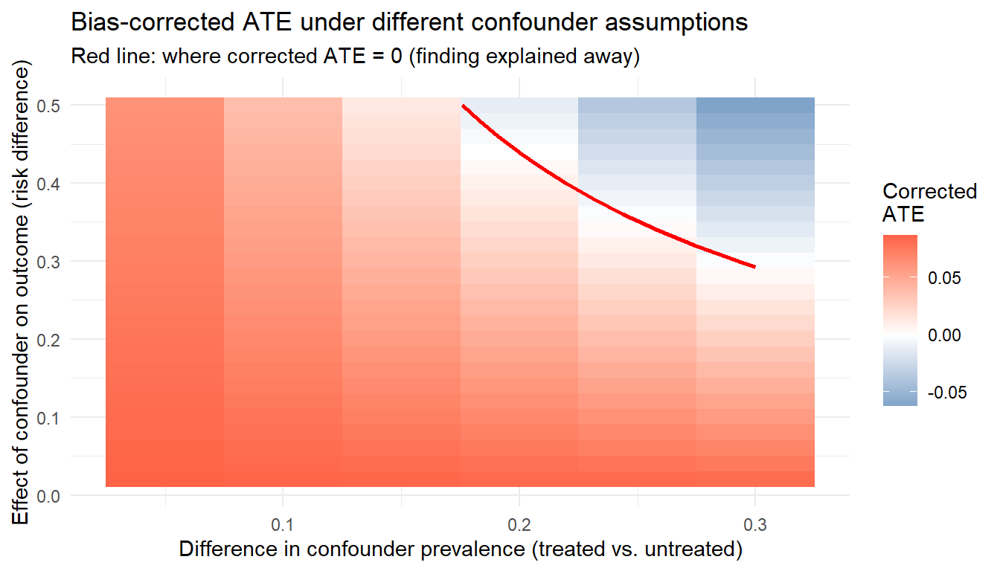
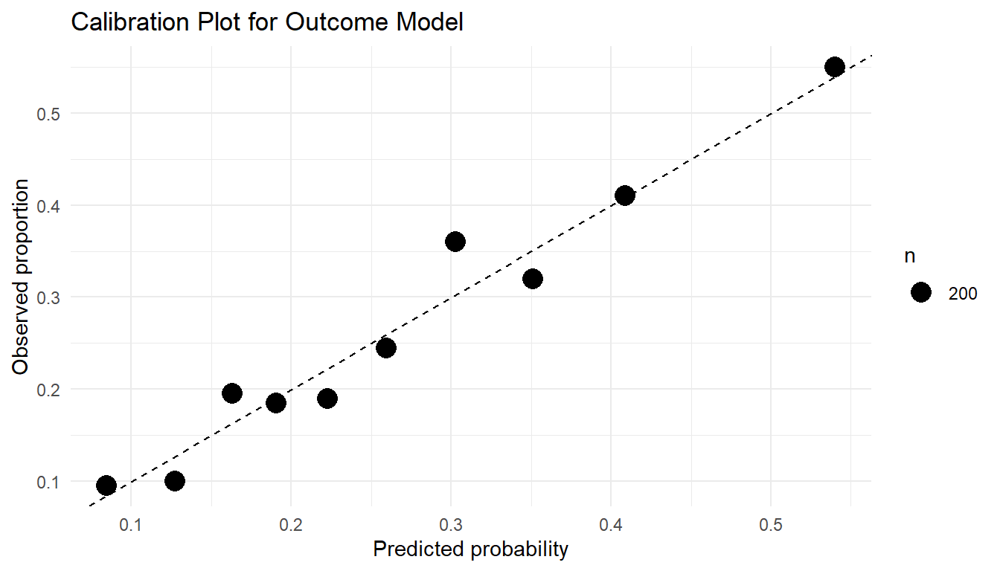

A systematic framework for credible causal inference with modern estimators
If you only read one thing
Diagnostics are decision points, not box-ticking. Organize them around four questions. Are the identification assumptions plausible (overlap, negative controls)? Are the nuisance models actually fitting (Super Learner weights, calibration)? Is the estimator stable (influence-curve outliers, cross-validated TMLE)? And would the design have had a chance of working at all (outcome-blind simulation)? A tight confidence interval means little if the propensity scores pile up near 0 or 1.
You run a TMLE analysis and get an ATE of 0.05 with a tight confidence interval. Should you believe it? That depends on a series of diagnostic checks that most applied analyses skip or report only in passing.
Consider what could be going wrong beneath a clean-looking result. The propensity scores might pile up near zero for one treatment group, so the estimate hinges on a handful of heavily weighted observations. The Super Learner might have placed all its weight on the intercept model, a sign that the nuisance functions are not fitting the data. Or the influence curve might carry a few extreme outliers that drive the entire point estimate. Without checking, you cannot tell a credible finding from an artifact.
Semiparametric estimators like TMLE and AIPW have specific conditions under which they perform well, and specific ways they can fail. Diagnostics help you assess whether those conditions hold in your data.
The diagnostics fall into four categories:
Identifiability diagnostics assess whether the causal assumptions are empirically plausible.
Nuisance model diagnostics evaluate whether the outcome regression and propensity score are well-estimated.
Estimator diagnostics check whether the TMLE or AIPW machinery is behaving as expected.
Sensitivity analyses quantify robustness to unmeasured confounding and modeling choices.
The chapter closes with a practical workflow for what to check first, followed by reporting recommendations.
Learning objectives
Distinguish among assumption diagnostics, model diagnostics, estimator diagnostics, and design diagnostics
Distinguish statistical uncertainty (sampling variability) from causal uncertainty (assumption violations)
Diagnose positivity violations through propensity score analysis, clever covariate inspection, and effective sample size calculations
Evaluate nuisance model performance using Super Learner diagnostics, calibration, and covariate balance
Interpret efficient influence function diagnostics for TMLE and AIPW
Compute and interpret E-values for unmeasured confounding
Perform quantitative bias analysis for a single unmeasured confounder, including sensitivity contour plots
Conduct truncation sensitivity analysis for propensity score bounds
Understand the role of negative controls in assessing residual bias and implement a negative control analysis in R
Use learner library sensitivity to assess model dependence
Apply sensitivity analysis frameworks including E-values, quantitative bias analysis, and truncation sensitivity
Implement estimand adaptation strategies when identifying assumptions fail
Causal conclusions depend on the identification assumptions described in Chapter 5. The diagnostics here apply across TMLE, AIPW, IPTW, longitudinal TMLE, and modified treatment policy estimators. When flexible machine learning is used for nuisance estimation, valid inference typically requires cross-fitting or a cross-validated TMLE variant.
16.1 1. A Diagnostic Framework for Targeted Learning
Every TMLE or AIPW analysis rests on three layers: identification assumptions (see Chapter 5), nuisance model estimation, and the statistical behavior of the estimator itself. Diagnostics check each layer. This chapter organizes them into four practical categories:
Assumption diagnostics assess whether the identification assumptions (exchangeability, positivity, consistency) are plausible. These are indirect checks: the assumptions themselves are not testable, but their empirical implications can be evaluated. Examples: propensity score overlap, E-values, negative controls.
Model diagnostics assess whether the nuisance functions (\(E[Y \mid A, W]\) and \(P(A \mid W)\)) are well-estimated. Examples: Super Learner cross-validated risk, calibration plots, covariate balance.
Estimator diagnostics assess whether the TMLE or AIPW machinery is behaving as expected. Examples: influence curve distributions, targeting step convergence, sensitivity of the estimate to individual observations.
Design diagnostics are conducted before the outcome data are analyzed, using only treatment and covariate information. Examples: positivity assessment, effective sample size, simulation-based power.
Diagnostics are decision points, not just reporting exercises. If positivity diagnostics reveal severe violations, consider redefining the target population or shifting to a modified treatment policy. If model diagnostics show poor nuisance estimation, expand the Super Learner library. If estimator diagnostics reveal instability, apply truncation or acknowledge that the data cannot support the intended inference. Section 8 lays out a structured decision framework for these adaptations.
16.2 2. Diagnosing Identifiability Assumptions
The three identification assumptions (exchangeability, positivity, and consistency) connect the causal parameter to the statistical estimand. If any one fails, the estimate loses its causal interpretation no matter which estimator produced it.
None of the three is testable from observed data alone. The diagnostics here work indirectly: they assess plausibility through observable implications, quantify sensitivity to violations, and flag empirical patterns that would be unlikely if the assumptions held.
16.2.1 2.1 Exchangeability (No Unmeasured Confounding)
Exchangeability (\(Y(a) \perp\!\!\!\perp A \mid W\)) asserts that the potential outcomes are independent of treatment assignment conditional on the measured covariates \(W\) (see Chapter 5 for a full treatment). Reviewers, regulators, and scientific audiences question it more than any other assumption, precisely because it can never be verified from the data at hand. The diagnostics below provide indirect evidence for or against it.
16.2.1.1 2.1.1 Conceptual DAG Diagnostics
The directed acyclic graph (DAG) is the primary tool for reasoning about exchangeability. A DAG encodes the qualitative causal structure the analyst assumes: which variables cause which others, which are unmeasured, and which causal pathways connect treatment to outcome. It makes the exchangeability assumption explicit by revealing the adjustment set, the variables that, once conditioned on, block every backdoor path from \(A\) to \(Y\).
DAG diagnostics are inherently qualitative and require domain expertise. Build the DAG with subject-matter experts, then interrogate it systematically:
Are there common causes of \(A\) and \(Y\) that are not included in \(W\)? Each such variable represents a potential source of unmeasured confounding.
Does the DAG include colliders (consequences of both \(A\) and \(Y\)), and are any of them included in \(W\)? Conditioning on a collider opens a non-causal path and introduces bias.
Does \(W\) include any mediators (variables on the causal pathway from \(A\) to \(Y\))? Conditioning on a mediator blocks part of the causal effect and changes the estimand from the total effect to a direct effect.
Draw the DAG before any statistical analysis, and revisit it whenever the analysis plan changes. Changes to the covariate adjustment set \(W\) (adding or removing a variable, say) should be justified by reference to the DAG, not by statistical criteria such as significance in a regression model.
Practical DAG Review Protocol
A structured DAG review with clinical collaborators should proceed as follows. Present the DAG with all proposed nodes and edges. For each edge, ask whether the collaborator agrees that the causal relationship exists and whether its direction is correct. For each variable not included in the DAG, ask whether it could plausibly cause both \(A\) and \(Y\). For each variable included in \(W\), ask whether it could be a consequence of \(A\) (which would make it a mediator or collider). Document disagreements and note which unmeasured variables are most concerning. This record becomes the foundation for the sensitivity analyses described below.
16.2.1.2 2.1.2 Negative Control Exposures and Outcomes
Negative controls are one of the sharpest empirical tools for detecting violations of exchangeability (Hernán and Robins 2025). The logic is falsification: if the identification assumptions hold, certain associations should be absent from the data. Finding those associations present is evidence that the assumptions may be violated.
A negative control outcome (NCO) is an outcome variable \(Y^{nc}\) known, on substantive grounds, not to be causally affected by \(A\) yet sharing the same confounding structure as the primary outcome \(Y\). Estimate the effect of \(A\) on \(Y^{nc}\) with the same adjustment set \(W\) and the same estimation procedure, and a non-null association is consistent with unmeasured confounding. The unmeasured confounder that biases the primary analysis biases the negative control analysis too, and since \(A\) has no true effect on \(Y^{nc}\), any detected association must come from bias.
A negative control exposure (NCE) is a treatment variable \(A^{nc}\) that is known not to causally affect \(Y\), but that shares the same confounding structure as the primary treatment \(A\). Estimating the effect of \(A^{nc}\) on \(Y\) using the same methods provides an analogous falsification test.
Show code
## Negative control outcome analysis## Y_nc: an outcome known to be unaffected by treatment A## If the estimated effect is non-null, residual confounding is likely presentif (requireNamespace("tmle", quietly =TRUE)) { nco_fit <- tmle::tmle(Y = dat$Y_negative_control,A = dat$A,W = dat[, covariates],Q.SL.library =c("SL.glm", "SL.glmnet", "SL.ranger"),g.SL.library =c("SL.glm", "SL.glmnet", "SL.ranger") )cat("NCO effect estimate:", round(nco_fit$estimates$ATE$psi, 4), "\n")cat("95% CI:", round(nco_fit$estimates$ATE$CI, 4), "\n")cat("If this interval excludes zero, unmeasured confounding is likely.\n")}
Choosing negative controls requires careful scientific reasoning. The NCO must be plausibly unaffected by \(A\) yet share the confounding structure of the primary outcome. In pharmacoepidemiology, a common NCO is an outcome that occurs before treatment initiation in a new-user design, or an outcome in an organ system unrelated to the drug’s mechanism of action but tied to the same health-seeking behaviors that drive treatment selection. The whole analysis rests on the assumption that \(A\) does not affect \(Y^{nc}\). If that assumption is wrong, a null finding on the NCO does not validate the primary analysis, and a non-null finding does not necessarily indicate confounding.
Negative controls can also be embedded in a formal bias-correction framework. Tchetgen Tchetgen and colleagues have developed methods that use negative control variables not merely as falsification tests but as instruments for estimating and correcting the bias from unmeasured confounding, under assumptions about the structure of that bias. These methods carry an extra assumption, that the negative control variable satisfies certain conditional independence relations with respect to the unmeasured confounder, but when it holds they give a more powerful diagnostic than a simple falsification test.
16.2.1.3 2.1.3 Sensitivity Analysis for Unmeasured Confounding
Because exchangeability cannot be verified from observed data, sensitivity analysis is how we assess how robust a causal conclusion is to potential violations. The question is simple to state: how strong would unmeasured confounding need to be to explain away the observed effect, or to change the conclusion in a meaningful way?
E-values. The E-value, introduced by VanderWeele and Ding, provides a simple summary of the minimum strength of association that an unmeasured confounder \(U\) would need to have with both the treatment \(A\) and the outcome \(Y\), conditional on the measured covariates \(W\), to fully explain away the observed treatment-outcome association. For an observed risk ratio \(\text{RR}\), the E-value is defined as:
An E-value of 3.5 means that an unmeasured confounder would need to be associated with at least a 3.5-fold increase in both the probability of treatment and the probability of the outcome, over and above the measured covariates, to pull the observed effect to the null. Compute the E-value for the confidence interval limit closest to the null as well, and you get a measure of how robust the statistical significance is, not just the point estimate, to unmeasured confounding.
E-values come with limitations the analyst should state plainly. They assume a specific form for the confounding bias (the bounding factor of Ding and VanderWeele), which may not hold in every setting. They give a worst-case bound, not a point estimate of the bias, and they say nothing about several unmeasured confounders acting jointly. They also require the effect on the risk ratio scale, which may mean transforming from another scale. When the estimate is on the risk difference scale (as this handbook recommends), convert it to a risk ratio first: given a risk difference \(\text{RD}\) and a baseline risk \(p_0\) under control, compute \(\text{RR} \approx 1 + \text{RD}/p_0\), then apply the E-value formula to this RR.
Quantitative bias analysis. Quantitative bias analysis (QBA) is a more flexible framework. It models the potential bias directly as a function of parameters that describe the unmeasured confounder. The analyst fixes a set of bias parameters, typically the prevalence of the unmeasured confounder \(U\) in the exposed and unexposed groups together with the association between \(U\) and the outcome, then computes the bias-adjusted estimate under each combination of values. Probabilistic QBA goes a step further and places prior distributions over the bias parameters to reflect uncertainty about the unmeasured confounding structure. The R packages episensr and causalsens implement QBA in practice.
The following subsections provide complete worked implementations of these tools, using a simulated pharmacoepidemiologic example.
Two kinds of uncertainty. Every causal estimate from observational data carries two distinct types of uncertainty:
Type
Source
Addressed by
Statistical
Finite sample size
Confidence intervals, standard errors
Causal
Untestable assumptions
Sensitivity analysis
A confidence interval that excludes zero tells you the estimate is unlikely to be due to chance, given that the identification assumptions hold. Sensitivity analysis asks the other question: how badly would those assumptions need to be violated to change the conclusion? Every observational causal analysis should include at least one formal sensitivity analysis.
A simulated pharmacoepi example. The code below generates a running example used throughout this section. An unmeasured confounder (frailty) affects both treatment and outcome, and we pretend it is unavailable.
Show code
library(tidyverse)set.seed(2026)n_sa <-3000# Measured confoundersage_sa <-rnorm(n_sa, 65, 10)cvd_sa <-rbinom(n_sa, 1, plogis(-1.5+0.03* (age_sa -60)))statin_sa <-rbinom(n_sa, 1, 0.4)# Unmeasured confounder (frailty) - simulated but "unobserved"frailty_sa <-rnorm(n_sa, 0, 1)# Treatment model (affected by both measured and unmeasured confounders)A_sa <-rbinom(n_sa, 1, plogis(-0.5+0.02* (age_sa -60) +0.5* cvd_sa +0.3* statin_sa +0.4* frailty_sa))# Outcome model (also affected by unmeasured confounder)Y_sa <-rbinom(n_sa, 1, plogis(-2.5+0.3* A_sa +0.04* (age_sa -60) +0.6* cvd_sa +0.2* statin_sa +0.5* frailty_sa))dat_sa <-tibble(age = age_sa, cvd = cvd_sa, statin = statin_sa,frailty = frailty_sa, A = A_sa, Y = Y_sa)# Analysis ignoring frailty (what the analyst would actually do)ps_sa <-glm(A ~ age + cvd + statin, family = binomial, data = dat_sa)out_sa <-glm(Y ~ A + age + cvd + statin, family = binomial, data = dat_sa)dat1_sa <- dat_sa %>%mutate(A =1)dat0_sa <- dat_sa %>%mutate(A =0)p1_sa <-predict(out_sa, newdata = dat1_sa, type ="response")p0_sa <-predict(out_sa, newdata = dat0_sa, type ="response")naive_ate_sa <-mean(p1_sa - p0_sa)cat("Estimated ATE (ignoring frailty):", round(naive_ate_sa, 4), "\n")#> Estimated ATE (ignoring frailty): 0.0878
Computing the E-value. The e_value() function below converts a risk ratio to the corresponding E-value and applies to both the point estimate and the confidence limit closest to the null.
Very weak: almost any unmeasured confounder could explain it
1.5 to 2.0
Moderate: a moderately strong confounder could explain it
2.0 to 3.0
Reasonably robust
> 3.0
Strong: would require a very powerful unmeasured confounder
Context matters. If the E-value is 2.5 but you know that unmeasured lifestyle factors (smoking, exercise) are likely to have risk ratios of 3 or more with both treatment and outcome, the finding is still vulnerable.
E-Value Limitations
E-values are a useful screening tool, but they have important limitations:
They assume a single unmeasured confounder. Multiple weak confounders can jointly produce large bias.
They operate on the risk ratio scale, which may not match your estimand (risk difference).
A large E-value does not prove that unmeasured confounding is absent. It only quantifies the strength required.
E-values cannot replace subject-matter reasoning about what confounders might be missing.
Quantitative bias analysis, worked through. Suppose frailty (binary) is the unmeasured confounder. Drawing on the clinical literature, we hypothesize that frail patients are 15 percentage points more likely to receive treatment (\(p_1 - p_0 = 0.15\)) and that frailty raises the risk of the outcome by 8 percentage points (\(\gamma = 0.08\)).
Show code
# Simple bias formula: Bias ≈ gamma * (p1 - p0)gamma_sa <-0.08# effect of frailty on outcome (risk difference scale)delta_p_sa <-0.15# difference in frailty prevalence between treated/untreatedbias_sa <- gamma_sa * delta_p_sacorrected_ate_sa <- naive_ate_sa - bias_satibble(Quantity =c("Observed ATE", "Estimated bias", "Bias-corrected ATE"),Value =round(c(naive_ate_sa, bias_sa, corrected_ate_sa), 4))#> # A tibble: 3 × 2#> Quantity Value#> <chr> <dbl>#> 1 Observed ATE 0.0878#> 2 Estimated bias 0.012 #> 3 Bias-corrected ATE 0.0758
The exact confounder parameters are unknown, so vary them over a plausible range to trace out a full sensitivity surface:
Show code
# Grid of bias parametersbias_grid_sa <-expand_grid(gamma =seq(0.02, 0.50, by =0.02),delta_p =seq(0.05, 0.30, by =0.05)) %>%mutate(bias = gamma * delta_p,corrected = naive_ate_sa - bias,would_flip = corrected <0 )ggplot(bias_grid_sa, aes(x = delta_p, y = gamma, fill = corrected)) +geom_tile() +geom_contour(aes(z = corrected), breaks =0, color ="red", linewidth =1) +scale_fill_gradient2(low ="steelblue", mid ="white", high ="tomato",midpoint =0, name ="Corrected\nATE") +labs(x ="Difference in confounder prevalence (treated vs. untreated)",y ="Effect of confounder on outcome (risk difference)",title ="Bias-corrected ATE under different confounder assumptions",subtitle ="Red line: where corrected ATE = 0 (finding explained away)" ) +theme_minimal()

Figure 16.1: Bias-corrected ATE across a grid of unmeasured-confounder assumptions. The red contour marks the combinations of confounder-outcome effect and confounder-prevalence difference that would pull the corrected ATE to zero. A finding is robust when the plausible region sits well away from that line.
The red contour line shows combinations of confounder strength that would reduce the corrected ATE to zero. If most plausible combinations fall below and to the left of this line, the finding is reasonably robust.
Truncation sensitivity in code. The code below varies the propensity score truncation threshold and computes the IPTW ATE at each level, returning both a numeric table and a plot.
Figure 16.2: IPTW ATE estimate as a function of the propensity-score truncation threshold. A flat line indicates the estimate does not hinge on extreme weights; a steep slope signals fragility driven by near-violations of positivity.
Negative controls in code. The following code estimates the “effect” of treatment on a negative control outcome (one that treatment cannot causally affect). A statistically meaningful non-null estimate is evidence of residual bias.
Show code
set.seed(2026)# Simulate a negative control outcome (unrelated to treatment A)dat_sa <- dat_sa %>%mutate(neg_control =rbinom(n_sa, 1, plogis(-3+0.03* (age -60) +0.3* cvd +0.4* frailty))# Note: no A term — treatment truly has no effect on this outcome )# Estimate "effect" on negative control using same analysisnc_mod_sa <-glm(neg_control ~ A + age + cvd + statin,family = binomial, data = dat_sa)nc_p1_sa <-predict(nc_mod_sa, newdata = dat1_sa, type ="response")nc_p0_sa <-predict(nc_mod_sa, newdata = dat0_sa, type ="response")nc_effect_sa <-mean(nc_p1_sa - nc_p0_sa)cat("Estimated effect on negative control:", round(nc_effect_sa, 4), "\n")#> Estimated effect on negative control: 0.0041cat("(Should be ~0 if confounding is controlled)\n")#> (Should be ~0 if confounding is controlled)
A substantially non-null result on the negative control outcome is empirical evidence that unmeasured confounding (here, frailty) is biasing the analysis.
Missing data and measurement error. Two further threats sit alongside unmeasured confounding, and an analysis that ignores them can be precise and still wrong. Both deserve a sentence in the limitations of any real-world-evidence study, and both can be probed with tools already in this section.
Measurement error means a variable is recorded imperfectly: an exposure inferred from pharmacy fills rather than actual ingestion, an outcome captured only when it triggers a claim, a confounder such as smoking abstracted from incomplete notes. Mismeasuring the outcome or the exposure threatens the consistency assumption. Mismeasuring a confounder leaves residual confounding even when that confounder is nominally adjusted for, because adjustment can only remove the part of the confounding the recorded version captures. When the error is unrelated to the other variables (nondifferential) it often, though not always, biases the effect toward the null; when it is related to them (differential, say an outcome ascertained more completely in treated patients) it can bias in either direction. The quantitative bias analysis introduced above extends directly to misclassification: posit a sensitivity and specificity for the mismeasured variable, ideally from a validation substudy, and propagate the implied bias.
Missing data is the second threat. A complete-case analysis that drops patients with a missing covariate or outcome is unbiased only when data are missing completely at random, which is rarely credible. When missingness depends on measured variables, multiple imputation or inverse-probability-of-missingness weighting recovers an unbiased estimate under that weaker assumption, and the weighting approach reuses the same machinery as the censoring weights for informative dropout (Chapter 22). When missingness depends on unmeasured variables, no method repairs it from the data alone, and the honest response is a sensitivity analysis across plausible missingness mechanisms. A full treatment of imputation and missingness weighting is beyond this handbook, but every applied analysis should state how missing data were handled and what assumption that handling relies on.
16.2.1.4 2.1.4 Structural Versus Random Confounding
One conceptual distinction bears directly on the choice of diagnostic strategy: structural versus random confounding. Structural confounding arises when the data-generating process includes a common cause of \(A\) and \(Y\) that is not measured and cannot be addressed by the study design. This is the classical unmeasured confounding problem, and it produces systematic bias that does not diminish as the sample grows. Sensitivity analyses and negative controls are the right diagnostic tools here.
Random confounding is different. It arises in finite samples when the assignment of treatment happens to produce imbalances in prognostic factors, even though no systematic confounding mechanism exists. In a randomized trial, randomization inference or precision-improving covariate adjustment handles it. In observational studies the distinction is less clean, but it still matters: if the adjustment set \(W\) is rich enough to capture all common causes of \(A\) and \(Y\), then any residual imbalance is random rather than structural, and the bias vanishes asymptotically.
The practical lesson is that not every covariate imbalance is evidence of confounding bias. Standardized mean differences between treatment groups measure the imbalance in the observed sample, but nonzero differences are expected even when exchangeability holds, especially in small samples. The question worth asking is whether the imbalances look like random variation or whether they reflect systematic confounding the adjustment set does not address.
16.2.1.5 2.1.5 Measurement Error Versus Omitted Confounders
A second distinction relevant to exchangeability diagnostics separates unmeasured confounders (variables entirely absent from the data) from mismeasured confounders (variables present but recorded with error). Both can produce bias, but the mechanisms and the fixes differ.
Measurement error in a confounder \(W_j\) weakens how much conditioning on \(W_j\) removes confounding. Even if all common causes of \(A\) and \(Y\) are present in the data, substantial measurement error can leave residual confounding that mimics an omitted variable. Classical (non-differential) measurement error in a binary confounder, for instance, biases the confounder-adjusted association toward the null, which then leaves residual confounding bias in the treatment effect estimate.
Diagnostics for measurement error are limited without validation data. When validation data are available (a gold-standard measurement on a subsample), regression calibration or multiple imputation for measurement error can be applied. When they are not, the analyst should report the likely direction and magnitude of the induced bias through sensitivity analyses that vary the assumed misclassification rates.
16.2.1.6 2.1.6 Time-Varying Confounding in Longitudinal Settings
In longitudinal settings with time-varying treatment, exchangeability takes a sequential form: at each time point \(t\), the potential outcomes must be independent of the treatment at time \(t\), conditional on the measured covariate and treatment history up to that point. This sequential version is both stronger and harder to assess than its point-treatment counterpart, because the set of potential confounders grows with the number of time points, and because time-varying confounders may themselves be affected by prior treatment.
Diagnostics for time-varying confounding have to grapple with a specific difficulty: a variable \(L_t\) can be, at once, a confounder of the treatment-outcome relationship at time \(t+1\) and a mediator of the treatment effect at time \(t\). Standard regression adjustment cannot handle this dual role without introducing bias; LTMLE, IPTW with stabilized weights, and the g-computation formula are built to address it. The diagnostic question is whether the measured time-varying covariates capture the time-varying confounding structure. Assess this by checking whether the DAG at each time point includes all relevant common causes, and by running negative control analyses with time-varying negative control outcomes to detect residual time-varying confounding.
16.2.2 2.2 Positivity and Overlap
Positivity requires that every unit has a nonzero probability of receiving each treatment level conditional on its covariates (see Chapter 5). Unlike exchangeability, positivity leaves fingerprints in the data: we can check whether certain covariate profiles are observed under only one treatment arm. Finite-sample diagnostics can detect practical positivity violations (regions where the estimated probability of treatment is near zero), though not structural violations (regions where the true probability is exactly zero). The diagnostics below go well beyond a simple propensity score histogram.
16.2.2.1 2.2.1 Propensity Score Distribution Diagnostics
The most basic positivity diagnostic is the distribution of estimated propensity scores \(\hat{g}(1 \mid W_i) = \hat{P}(A = 1 \mid W_i)\) across the study population (Rosenbaum and Rubin 1983). In the ideal case, the propensity score distributions in the treated and untreated groups overlap substantially, with neither group piling up near 0 or 1. When the two distributions separate, there are regions of the covariate space where one treatment is strongly preferred, and counterfactual estimation there becomes unreliable.
The executable example below simulates data and produces an overlap diagnostic plot.
Show code
set.seed(2025)n <-2000W1 <-rnorm(n); W2 <-rbinom(n, 1, 0.4)A <-rbinom(n, 1, plogis(-0.5+0.8* W1 +0.5* W2))Y <-rbinom(n, 1, plogis(-1.5+0.5* A +0.6* W1 +0.3* W2))dat <-data.frame(W1, W2, A, Y)dat$ps <-predict(glm(A ~ W1 + W2, family = binomial, data = dat), type ="response")library(tidyverse)ggplot(dat, aes(x = ps, fill =factor(A))) +geom_density(alpha =0.4) +labs(x ="Propensity score", fill ="Treatment", title ="Propensity score overlap") +theme_minimal()
Figure 16.3: Propensity score distributions by treatment group
Beyond density plots, examine the tails of the propensity score distribution with particular care. The tails are where positivity violations concentrate, and they exert outsized influence on weighted estimators. A propensity score of 0.01 produces an inverse probability weight of 100, so a single observation effectively stands in for 100 individuals in the pseudo-population. The fraction of observations with propensity scores below a threshold (0.025 or 0.05, say) or above its complement gives a direct summary of how severe the practical violations are.
16.2.2.2 2.2.2 Effective Sample Size Under Weighting
Extreme inverse probability weights shrink the effective sample size, the number of independent observations that contribute meaningfully to the estimate. Even when the nominal sample size is large, the effective sample size under weighting can be much smaller, which drives up variance and undermines inference.
The effective sample size for IPTW can be computed as:
where \(w_i\) are the inverse probability weights. When all weights are equal, \(n_{\text{eff}} = n\). When weights are highly variable, \(n_{\text{eff}}\) can fall well below \(n\). An effective sample size that is a small fraction of the nominal one (below 50%, say) is a strong signal that positivity violations are eroding the precision of the analysis.
Using the simulated data from above, we can compute the effective sample size:
16.2.2.3 2.2.3 Clever Covariate Diagnostics for TMLE
In TMLE, positivity violations manifest directly through the clever covariate (also known as the fluctuation covariate). For the average treatment effect, the clever covariate for observation \(i\) takes the form:
When propensity scores approach the boundaries, the clever covariate grows without bound, and a handful of observations can dominate the TMLE targeting step. Examine the distribution of \(|H(A_i, W_i)|\) and flag observations with unusually large magnitudes. There is no universal threshold; what counts as “large” depends on the sample size, the outcome scale, and the degree of practical positivity. A more informative approach than a single cutoff is to look at observations across several thresholds (\(|H| > 10\), \(> 20\), \(> 50\)) and ask whether they drive the targeting step or inflate the variance estimate. Large \(|H|\) values mean the estimate leans heavily on a few observations with extreme propensity scores, a symptom of practical positivity violations rather than a modeling error as such.
The clever covariate diagnostic beats a propensity score histogram alone because it reflects, directly, the influence each observation exerts on the TMLE update. An observation with a propensity score of 0.02 in the treated group produces \(H = 1/0.02 = 50\), so the targeting step treats it as 50 times more informative than an observation with a propensity score of 0.50. If only a handful of such observations exist, they, not the full sample, effectively determine the TMLE estimate.
16.2.2.4 2.2.4 Diagnostics Based on EIF Magnitude
The efficient influence function (EIF) provides an estimator-independent diagnostic for positivity. For the ATE, the EIF evaluated at the estimated nuisance functions takes the form:
Observations with large \(|\widehat{D}(O_i)|\) exert outsized influence on the estimate. When the magnitude is large because of near-zero propensity scores (the \(1/\hat{g}\) terms dominate), the problem is positivity. When it is large because of poor outcome model fit (the residual terms \(Y_i - \hat{\bar{Q}}\) are large), the problem is the model. Decomposing the source of large EIF values tells the analyst which of the two is at work.
Show code
## EIF-based positivity diagnostics## After fitting TMLE, inspect the influence curveIC <- tmle_fit$estimates$ATE$ICcat("Influence curve diagnostics:\n")cat(" Mean:", round(mean(IC), 6), "(should be near 0)\n")cat(" SD:", round(sd(IC), 4), "\n")cat(" Skewness:", round(moments::skewness(IC), 3), "\n")cat(" Kurtosis:", round(moments::kurtosis(IC), 3), "\n")cat(" Max |IC|:", round(max(abs(IC)), 2), "\n")cat(" |IC| > 3*SD:", sum(abs(IC) >3*sd(IC)), "observations\n")## Ratio of max IC to mean IC - a large ratio signals instabilitycat(" Max/SD ratio:", round(max(abs(IC)) /sd(IC), 1), "\n")
16.2.2.5 2.2.5 Structural Versus Practical Positivity Violations
A structural positivity violation occurs when the true probability of treatment is exactly zero for some subpopulation: \(P(A = 1 \mid W = w) = 0\) for a set of \(w\) values that has positive probability. This arises, for example, when a medication is contraindicated for a specific patient subgroup, or when a treatment did not exist during part of the study period. Structural violations cannot be resolved by increasing the sample size; the counterfactual quantity is undefined for the affected subgroup.
A practical positivity violation occurs when the true probability of treatment is nonzero but very small, so estimation is unreliable in finite samples. The estimated propensity scores sit near zero not because treatment is impossible but because it is rare in certain covariate strata. Simplifying the propensity score model (using fewer covariates) can sometimes ease a practical violation, but this trades positivity for potential confounding bias.
The distinction matters for the fix. Structural violations call for changing the estimand: restricting the target population to exclude the affected subgroup, or switching to an estimand that does not require extrapolation into unsupported regions. Practical violations may yield to truncation, stabilized weights, or more flexible modeling, though each of these introduces its own bias and should travel with a sensitivity analysis.
16.2.2.6 2.2.6 Weight Truncation Rules and Their Implications
Weight truncation (also called weight clipping or trimming) is the most common way to ease practical positivity violations (Hernán and Robins 2025). The analyst caps the inverse probability weights at some upper bound, or equivalently restricts the estimated propensity scores to lie within \([\delta, 1 - \delta]\) for some small \(\delta > 0\). TMLE implements this through the gbound parameter; IPTW applies it directly to the computed weights.
Truncation buys lower variance at the price of bias. The bias appears because truncation quietly changes the estimand: the analyst is no longer targeting the ATE for the full population but for a population where extreme propensity scores have been modified. How large the bias gets depends on the share of observations affected and on the treatment effect heterogeneity in the truncated region.
Using the simulated data, a simple truncation sensitivity analysis computes the IPW estimate at several thresholds without the tmle package:
If the estimate is stable across truncation levels, positivity is not a major concern. If it changes substantially, the analyst should report the range of estimates and consider whether the full-population ATE is a credible target.
16.2.2.7 2.2.7 Estimand Redefinition and Alternative Interventions
When positivity diagnostics reveal severe violations, the most principled response is often to redefine the estimand rather than reach for truncation heuristics. Several alternatives avoid or ease positivity problems by construction.
Restricted population ATE. The analyst restricts the target population to the subset where positivity holds, such as the region where \(\delta \leq \hat{g}(1 \mid W) \leq 1 - \delta\). This changes the causal question from “what is the effect for the whole population?” to “what is the effect for the subpopulation where both treatments are plausible?” The restricted ATE is often more credible than a truncated full-population estimate, because it says out loud what the data can and cannot support.
Modified treatment policies (MTPs). Rather than comparing the counterfactual outcomes under treatment versus no treatment (a static intervention), modified treatment policies define the intervention as a shift in the natural value of treatment. For a continuous exposure \(A\), an MTP might define the intervention as \(d(A, W) = A - \delta\), reducing each individual’s exposure by a fixed amount \(\delta\). For a binary treatment, an MTP might define the intervention as increasing or decreasing the probability of treatment by a specified amount. MTPs naturally respect the support of the data because the intervention is defined relative to the observed treatment rather than requiring extrapolation to a treatment level that may be implausible for some individuals. The lmtp R package implements estimation for MTPs.
Stochastic interventions. Rather than deterministic interventions that assign each individual to a specific treatment level, stochastic interventions assign each individual a probability distribution over treatment levels. “Increase the probability of treatment by 10 percentage points for everyone” is one such intervention. Defined carefully, a stochastic intervention stays within the support of the observed treatment mechanism, sidestepping positivity violations by construction.
Positivity Diagnostics Across Estimators
Different estimators are affected by positivity violations in different ways.
IPTW is the most sensitive to positivity violations because it relies entirely on the treatment model \(g\). Extreme weights directly destabilize the estimate, and the effective sample size can become very small. IPTW with unstabilized weights is particularly vulnerable; stabilized weights \(\text{sw}_i = P(A = a_i) / P(A = a_i \mid W_i)\) reduce variance but do not eliminate the fundamental problem.
AIPW (augmented IPW) is less sensitive than IPTW because the augmentation term \(\hat{\bar{Q}}(a, W) - \hat{\psi}\) provides a “bias correction” that partially compensates for extreme weights when the outcome model is well-specified. However, when both \(g\) and \(\bar{Q}\) are poorly estimated in the low-support region, AIPW can be even more unstable than IPTW.
TMLE dampens positivity violations through its bounded loss function (logistic fluctuation for bounded outcomes), which constrains the update step and keeps the estimate from being dominated by extreme clever covariate values. It is not immune, though: when propensity scores sit near the boundary, the targeting step may fail to converge, or the resulting estimate may have high variance.
LTMLE in longitudinal settings faces compounded positivity challenges, because the cumulative treatment mechanism is the product of time-specific mechanisms. Even moderate violations at each time point can produce extreme cumulative weights that destabilize the estimate.
In every case the diagnostic approach is the same: examine the distribution of the relevant weights or clever covariates, compute effective sample sizes, and probe the sensitivity of the estimate to truncation. The thresholds for concern differ across estimators, but the logic does not.
16.2.3 2.3 Consistency and Intervention Definition
Consistency requires that the observed outcome for an individual who received treatment \(a\) equals that individual’s potential outcome under treatment \(a\) (see Chapter 5). This encodes a substantive requirement: the intervention corresponding to “setting \(A = a\)” must be well-defined, and the treatment as recorded in the data must correspond to this intervention without ambiguity.
16.2.3.1 2.3.1 Multiple Versions of Treatment
Consistency fails when the treatment variable \(A\) conflates several distinct interventions that may act differently on the outcome. This is the problem of “multiple versions of treatment,” or treatment variation irrelevance. If \(A\) indicates whether a patient received a particular drug class, but different drugs within the class have different efficacies, then the potential outcome \(Y(A = 1)\) is not uniquely defined: it depends on which specific drug the patient received.
Diagnostics for treatment versioning start with a careful look at the treatment definition. Ask: conditional on \(A = a\) and \(W = w\), is the treatment received homogeneous across individuals, or does it vary in ways that could affect the outcome? If it is heterogeneous, consider whether refining the treatment variable (separating a drug class into individual drugs) captures the heterogeneity, or whether it should be treated as residual variability.
Empirically, check whether the effect estimate changes when the treatment definition is refined or coarsened. If subdividing \(A = 1\) into \(A = 1a\) and \(A = 1b\) yields substantially different estimates, the original variable conflates distinct interventions, and consistency for the coarser variable may not hold in any meaningful sense.
16.2.3.2 2.3.2 Static, Dynamic, and Stochastic Interventions
The nature of the intervention implicit in the estimand has important implications for both consistency and positivity. A static intervention assigns a fixed treatment level to all individuals (e.g., “set \(A = 1\) for everyone”). A dynamic intervention assigns treatment as a function of individual covariates (e.g., “treat if \(W_1 > c\), do not treat otherwise”). A stochastic intervention assigns a probability distribution over treatment levels that may depend on covariates.
Each type of intervention carries its own consistency requirements. Static interventions require the single treatment level \(a\) to be well-defined and implementable for everyone in the target population. Dynamic interventions require the rule \(d(W)\) to be well-defined and the treatment levels it assigns to be feasible for each individual given their covariates. Stochastic interventions and modified treatment policies ask the least, because they never require any individual to receive a treatment level that would not occur naturally.
Verify that the chosen intervention type fits both the data structure and the scientific question. If the estimand involves a static intervention but the data include individuals for whom that treatment level would never be prescribed (violating both consistency and positivity), consider a dynamic or stochastic intervention that respects the natural constraints of the data-generating process.
16.2.3.3 2.3.3 Alignment Between Estimand and Data Structure
A final consistency diagnostic concerns the alignment between the formal estimand and the actual data structure. Verify that the treatment variable in the data corresponds to the intervention described in the estimand, that the outcome is measured at the time point the estimand specifies, and that the covariates \(W\) are measured before treatment assignment. Misalignment (conditioning on post-treatment variables, or measuring the outcome before the treatment could plausibly affect it) violates the causal framework and invalidates the analysis no matter which estimation method is used.
In longitudinal settings, alignment diagnostics require checking the temporal ordering at each time point: covariates \(L_t\) must be measured after treatment \(A_{t-1}\) and before treatment \(A_t\), and the outcome \(Y\) must be measured after the final treatment. Violations can introduce immortal time bias, reverse causation, or conditioning on post-treatment variables, any of which undermines the causal interpretation.
16.3 3. Nuisance Model Diagnostics
The nuisance functions, the outcome regression \(\bar{Q}(A, W) = E[Y \mid A, W]\) and the treatment mechanism \(g(A \mid W) = P(A \mid W)\), are intermediate quantities we estimate on the way to the causal parameter. Their quality drives the finite-sample performance of TMLE, AIPW, and IPTW. Poor nuisance estimation can produce biased causal estimates, inflated variance, and invalid confidence intervals, even when the identification assumptions hold perfectly.
How much nuisance quality matters depends on the estimator. For IPTW, only \(g\) matters. For parametric G-computation, only \(\bar{Q}\) matters. For the doubly robust estimators (TMLE, AIPW), consistency requires only that at least one of the two be consistently estimated, and efficiency arrives when both are estimated at sufficiently fast rates.
Double robustness does not free you from nuisance function diagnostics. In finite samples, the quality of both functions affects bias, variance, and coverage. Diagnostics supply the evidence needed to judge whether the asymptotic theory is a reliable guide to what happens at your sample size.
When machine learning methods estimate the nuisance functions, valid inference usually requires either cross-fitting or a cross-validated TMLE variant. Without cross-fitting, the overfitting behavior of flexible learners can break the asymptotic linearity of the causal estimator, producing confidence intervals with incorrect coverage even when the nuisance functions are estimated consistently.
16.3.1 3.1 Super Learner Diagnostics
The Super Learner is an ensemble method that combines predictions from a library of candidate algorithms, using cross-validation to pick the optimal convex combination (Laan, Polley, and Hubbard 2007). It is the recommended approach for nuisance function estimation in targeted learning because it comes with an asymptotic optimality guarantee: as the sample grows, the cross-validated risk of the Super Learner converges to the oracle risk, the risk of the best possible convex combination of the candidate learners. That guarantee is asymptotic, and it does not remove the need for diagnostics in finite samples. Super Learner performance hinges on the composition of the candidate library, the cross-validation scheme, and the properties of the data.
16.3.1.1 3.1.1 Cross-Validated Risk Comparisons
The most basic Super Learner diagnostic compares cross-validated risk across candidate learners and the ensemble. For each candidate algorithm \(k\) in the library, the cross-validated risk \(\hat{R}_{CV}^{(k)}\) is the average loss on held-out validation folds. For continuous outcomes the loss is typically mean squared error; for binary outcomes it is the negative log-likelihood (cross-entropy). Report the ensemble risk \(\hat{R}_{CV}^{SL}\) alongside the individual learner risks.
Show code
## Super Learner diagnostics for the outcome regressionlibrary(SuperLearner)## Define a diverse librarySL.library <-c("SL.glm", "SL.glmnet", "SL.ranger","SL.xgboost", "SL.earth", "SL.nnet")## Fit Super Learner for Q(A,W) = E[Y | A, W]sl_Q <-SuperLearner(Y = dat$Y,X = dat[, c("A", "W1", "W2", "W3")],SL.library = SL.library,family =gaussian(),cvControl =list(V =10))## Cross-validated risk for each learnercat("== Cross-Validated Risk (MSE) ==\n")cv_risks <-data.frame(Learner =c(SL.library, "SuperLearner"),CV_Risk =c(sl_Q$cvRisk, min(sl_Q$cvRisk)),Coefficient =c(sl_Q$coef, NA))cv_risks <- cv_risks[order(cv_risks$CV_Risk), ]print(cv_risks, row.names =FALSE, digits =4)## Ratio of ensemble risk to best single learner riskdiscrete_SL_risk <-min(sl_Q$cvRisk)cat("\nDiscrete SL risk:", round(discrete_SL_risk, 4), "\n")cat("Ensemble improvement:",round((1- sl_Q$cvRisk[which.min(sl_Q$cvRisk)] / discrete_SL_risk) *100, 1),"%\n")
Several patterns in the cross-validated risk comparison are diagnostically informative:
Ensemble risk much lower than any individual learner: the library captures complementary aspects of the data-generating process, and the ensemble benefits from combining them.
A single learner dominates (receiving nearly all the weight): the ensemble reduces to approximately the discrete Super Learner. This may mean the dominant learner is clearly superior, or that the library lacks sufficient diversity.
All learners have similar risk: the outcome surface may be relatively simple, or the sample size may be too small to discriminate among learners.
Compare the continuous Super Learner (the convex combination with optimized weights) to the discrete Super Learner (the single best learner chosen by cross-validation). When the continuous version improves meaningfully on the discrete one, the ensemble is earning genuine gains from combining predictions. When the two are essentially equivalent, reporting the simpler discrete Super Learner can buy transparency at no real cost.
16.3.1.2 3.1.2 Learner Weight Distributions
The Super Learner coefficients, the weights on each candidate algorithm in the convex combination, show which modeling strategies are contributing to the ensemble. Reporting them is a minimum diagnostic requirement for any analysis that uses the Super Learner for nuisance estimation.
Show code
## Learner weight diagnosticscat("== Super Learner Coefficients (Q model) ==\n")coef_df <-data.frame(Learner = SL.library,Weight =round(sl_Q$coef, 4))coef_df <- coef_df[order(-coef_df$Weight), ]print(coef_df, row.names =FALSE)## Effective number of learners (analogous to effective sample size)weights <- sl_Q$coefeff_n_learners <-sum(weights)^2/sum(weights^2)cat("\nEffective number of learners:", round(eff_n_learners, 1),"out of", length(SL.library), "\n")
An effective number of learners close to 1 means a single algorithm dominates the ensemble. That is not necessarily a problem, one learner may simply be clearly best for this problem, but it warrants a look.
If the dominant learner is highly flexible (a heavily tuned gradient boosting model, say), check that its cross-validated risk is not overly optimistic from information leakage or insufficient regularization. If the dominant learner is simple (main-terms logistic regression), the outcome surface may be genuinely simple, or the sample may be too small for flexible learners to pull ahead.
Examine the coefficient distribution separately for \(\bar{Q}\) and \(g\), since the two functions can differ in complexity. In many studies, simple learners capture the propensity score model well, because treatment decisions turn on a handful of strong predictors, while the outcome regression needs more flexible modeling.
16.3.1.3 3.1.3 Library Sensitivity Analysis
A library sensitivity analysis asks whether the causal estimate is robust to changes in the Super Learner library. Fit the full causal estimator (TMLE or AIPW) under several library specifications (parametric learners only, tree-based learners only, the full library, and the full library plus highly adaptive lasso) and compare the resulting estimates. Close agreement across specifications is evidence that the nuisance function estimates are accurate across a range of modeling strategies. Divergence means the causal conclusion depends on the modeling choices, which undermines confidence in any single estimate.
This analysis answers a different question from the cross-validated risk comparison. The risk comparison identifies which learners fit the data best. The library sensitivity analysis identifies whether the causal estimate is sensitive to the choice of learners. The cross-validated risk can be similar across libraries (all of them fit the data reasonably well) while the causal estimates diverge (the libraries extrapolate differently in the regions of covariate space that matter for the causal contrast). The reverse is also possible: cross-validated risks that differ substantially while the causal estimates agree, because the differences in fit land in regions irrelevant to the causal parameter.
A more concrete example runs three TMLE fits, each with a different library specification, on the simulated pharmacoepi dataset from Section 2.1.3, and lays the estimates side by side:
If the three estimates are similar, the result does not hinge on the library choice. If they diverge substantially, the nuisance function estimation is unstable and warrants a closer look.
16.3.1.4 3.1.4 Overfitting Detection
Overfitting happens when a learner captures noise in the training data rather than the underlying function, giving predictions that look good in-sample but generalize poorly. Cross-validation is a natural safeguard within the Super Learner, but it does not remove the risk entirely, especially when the sample is small relative to the complexity of the learners.
The main diagnostic for overfitting is the gap between training risk and cross-validated risk for each candidate learner. A large gap means the learner is fitting noise. For parametric models such as logistic regression the gap is usually small. For highly flexible learners such as random forests with very deep trees or neural networks with many hidden units, it can be substantial.
Show code
## Overfitting diagnostic: training risk vs CV risk## Requires refitting each learner on the full training settrain_risks <-numeric(length(SL.library))for (k inseq_along(SL.library)) { pred_train <-predict(sl_Q$fitLibrary[[k]],newdata = dat[, c("A", "W1", "W2", "W3")])if (is.list(pred_train)) pred_train <- pred_train$pred train_risks[k] <-mean((dat$Y - pred_train)^2)}overfit_df <-data.frame(Learner = SL.library,Train_Risk =round(train_risks, 4),CV_Risk =round(sl_Q$cvRisk, 4),Ratio =round(sl_Q$cvRisk / train_risks, 2))cat("== Overfitting Diagnostics ==\n")print(overfit_df, row.names =FALSE)cat("\nRatio >> 1 indicates substantial overfitting.\n")
When overfitting shows up, there are a few options. The most direct is to add regularized variants of the offending learner to the library (replacing a default random forest with one that has a minimum node size constraint). Another is to drop the overfitting learner altogether, though that may cost the library some capacity to capture complex patterns. The Super Learner’s cross-validation will naturally downweight overfitting learners in the ensemble, but confirm that it is happening by examining the learner coefficients.
16.3.1.5 3.1.5 Cross-Validation Scheme and Screening
The number of cross-validation folds \(V\) affects both the bias and variance of the Super Learner. With \(V = 10\) (the default), each learner is trained on 90% of the data and evaluated on 10%, giving a reasonably unbiased estimate of out-of-sample risk. Smaller values (\(V = 5\)) cut computation but can bias the risk estimates, since each learner sees less data. Larger values (\(V = 20\) or leave-one-out) reduce bias but raise variance and computational cost.
For small samples (\(n < 200\)), ask whether \(V = 10\) leaves too few observations in each validation fold for stable risk estimation. When it does, \(V = 5\) or even \(V = 3\) may serve better, with the understanding that the risk estimates will be noisier. For very large samples, pushing \(V\) beyond 10 buys little and is rarely worth it.
Variable screening within the Super Learner, a data-adaptive step that selects a subset of covariates before fitting each candidate learner, can help when the covariate space is high-dimensional. It also adds a source of variability that the cross-validation must absorb. Perform the screening within each fold, not on the full dataset before cross-validation, or the risk estimate will be optimistically biased. The SuperLearner package supports this through the method argument, which applies screening wrappers inside the cross-validation loop.
16.3.2 3.2 Outcome Regression Diagnostics
The outcome regression \(\bar{Q}(A, W) = E[Y \mid A, W]\) is used directly by TMLE (as the initial estimate that is then targeted) and by AIPW (as the augmentation term). Even IPTW, which does not use the outcome regression in its estimating equation, feels it indirectly: when the propensity score model is correct but the outcome regression is misspecified, IPTW stays consistent, yet augmenting it with the outcome regression (to form AIPW) can improve efficiency. Outcome regression diagnostics therefore matter for all the major estimators, in different ways.
16.3.2.1 3.2.1 Calibration
Calibration measures whether the outcome model’s predicted values line up with the observed outcomes. A well-calibrated model satisfies \(E[Y \mid \hat{\bar{Q}}(A, W) = q] = q\) for all \(q\) in the range of the predictions. Calibration is a weaker requirement than overall model fit, a well-calibrated model can still have high variance, but miscalibration is an especially worrying form of misspecification, because it signals systematic bias in the predicted values.
For binary outcomes, assess calibration by splitting the predicted probabilities into deciles, computing the observed event rate within each decile, and plotting observed against predicted rates. A perfectly calibrated model produces points along the 45-degree line. Systematic departure from it flags miscalibration: predictions that run too high (overconfident) or too low (underconfident) in specific risk strata.
# Fit a simple outcome model and check how well its predicted risks are calibratedQ_pred <-predict(glm(Y ~ A + W1 + W2, family = binomial, data = dat),type ="response")calibration_diagnostic(dat$Y, Q_pred)#> Calibration intercept: 0 (ideal = 0)#> Calibration slope: 1 (ideal = 1)

Figure 16.4: Calibration of a fitted outcome model: observed event proportion versus mean predicted risk within deciles. Points on the dashed 45-degree line indicate good calibration; the printed slope (ideal 1) and intercept (ideal 0) summarize systematic over- or under-prediction.
For continuous outcomes, assess calibration by plotting predicted against observed values with a smoothed regression line. The slope should be about 1 and the intercept about 0. Substantial departure means the outcome model is systematically over- or under-predicting in certain regions.
Calibration diagnostics matter especially for TMLE, because the targeting step corrects bias in the initial outcome regression estimate only along the direction of the efficient influence function. Miscalibration orthogonal to the EIF direction survives the targeting step and lands in the final causal estimate. Double robustness protects against misspecification of \(\bar{Q}\) when \(g\) is correctly specified, but the finite-sample performance of the estimator still improves substantially when \(\bar{Q}\) is well-calibrated.
16.3.2.2 3.2.2 Residual Analysis
Residual analysis for the outcome regression follows the same principles as for any regression model, with one caveat: the goal is not to predict \(Y\) better for its own sake but to ensure the outcome model is well-specified enough to support the causal estimator. Examine the residuals \(e_i = Y_i - \hat{\bar{Q}}(A_i, W_i)\) for systematic patterns that betray misspecification.
Plot the residuals against each covariate \(W_j\), against the treatment variable \(A\), and against the predicted values \(\hat{\bar{Q}}(A_i, W_i)\). Systematic trends mean the outcome model is missing something in the data-generating process. Most concerning for causal inference are residual patterns that differ between treatment groups: if the residuals relate to a covariate \(W_j\) differently in the treated group than in the control group, the outcome model is misspecified in a way that feeds directly into the estimated treatment effect.
Show code
## Residual diagnostics for outcome regressionresiduals <- dat$Y - Q_preddat$resid <- residuals## Residuals by treatment groupcat("== Residual Summary by Treatment Group ==\n")cat("Treated: mean =", round(mean(residuals[dat$A ==1]), 4)," SD =", round(sd(residuals[dat$A ==1]), 4), "\n")cat("Control: mean =", round(mean(residuals[dat$A ==0]), 4)," SD =", round(sd(residuals[dat$A ==0]), 4), "\n")## Residuals vs each covariate, faceted by treatmentlibrary(ggplot2)p_resid <-ggplot(dat, aes(x = W1, y = resid, color =factor(A))) +geom_point(alpha =0.3) +geom_smooth(method ="loess", se =FALSE) +facet_wrap(~ A, labeller =labeller(A =c("0"="Control", "1"="Treated"))) +labs(x ="W1", y ="Residual", title ="Residuals vs W1 by Treatment Group") +theme_minimal() +theme(legend.position ="none")print(p_resid)
For continuous outcomes, also examine the residual distribution for non-normality and heteroscedasticity. The asymptotic theory for TMLE and AIPW does not require normally distributed residuals, but heavy-tailed residuals can hurt finite-sample performance by inflating the variance of the efficient influence function. Heteroscedasticity, variance that depends on the covariates, matters less for the point estimate (which is unaffected under correct mean specification) but can degrade the estimator’s efficiency and the accuracy of variance estimates.
The cross-validated risk of the outcome regression provides a global summary of model fit that accounts for overfitting. For continuous outcomes, the cross-validated mean squared error \(\hat{R}_{CV} = n^{-1} \sum_{i=1}^{n} (Y_i - \hat{\bar{Q}}_{-i}(A_i, W_i))^2\), where \(\hat{\bar{Q}}_{-i}\) denotes the fit obtained from the training fold that excludes observation \(i\), should be compared to the variance of the outcome \(\text{Var}(Y)\). The ratio \(R^2_{CV} = 1 - \hat{R}_{CV} / \text{Var}(Y)\) provides a cross-validated \(R^2\) that summarizes the proportion of outcome variance explained by the model. For the causal estimator, a higher cross-validated \(R^2\) generally translates to a more efficient estimate, because the outcome model explains more of the variation in \(Y\) and leaves less to be captured by the weighting term.
A low cross-validated \(R^2\) does not by itself signal a problem for the causal analysis. If the outcome is inherently noisy (high residual variance), the outcome model may be well-specified yet unable to explain much of the total variation. The causal estimator then has higher variance but need not be biased. To tell irreducible noise from misspecification, check whether more flexible learners reach a substantially higher \(R^2\) than simpler ones. If they cannot, the residual variance is likely irreducible; if they can, the simpler model is misspecified.
16.3.2.4 3.2.4 Subgroup Predictive Performance
The global cross-validated risk can hide important heterogeneity in model performance across subgroups. The outcome model may fit well on average but poorly in a subgroup that is critical for the causal question, such as a low-propensity-score subgroup where the weighting terms in the EIF are large. Poor outcome model performance in high-weight subgroups hits the causal estimate hardest.
Compute the cross-validated risk separately for clinically relevant subgroups, for treatment groups, and, above all, for strata defined by the propensity score. If the outcome model does substantially worse in the tails of the propensity score distribution, where the weights are largest, its misspecification is concentrated exactly where it matters most for the causal estimate.
Show code
## Subgroup prediction performance## Assess outcome model fit across propensity score stratadat$ps_quintile <-cut(dat$ps, breaks =quantile(dat$ps, probs =0:5/5),include.lowest =TRUE, labels =1:5)subgroup_perf <-do.call(rbind, lapply(1:5, function(q) { idx <- dat$ps_quintile == qdata.frame(PS_quintile = q,n =sum(idx),MSE =round(mean(residuals[idx]^2), 4),Mean_abs_resid =round(mean(abs(residuals[idx])), 4),Mean_PS =round(mean(dat$ps[idx]), 3) )}))cat("== Outcome Model Performance by PS Quintile ==\n")print(subgroup_perf, row.names =FALSE)cat("\nLarger MSE in extreme PS quintiles suggests misspecification\n")cat("where weights are largest and the causal estimate is most sensitive.\n")
16.3.2.5 3.2.5 Prediction Stability Across Cross-Validation Folds
A final outcome regression diagnostic concerns the stability of predictions across cross-validation folds. In cross-fitted estimation, the predicted values \(\hat{\bar{Q}}_{-k}(A_i, W_i)\) for observations in fold \(k\) come from a model trained on all folds except \(k\). A stable model gives similar predictions regardless of which fold is held out. When the predictions swing across folds, so that \(\hat{\bar{Q}}_{-k}(A_i, W_i)\) for a fixed observation \(i\) changes appreciably with \(k\), the outcome model is sensitive to the specific training sample, a form of instability that can degrade the causal estimator.
Implement this by computing, for each observation, the standard deviation of its predicted values across leave-one-fold-out fits, then examining the distribution of those standard deviations. Large prediction variability, especially for observations with extreme propensity scores, signals potential instability in the causal estimate.
16.3.3 3.3 Treatment Mechanism Diagnostics
The treatment mechanism \(g(A \mid W) = P(A \mid W)\) enters through the inverse probability weights (IPTW), the clever covariate (TMLE), and the augmentation term (AIPW). Diagnostics for \(g\) differ fundamentally from those for \(\bar{Q}\) because the goal is confounding control, not prediction.
A treatment model that predicts treatment assignment with high accuracy may produce extreme weights that destabilize the estimator. A model that sacrifices some predictive accuracy for smoother weights may produce a more reliable causal estimate.
16.3.3.1 3.3.1 Propensity Score Distribution and Tail Behavior
The distribution of estimated propensity scores has already been discussed in the context of positivity diagnostics (Section 2.2). Here, the focus shifts from positivity as an identification assumption to the practical implications of propensity score distributions for nuisance function estimation quality. Specifically, the analyst should examine whether the estimated propensity scores are well-separated from the boundaries (0 and 1), whether the distribution is smooth and unimodal, and whether there are systematic differences in the distribution across subgroups defined by key covariates.
A multimodal propensity score distribution, with distinct clusters of high and low scores and few observations in between, suggests that treatment assignment is driven by a small number of strong predictors that partition the population into groups with very different treatment probabilities. This need not mean the propensity score model is wrong (it may be capturing the true mechanism faithfully), but it flags a difficult estimation environment where the causal estimate will lean heavily on a few observations with moderate propensity scores.
Covariate balance is the most practically relevant diagnostic for the treatment model, because it measures directly whether the weighting or adjustment has made the treatment groups comparable on measured confounders. The standardized mean difference (SMD) for each covariate \(W_j\) is:
where \(\bar{W}_{j,a}\) and \(s_{j,a}^2\) are the mean and variance of \(W_j\) in treatment group \(a\). After inverse probability weighting, compute the weighted SMD from the weighted means and variances. A common threshold for adequate balance is \(|\text{SMD}| < 0.1\), though this is a convention rather than a principled cutoff, and the right threshold depends on the context.
Assess balance not only on the first moments (means) of each covariate but on higher-order terms too: squares, interactions, and quantiles, whenever these bear on the outcome. A treatment model can balance the marginal means of each covariate while leaving substantial imbalance in their joint distribution or their nonlinear transformations. Examining balance for every pairwise interaction may be impractical in high dimensions, but at a minimum assess balance for squares of continuous covariates and for interactions among the strongest confounders.
16.3.3.3 3.3.3 Balance in High Dimensions
When the covariate set \(W\) is high-dimensional, inspecting an SMD for every covariate becomes unwieldy, and summary measures of overall balance take over. Several are available.
The maximum absolute SMD across all covariates gives a worst-case measure: if it falls below the threshold, so does every individual SMD. The average absolute SMD gives a central-tendency measure. The post-weighting C-statistic (the area under the ROC curve for predicting treatment from covariates in the weighted sample) gives a global measure of residual imbalance: near 0.5 means the covariates no longer discriminate between treatment groups after weighting, a sign of adequate balance, while a value well above 0.5 signals residual imbalance.
Show code
## Post-weighting C-statistic## Fit a logistic regression predicting A from W using weighted datapost_wt_model <-glm(A ~ W1 + W2 + W3, data = dat,family = binomial, weights = ipw)post_wt_pred <-predict(post_wt_model, type ="response")## C-statistic (AUC)if (requireNamespace("pROC", quietly =TRUE)) { auc_post <- pROC::auc(dat$A, post_wt_pred)cat("Post-weighting C-statistic:", round(as.numeric(auc_post), 3),"(ideal = 0.5)\n")}
16.3.3.4 3.3.4 Balance Versus Predictive Accuracy
A critical conceptual distinction in treatment model diagnostics separates predictive accuracy from confounding control. The two objectives are related but not identical, and optimizing one does not automatically optimize the other.
Predictive accuracy, measured by the AUC, Brier score, or cross-validated log-likelihood, captures how well the propensity score model discriminates between treated and untreated individuals. It is desirable insofar as it shows the model has captured the factors that drive treatment assignment. But a highly predictive propensity score model can produce extreme weights, because it assigns very high or very low treatment probabilities to many individuals, and that inflates the variance of the causal estimator and can create practical positivity violations.
Confounding control, measured by covariate balance after weighting, captures whether the treatment model has made the treatment groups comparable. A simpler propensity score model that gives up some predictive accuracy may produce more stable weights and better balance, especially when the true treatment mechanism has interactions or nonlinearities the simpler model does not capture. The simpler model “smooths” the propensity scores toward the center of the distribution, trading some confounding control for lower weight variability.
Report both predictive accuracy and covariate balance, and expect them to conflict at times. When they do, covariate balance is the more relevant diagnostic for the causal analysis, because the treatment model exists to remove confounding, not to predict treatment. For causal inference, a treatment model with perfect covariate balance and moderate predictive accuracy beats one with high predictive accuracy, poor balance, and extreme weights.
The Propensity Score Paradox
A subtlety in propensity score estimation goes by the name “propensity score paradox”: adding covariates to the propensity score model can worsen the causal estimator, even when every added covariate is a genuine confounder. Each extra covariate raises the dimensionality of the model, which can make the propensity score estimates more variable and the weights more extreme, particularly in small samples. The paradox bites hardest when the added covariates are strong predictors of treatment but weak predictors of the outcome (instruments or near-instruments), because they inflate weight variability without doing much to reduce confounding bias.
The practical upshot: do not build the propensity score model by throwing in every available covariate. Variables that strongly predict the outcome but weakly predict treatment generally belong in the model, since they reduce variance without destabilizing the weights. Variables that strongly predict treatment but weakly predict the outcome belong there only cautiously, since they may add more variance than they remove bias. Variables that predict neither should be left out. The DAG supplies the theory for these decisions; the diagnostics in this section supply the empirical evidence to evaluate them.
16.4 4. Double Robust and EIF-Based Diagnostics
The efficient influence function (EIF) defines the efficient estimator, characterizes double robustness, pins down the semiparametric efficiency bound, and grounds the inference (Bang and Robins 2005; Laan and Rubin 2006). Diagnostics derived from it are therefore uniquely informative for evaluating TMLE and AIPW.
16.4.1 4.1 Efficient Influence Function Structure
For the average treatment effect \(\psi_0 = E[E[Y \mid A=1, W] - E[Y \mid A=0, W]]\) under the nonparametric model, the efficient influence function at the true data-generating distribution \(P_0\) is:
where \(\bar{Q}_0(a, W) = E_0[Y \mid A=a, W]\) is the true outcome regression and \(g_0(1 \mid W) = P_0(A=1 \mid W)\) is the true treatment mechanism. This function has mean zero under the true distribution: \(E_{P_0}[D(O; \bar{Q}_0, g_0, \psi_0)] = 0\).
The EIF can be decomposed into three functionally distinct components that have different diagnostic implications:
The \(g\)-dependent weighting component:\(\frac{I(A=a)}{g_0(a \mid W)}(Y - \bar{Q}_0(a, W))\) captures the contribution of the inverse probability weighting. When \(g\) is misspecified, this component introduces bias. When \(g\) is near zero, this component becomes large, introducing variance. The magnitude of this component is directly related to the clever covariate in TMLE and the weighting term in IPTW.
The outcome regression component:\(\bar{Q}_0(1, W) - \bar{Q}_0(0, W)\) captures the contribution of the outcome model to the causal contrast. When \(\bar{Q}\) is well-specified, this component provides a consistent estimate of the conditional average treatment effect (CATE), and the weighting component serves only to improve efficiency. When \(\bar{Q}\) is misspecified, the weighting component corrects for the bias, provided \(g\) is correctly specified.
The centering constant:\(-\psi_0\) ensures that the EIF has mean zero. In practice, \(\psi_0\) is replaced by the estimated causal parameter \(\hat{\psi}\).
The double robustness property is encoded in the structure of the EIF. The key identity is:
This expression equals zero whenever either \(g = g_0\) (the treatment model is correct) or \(\bar{Q} = \bar{Q}_0\) (the outcome model is correct). The estimator’s bias is thus a product of the errors in both nuisance functions, a second-order term that vanishes faster than either individual error, provided both are estimated at rates faster than \(n^{-1/4}\). This rate condition is the formal requirement for the doubly robust estimator to achieve \(\sqrt{n}\)-consistency when machine learning estimates both nuisance functions.
16.4.2 4.2 Empirical Mean of the EIF as a Diagnostic
The empirical mean of the estimated EIF, \(P_n \hat{D} = n^{-1}\sum_{i=1}^{n} \hat{D}(O_i)\), is one of the single most informative diagnostic quantities for a doubly robust estimator.
For TMLE, this mean is exactly zero by construction. TMLE updates the initial outcome regression estimate \(\hat{\bar{Q}}^0\) through a fluctuation that solves the empirical EIF equation \(P_n \hat{D} = 0\). If a TMLE implementation reports a nonzero empirical EIF mean, something has gone wrong numerically in the targeting step, usually a convergence failure in the logistic fluctuation regression or a boundary condition that blocks the update from reaching the intended solution.
For AIPW (the one-step estimator), the empirical mean is not exactly zero but converges to zero at rate \(o_P(n^{-1/2})\) under correct specification of at least one nuisance function. A nonzero mean for AIPW points to either finite-sample bias or nuisance function misspecification. Its magnitude relative to the standard error gives a rough diagnostic: if \(|P_n \hat{D}| / \text{SE}(\hat{\psi})\) is large (above 0.5, say), the finite-sample bias may be substantial next to the sampling variability.
Show code
## Empirical EIF mean diagnostic## For TMLEIC_tmle <- tmle_fit$estimates$ATE$ICcat("== Empirical EIF Mean ==\n")cat("TMLE: mean(IC) =", format(mean(IC_tmle), digits =6),"(should be ~0 by construction)\n")cat(" |mean(IC)| / SE =",round(abs(mean(IC_tmle)) / (sd(IC_tmle) /sqrt(length(IC_tmle))), 4), "\n")## For AIPW (one-step estimator)## Manually compute the one-step EIFQ1 <-predict(Q_model, newdata =transform(dat, A =1))Q0 <-predict(Q_model, newdata =transform(dat, A =0))ps <- dat$psA <- dat$AY <- dat$YEIF_onestep <- A/ps * (Y - Q1) - (1-A)/(1-ps) * (Y - Q0) + Q1 - Q0psi_onestep <-mean(EIF_onestep) ## one-step estimate## Center the EIFEIF_centered <- EIF_onestep - psi_onestepcat("\nAIPW: mean(EIF) =", format(mean(EIF_centered), digits =6), "\n")cat(" |mean(EIF)| / SE =",round(abs(mean(EIF_centered)) / (sd(EIF_centered) /sqrt(length(EIF_centered))), 4), "\n")
Comparing the empirical EIF mean between TMLE and AIPW makes a useful cross-check. When both sit near zero, the nuisance functions look adequate. When the AIPW mean is substantially nonzero while the TMLE mean is zero (by construction), the gap between them shows how much bias correction the TMLE targeting step is doing. A large correction, moving the estimate well away from the initial plug-in value toward the targeted value, signals that the initial outcome regression estimate was substantially biased along the EIF direction, and it is worth investigating why.
16.4.3 4.3 Variance Decomposition and Outlier Influence
The variance of the estimated EIF, \(\hat{\sigma}^2 = n^{-1}\sum_{i=1}^{n} \hat{D}(O_i)^2\), is the basis for the Wald-type confidence interval \(\hat{\psi} \pm z_{1-\alpha/2} \hat{\sigma} / \sqrt{n}\). Looking at how individual observations contribute to this variance reveals whether the estimate rests on a broad base or is dominated by a few outliers.
Observation \(i\) contributes to the total EIF variance in proportion to \(\hat{D}(O_i)^2\). Examine the distribution of \(|\hat{D}(O_i)|\) and pick out observations with outsized contributions. A useful summary is the fraction of the total EIF variance coming from the top 1%, 5%, and 10% of observations by \(|\hat{D}(O_i)|\). When a small fraction of observations accounts for a large fraction of the variance, the estimate is fragile: removing or perturbing them would move the result substantially.
Show code
## Variance decomposition and outlier influenceIC <- tmle_fit$estimates$ATE$ICIC_sq <- IC^2total_var <-sum(IC_sq)## Contribution of top observationsIC_ranked <-sort(IC_sq, decreasing =TRUE)n <-length(IC)cat("== EIF Variance Decomposition ==\n")for (pct inc(0.01, 0.05, 0.10)) { top_n <-ceiling(pct * n) top_var <-sum(IC_ranked[1:top_n])cat(sprintf(" Top %.0f%% of observations (n=%d): %.1f%% of total variance\n", pct *100, top_n, 100* top_var / total_var))}## Leave-one-out influence on the point estimate## The change in psi_hat from removing observation i is approximately IC_i / nloo_influence <- IC / ncat("\n== Leave-One-Out Influence ==\n")cat("Max influence magnitude:", round(max(abs(loo_influence)), 6), "\n")cat("Point estimate:", round(mean(IC) +mean(Q1 - Q0), 4), "\n")cat("Max possible shift from removing one obs:",round(max(abs(loo_influence)), 6), "\n")## Flag high-influence observationsthreshold <-3*sd(IC)high_influence_idx <-which(abs(IC) > threshold)cat("\nObservations with |IC| > 3*SD:", length(high_influence_idx), "\n")if (length(high_influence_idx) >0&length(high_influence_idx) <=20) {cat("\nHigh-influence observations:\n") high_inf_df <-data.frame(Index = high_influence_idx,IC =round(IC[high_influence_idx], 3),A = dat$A[high_influence_idx],PS =round(dat$ps[high_influence_idx], 4),Y =round(dat$Y[high_influence_idx], 3) )print(high_inf_df, row.names =FALSE)}
Where a large EIF value comes from matters diagnostically. An observation can have a large \(|\hat{D}(O_i)|\) for two distinct reasons. The inverse probability weighting component may be large because \(g(A_i \mid W_i)\) sits near zero, a positivity problem. Or the residual \((Y_i - \hat{\bar{Q}}(A_i, W_i))\) may be large because the outcome model is poorly calibrated for that observation, a model fit problem. Decomposing each large EIF value into its weighting and residual components pins down the source.
Show code
## Decompose large EIF values into weighting and residual components## For treated observationsweight_component <-ifelse(dat$A ==1, 1/dat$ps, 1/(1- dat$ps))residual_component <-ifelse(dat$A ==1,abs(dat$Y - Q1),abs(dat$Y - Q0))## For high-influence observationsif (length(high_influence_idx) >0) { decomp_df <-data.frame(Index = high_influence_idx,IC_magnitude =round(abs(IC[high_influence_idx]), 3),Weight =round(weight_component[high_influence_idx], 2),Residual =round(residual_component[high_influence_idx], 3),Primary_source =ifelse( weight_component[high_influence_idx] >5, "Positivity",ifelse(residual_component[high_influence_idx] >2*sd(dat$Y),"Model fit", "Mixed")) )cat("\n== Source Decomposition of High-Influence Observations ==\n")print(decomp_df, row.names =FALSE)}
This decomposition points to the right fix. If high-influence observations are driven mainly by extreme weights (positivity problems), consider truncation, estimand redefinition, or modified treatment policies. If they are driven mainly by large residuals (model fit problems), consider expanding the Super Learner library, adding relevant covariates to the outcome model, or checking whether the large residuals reflect genuine outliers in the data.
16.4.4 4.4 Targeting Step Convergence in TMLE
The TMLE targeting step updates the initial outcome regression estimate \(\hat{\bar{Q}}^0\) by fitting a univariate logistic regression (for bounded outcomes) or linear regression (for unbounded outcomes) of the outcome \(Y\) on the clever covariate \(H(A, W)\), using \(\hat{\bar{Q}}^0\) as an offset. The coefficient \(\epsilon\) from this regression determines the magnitude of the update: the targeted estimate is \(\hat{\bar{Q}}^*(A, W) = \text{expit}(\text{logit}(\hat{\bar{Q}}^0(A, W)) + \epsilon H(A, W))\) for bounded outcomes. Several aspects of this targeting step admit diagnostic examination.
The magnitude of \(\epsilon\). The fluctuation parameter \(\epsilon\) quantifies the correction the targeting step applies. A small \(\epsilon\) (close to zero) means the initial outcome regression estimate was already nearly unbiased along the EIF direction, so the plug-in and targeted estimates nearly coincide. A large \(\epsilon\) means substantial bias correction, which may reflect poor initial estimation of \(\bar{Q}\) or \(g\), or a genuine difference between the plug-in and efficient estimators. As a rough heuristic, \(|\epsilon| > 0.5\) warrants a closer look.
Convergence of the targeting step. The logistic fluctuation regression should converge without warnings. Convergence failures can occur when the clever covariate has extreme values (due to positivity violations) or when the initial outcome regression produces predicted values near the boundary of the parameter space (0 or 1 for probabilities). Convergence warnings from the glm call in the targeting step should be reported and investigated.
The plug-in versus targeted estimate. The gap between the initial plug-in estimate \(\hat{\psi}^0 = n^{-1}\sum_i (\hat{\bar{Q}}^0(1, W_i) - \hat{\bar{Q}}^0(0, W_i))\) and the targeted estimate \(\hat{\psi}^* = n^{-1}\sum_i (\hat{\bar{Q}}^*(1, W_i) - \hat{\bar{Q}}^*(0, W_i))\) measures what the targeting step accomplished. A large gap means the initial estimate was substantially biased and the targeting step is making an important correction. The correction is theoretically valid, but a large one in finite samples can be a warning that the estimator is operating where the asymptotic theory is an unreliable guide.
Iterative TMLE. Standard TMLE performs a single targeting step. Iterative TMLE repeats it, refitting the fluctuation regression on the updated outcome regression from the previous iteration, until the empirical EIF equation \(P_n \hat{D} = 0\) is solved to within a specified tolerance. This helps in finite samples when one targeting step cannot solve the EIF equation, which happens when the clever covariate distribution is highly skewed or the initial estimate is far from the truth.
Collaborative TMLE (C-TMLE). C-TMLE adaptively chooses which components of the nuisance function to target, balancing bias reduction against variance control. It is especially relevant under positivity violations, because it can target the outcome regression more aggressively where the propensity score is bounded away from zero and back off where positivity violations would inject excessive variance. Its diagnostics include the sequence of selected targeting steps, the cross-validated risk at each step, and the comparison with standard TMLE. When C-TMLE and standard TMLE produce substantially different estimates, standard TMLE is being pulled by observations in low-support regions, and the adaptive approach may serve better.
16.4.5 4.5 Failure Modes of AIPW Versus TMLE
AIPW and TMLE are both doubly robust estimators that target the same statistical estimand, but they differ in important ways that affect their diagnostic profiles and failure modes.
AIPW (one-step estimator). The AIPW estimator is computed as:
AIPW is a closed-form estimator that does not iterate. It adds a single correction term to the plug-in estimate. For bounded outcomes (probabilities, say), AIPW can land outside the parameter space \([0, 1]\), because nothing constrains the correction term. That boundary violation is a diagnostic red flag: the correction term has grown large enough to overwhelm the plug-in estimate, which usually happens when extreme weights coincide with large residuals.
TMLE (substitution estimator). TMLE produces an updated estimate of the outcome regression and then plugs it into the causal parameter. Because the update respects the parameter space (through the logistic submodel for bounded outcomes), TMLE cannot produce estimates outside \([0, 1]\) for probability-scale parameters. This substitution property is a built-in safeguard against extreme estimates.
These differences carry practical consequences for diagnostics. An AIPW estimate outside the parameter space is a definitive signal of instability; prefer TMLE, which respects the bounds, or investigate the source. If AIPW and TMLE agree, both estimators are functioning adequately. If they disagree, the difference traces to the targeting procedure (TMLE iterates to solve the EIF equation, AIPW applies a single linear correction) and to the bounding behavior (TMLE constrains the outcome regression to the parameter space).
When double robustness masks instability. A subtle failure mode of both AIPW and TMLE arises when both nuisance functions are moderately misspecified but their errors partly cancel, yielding a point estimate that looks reasonable alongside confidence intervals with the wrong coverage. It is hard to catch from the data alone, because the usual diagnostics (EIF mean near zero, reasonable variance) can all look fine. The most effective check is a simulation study using a data-generating process calibrated to the observed data: if the simulated coverage falls substantially below nominal, double robustness is not protecting you at this sample size.
Masked instability shows up in a second way when the EIF variance is dominated by a small number of observations. The point estimate may be stable, since the mean of the EIF is constrained near zero, yet the variance estimate can be unreliable, giving confidence intervals that run too narrow (if the high-influence observations happen to have small EIF values in this sample) or too wide (if they happen to have large ones). The variance decomposition diagnostics in Section 4.3 are built to catch this pattern.
16.5 5. Estimator Performance Diagnostics
The preceding sections covered diagnostics for the identification assumptions (Section 2), the nuisance function estimates (Section 3), and the influence function structure (Section 4). This section turns to the estimator itself: given the fitted nuisance functions and the chosen procedure, how reliable is the resulting causal estimate? Estimator performance diagnostics ask whether the finite-sample behavior matches the asymptotic theory, whether the variance estimates and confidence intervals can be trusted, and whether alternative estimation strategies would tell a different story.
16.5.1 5.1 Finite-Sample Bias and Monte Carlo Diagnostics
The asymptotic theory for TMLE and AIPW guarantees \(\sqrt{n}\)-consistency and asymptotic normality under conditions on the nuisance function estimation rates. In finite samples, those guarantees may not hold. The most direct way to check finite-sample performance is Monte Carlo simulation: define a data-generating process (DGP), draw many samples, apply the estimation procedure to each, and compute summary statistics that characterize the estimator’s behavior.
The key metrics for Monte Carlo diagnostics are:
Bias: \(\text{Bias} = E[\hat{\psi}] - \psi_0\), estimated by the mean of the estimates across simulations minus the true parameter value. Nonzero bias indicates that the estimator is not centered on the truth in finite samples, either because the nuisance functions are insufficiently well-estimated or because the sample size is too small for the asymptotic bias correction to be effective.
Root mean squared error (RMSE): \(\text{RMSE} = \sqrt{E[(\hat{\psi} - \psi_0)^2]}\), which combines bias and variance into a single measure of estimation accuracy.
Empirical coverage: The fraction of simulated confidence intervals that contain the true parameter value. Nominal 95% coverage should land near 0.95. Coverage below nominal means the intervals are too narrow, because the variance is underestimated or the estimator’s sampling distribution departs from normality.
Average confidence interval width: The mean width of the confidence intervals across simulations. Comparing the average width to the empirical standard deviation of the estimates provides a diagnostic for variance estimation: if the average width is substantially narrower than \(2 \times 1.96 \times \text{SD}(\hat{\psi})\), the variance is underestimated.
Show code
## Monte Carlo simulation for TMLE performance diagnosticsrun_simulation <-function(n, B =500, true_ATE =0.5) { results <-data.frame(ATE =numeric(B),SE =numeric(B),CI_lower =numeric(B),CI_upper =numeric(B),covers =logical(B) )for (b in1:B) {## Generate data from known DGP W1 <-rnorm(n) W2 <-rbinom(n, 1, 0.3) A <-rbinom(n, 1, plogis(-0.5+0.4* W1 +1.5* W2)) Y <- true_ATE * A +0.8* W1 -0.3* W2 +rnorm(n, sd =0.5) W <-data.frame(W1 = W1, W2 = W2) fit <- tmle::tmle(Y = Y, A = A, W = W,Q.SL.library ="SL.glm",g.SL.library ="SL.glm") results$ATE[b] <- fit$estimates$ATE$psi results$SE[b] <-sqrt(fit$estimates$ATE$var.psi) results$CI_lower[b] <- fit$estimates$ATE$CI[1] results$CI_upper[b] <- fit$estimates$ATE$CI[2] results$covers[b] <- (fit$estimates$ATE$CI[1] <= true_ATE) & (fit$estimates$ATE$CI[2] >= true_ATE) }cat("== Monte Carlo Simulation Results ==\n")cat("Sample size:", n, " | Simulations:", B, "\n")cat("True ATE:", true_ATE, "\n\n")cat("Bias:", round(mean(results$ATE) - true_ATE, 4), "\n")cat("Empirical SD:", round(sd(results$ATE), 4), "\n")cat("Mean estimated SE:", round(mean(results$SE), 4), "\n")cat("SE ratio (mean SE / empirical SD):",round(mean(results$SE) /sd(results$ATE), 3), "\n")cat("RMSE:", round(sqrt(mean((results$ATE - true_ATE)^2)), 4), "\n")cat("Coverage:", round(mean(results$covers), 3), "\n")cat("Mean CI width:", round(mean(results$CI_upper - results$CI_lower), 4), "\n")invisible(results)}## Run at different sample sizes to assess finite-sample behavior## sim_200 <- run_simulation(n = 200)## sim_500 <- run_simulation(n = 500)## sim_1000 <- run_simulation(n = 1000)
The design of the simulation DGP matters as much as the summary statistics. Build DGPs that stress-test the specific features of the problem at hand, rather than reaching for generic simulations. Useful stress tests include:
Near-positivity violations. Setting the treatment mechanism to produce propensity scores near the boundaries (e.g., \(P(A=1 \mid W) \in [0.02, 0.98]\)) and examining how much the bias, RMSE, and coverage degrade relative to a well-separated DGP.
Outcome model misspecification. Fitting the outcome regression with a simpler model (e.g., main-terms logistic regression) when the true outcome surface includes interactions or nonlinearities, and assessing whether the double robustness of TMLE/AIPW compensates for the misspecification.
Rare outcomes. For binary outcomes with low event rates, the effective information about the treatment effect is limited, and the normal approximation may be poor. Simulations with event rates of 1% to 5% can reveal whether the confidence intervals have adequate coverage.
Small samples. Sample sizes below 200 are especially hard on semiparametric estimators that rely on cross-fitting, because the training folds may be too small for the nuisance function estimators to perform well. Simulations at \(n = 50, 100, 200\) can locate the minimum sample size at which the estimator is reliable.
16.5.2 5.2 Bootstrap Diagnostics
The nonparametric bootstrap gives an independent read on the estimator’s variability, one you can hold up against the influence-function-based variance estimate. For each bootstrap replicate \(b = 1, \ldots, B\), draw a sample of size \(n\) with replacement from the original data, apply the full estimation procedure (nuisance function estimation included), and record the resulting causal estimate \(\hat{\psi}^{(b)}\). The bootstrap standard error is the standard deviation of \(\hat{\psi}^{(b)}\) across replicates.
The bootstrap serves several diagnostic purposes in the context of causal inference.
Variance estimation validation. The bootstrap standard error can be compared to the influence-function-based standard error \(\hat{\sigma}/\sqrt{n}\). Agreement between the two provides reassurance that the influence-function-based inference is reliable. Disagreement, particularly when the bootstrap standard error is substantially larger than the influence-function-based standard error, indicates that the asymptotic variance is underestimated, which may occur when the influence curve distribution is heavy-tailed, when the sample size is small, or when the nuisance functions are estimated with high variability.
Normality assessment. The distribution of bootstrap estimates \(\{\hat{\psi}^{(b)}\}_{b=1}^{B}\) should be approximately normal if the asymptotic theory is a good guide to finite-sample behavior. A histogram or Q-Q plot of the bootstrap estimates can reveal skewness, bimodality, or heavy tails that would invalidate Wald-type confidence intervals.
Confidence interval comparison. Bootstrap percentile intervals (using the 2.5th and 97.5th percentiles of the bootstrap distribution) and BCa intervals (bias-corrected and accelerated) can be compared to Wald-type intervals. When these interval types disagree, the Wald-type interval is likely unreliable, and the analyst should consider using the bootstrap intervals instead or investigating the source of the disagreement.
One caveat about bootstrap diagnostics for TMLE and AIPW: the bootstrap may not be asymptotically valid for these estimators when highly adaptive machine learning methods estimate the nuisance functions. Its validity requires the nuisance estimator to behave smoothly enough as a function of the data, which can fail for tree-based methods and other discontinuous learners. So the bootstrap works best as a diagnostic tool, checking the plausibility of influence-function-based inference, rather than as the primary inference method. When the two approaches agree, the influence-function-based inference is likely reliable. When they disagree, investigate the source rather than defaulting to the bootstrap.
16.5.3 5.3 Influence Curve Stability and Normality
The Wald-type confidence interval for TMLE and AIPW rests on the central limit theorem applied to the estimated influence curve: \(\sqrt{n}(\hat{\psi} - \psi_0) \approx n^{-1/2}\sum_{i=1}^{n} \hat{D}(O_i) \xrightarrow{d} N(0, \sigma^2)\). The approximation holds when the influence curve distribution is well-behaved: finite variance and a Lindeberg-type condition. In practice it can fail when that distribution is heavy-tailed, highly skewed, or carries outliers that dominate the sum.
The analyst should assess the distribution of the estimated influence curve using the following diagnostics.
Q-Q plots. A normal Q-Q plot of the estimated influence curve values \(\{\hat{D}(O_i)\}_{i=1}^{n}\) provides a visual assessment of normality. Systematic departures from the diagonal line indicate non-normality. Heavy tails (S-shaped departures) are the most common and most concerning pattern, as they indicate that a few observations exert disproportionate influence on the estimator.
Skewness and kurtosis. The skewness and excess kurtosis of the influence curve distribution provide numerical summaries. For a normal distribution, the skewness is 0 and the kurtosis is 3 (excess kurtosis is 0). Positive skewness indicates that the right tail is heavier than the left; negative skewness indicates the opposite. Excess kurtosis greater than 3 indicates heavy tails relative to the normal distribution. As a rough guideline, \(|\text{skewness}| > 1\) or excess kurtosis \(> 5\) warrant concern about the normality approximation.
Formal normality tests. The Shapiro-Wilk test provides a formal test of normality, but read it with care: in large samples even trivial departures produce significant \(p\)-values. It is most useful in moderate samples (\(n = 100\) to \(500\)), where the power is enough to detect meaningful departures without rejecting normality for negligible reasons.
Show code
## Influence curve stability diagnosticsIC <- tmle_fit$estimates$ATE$ICn <-length(IC)cat("== Influence Curve Distribution ==\n")cat("Mean:", round(mean(IC), 6), "\n")cat("SD:", round(sd(IC), 4), "\n")cat("Skewness:", round(moments::skewness(IC), 3), "\n")cat("Kurtosis:", round(moments::kurtosis(IC), 3), "(normal = 3)\n")cat("Min:", round(min(IC), 3), " Max:", round(max(IC), 3), "\n")## Q-Q plotqqnorm(IC, main ="Normal Q-Q Plot of Influence Curve")qqline(IC, col ="red")## Shapiro-Wilk test (on subsample if n > 5000)if (n <=5000) { sw <-shapiro.test(IC)cat("\nShapiro-Wilk: W =", round(sw$statistic, 4)," p =", round(sw$p.value, 4), "\n")} else { sw <-shapiro.test(sample(IC, 5000))cat("\nShapiro-Wilk (subsample of 5000): W =",round(sw$statistic, 4)," p =", round(sw$p.value, 4), "\n")}## Tail contributioncat("\nTail weight:\n")for (k inc(2, 3, 4, 5)) { n_extreme <-sum(abs(IC) > k *sd(IC)) expected_normal <-round(n *2*pnorm(-k), 1)cat(sprintf(" |IC| > %d*SD: %d observed vs %.1f expected under normality\n", k, n_extreme, expected_normal))}
When the influence curve distribution is substantially non-normal, several options remain. The bootstrap (Section 5.2) offers a basis for confidence intervals that does not lean on the normal approximation. Small-sample corrections (Section 5.4) can sharpen Wald-type intervals. And when a small number of extreme observations tied to near-positivity violations drive the non-normality, truncation or estimand redefinition (Section 8) can address the root cause.
16.5.4 5.4 Small-Sample Corrections
When the sample size is small relative to the complexity of the estimation problem, several corrections can improve the finite-sample performance of TMLE and AIPW.
Cross-validated TMLE (CV-TMLE). Standard TMLE estimates the nuisance functions on the full sample and then targets on the same sample. This invites a subtle form of overfitting: the targeting step can exploit sample-specific quirks in the relationship between the nuisance function estimates and the outcome, producing an overly optimistic estimate. CV-TMLE fixes this with cross-fitting: split the data into \(V\) folds, estimate nuisance functions on each training fold, and target using the validation fold predictions. The final estimate averages across folds.
CV-TMLE is the recommended default when machine learning estimates the nuisance functions, because it secures the estimator’s asymptotic linearity under weaker conditions on the estimation rates (Zheng and Laan 2010; Levy 2018). The diagnostic question is whether CV-TMLE and standard TMLE produce substantially different results. When they do, standard TMLE is picking up overfitting, and the CV-TMLE estimate should win.
Show code
## CV-TMLE vs standard TMLE comparison## Standard TMLEfit_standard <- tmle::tmle(Y = dat$Y, A = dat$A,W = dat[, c("W1", "W2", "W3")],Q.SL.library =c("SL.glm", "SL.glmnet", "SL.ranger"),g.SL.library =c("SL.glm", "SL.glmnet", "SL.ranger"))## CV-TMLE (if available via drtmle or tmle3)if (requireNamespace("drtmle", quietly =TRUE)) { fit_cvtmle <- drtmle::drtmle(Y = dat$Y, A = dat$A,W = dat[, c("W1", "W2", "W3")],SL_Q =c("SL.glm", "SL.glmnet", "SL.ranger"),SL_g =c("SL.glm", "SL.glmnet", "SL.ranger"),cvFolds =10 )cat("== CV-TMLE vs Standard TMLE ==\n")cat("Standard TMLE:", round(fit_standard$estimates$ATE$psi, 4), "\n")cat("CV-TMLE:", round(fit_cvtmle$drtmle$ATE$est, 4), "\n")cat("Difference:", round(fit_standard$estimates$ATE$psi - fit_cvtmle$drtmle$ATE$est, 4), "\n")}
Finite-sample variance corrections. The standard influence-function-based variance estimator \(\hat{\sigma}^2/n\) can run anticonservative in small samples, because it ignores the variability in the nuisance function estimates. Several corrections exist. The simplest is the degrees-of-freedom correction \(\hat{\sigma}^2 / (n - p)\), where \(p\) is the number of parameters estimated in the nuisance functions, though \(p\) is hard to define precisely for nonparametric estimators. A more principled route is the sandwich variance estimator that accounts for estimating \(g\) and \(\bar{Q}\), as implemented in the drtmle package.
Higher-order TMLE. Higher-order TMLE extends the standard version by solving not only the first-order EIF equation but higher-order estimating equations that add further bias correction. This can improve coverage in moderate samples where the first-order correction falls short. Implementing it is more involved than standard TMLE, and it currently lives only in specialized software.
The diagnostic question for every small-sample correction is whether it makes a meaningful difference. If the corrected and uncorrected estimates agree, the sample size is likely adequate for the standard approach. If they disagree, prefer the corrected estimate and report the disagreement as evidence that the sample size is marginal for the intended analysis.
16.5.5 5.5 Comparative Diagnostics Across Estimators
Running several estimators on the same data is an informal but valuable robustness diagnostic. The logic is plain: if TMLE, AIPW, IPTW, and g-computation all land in the same place, the result is less likely to be an artifact of a particular estimation strategy. If they diverge, the pattern of divergence points to what is driving the differences.
The pattern of agreement and disagreement among estimators is diagnostically informative in specific ways.
TMLE and AIPW agree but IPTW disagrees. This pattern suggests that the outcome model is contributing meaningful information. TMLE and AIPW both use the outcome model (through the augmentation term), which partially compensates for inaccuracies in the propensity score model. IPTW relies entirely on the propensity score model and is therefore more sensitive to propensity score misspecification and positivity violations.
All doubly robust estimators agree but differ from g-computation. This pattern suggests that the outcome model is misspecified and the propensity score model is providing a useful correction. G-computation relies entirely on the outcome model, while the doubly robust estimators correct for outcome model bias using the propensity score.
All estimators agree. This is the strongest evidence available from a single dataset that the result is robust to the choice of estimation strategy. Agreement does not prove correctness, though: if every estimator is biased in the same direction (from unmeasured confounding, say), they will agree on a biased answer.
All estimators disagree. This is the most worrying pattern. The data do not strongly identify the causal parameter, and small changes in the estimation approach produce large changes in the estimate. Investigate the source (positivity violations, outcome model instability, small sample size) and ask whether the intended estimand is credibly supported by the data.
When Asymptotic Normality Is Unreliable
The Wald-type confidence interval \(\hat{\psi} \pm z_{1-\alpha/2} \hat{\sigma}/\sqrt{n}\) relies on the approximation \(\sqrt{n}(\hat{\psi} - \psi_0) \approx N(0, \sigma^2)\). This approximation can fail in several identifiable circumstances, each of which has diagnostic indicators:
Heavy-tailed influence curves. When the kurtosis of the estimated influence curve exceeds 5 to 6, the normal approximation converges slowly, and the Wald interval may have poor coverage. Diagnostic: kurtosis of the influence curve, Q-Q plots, tail weight analysis.
Near-positivity violations. When propensity scores are near the boundaries, the influence curve has a heavy right tail (for observations with large \(1/g\) terms), and the sum \(n^{-1/2}\sum_i D(O_i)\) may not be well-approximated by a normal distribution even for moderate \(n\). Diagnostic: maximum \(|H|\) or \(|D|\), effective sample size, proportion of observations with extreme weights.
Small effective sample size. When the effective sample size (Section 2.2.2) is much smaller than the nominal sample size, the central limit theorem is effectively applied to a smaller sample, requiring more observations for the approximation to be accurate. Diagnostic: ESS ratio, comparison of IF-based and bootstrap standard errors.
Rare outcomes. For binary outcomes with event rates below 5%, the influence curve distribution is highly skewed (because most observations contribute small positive values and a few contribute large negative values, or vice versa). Diagnostic: event rate, skewness of the influence curve.
Multiple testing. When the analyst estimates effects for many subgroups or time points, the normal approximation errors accumulate. Diagnostic: number of comparisons, agreement between nominal and empirical coverage in simulation.
When any of these indicators suggests that asymptotic normality is unreliable, consider alternative inference: bootstrap confidence intervals, permutation tests, small-sample TMLE corrections, or, above all, an honest acknowledgment that the confidence intervals may have incorrect coverage.
16.6 6. Longitudinal and Dynamic Regime Diagnostics
Longitudinal causal inference, the effect of a time-varying treatment strategy on an outcome measured at the end of follow-up, brings diagnostic challenges that go qualitatively beyond the point-treatment case. The data structure involves repeated measurements of covariates \(L_t\), treatments \(A_t\), and possibly intermediate outcomes, at time points \(t = 0, 1, \ldots, T\), with a final outcome \(Y\) measured at time \(T+1\) or at the end of follow-up. The identification assumptions (exchangeability, positivity, consistency) must hold at every time point, and the estimation procedures (LTMLE, longitudinal IPTW, g-computation) must perform adequately at each step. So diagnostics apply at each time point individually and then aggregate across the whole time horizon.
16.6.1 6.1 Time-Specific Positivity Diagnostics
Positivity in longitudinal settings requires that at each time \(t\), conditional on the observed history \(\bar{H}_t = (\bar{L}_t, \bar{A}_{t-1})\), every treatment level has positive probability: \(P(A_t = a_t \mid \bar{H}_t) > 0\) for all \(a_t\) in the support of \(A_t\) and all \(\bar{H}_t\) in the support of \(\bar{H}_t\). Unlike the point-treatment case, the conditioning set grows with time: at each later time point the propensity score model conditions on a richer history, so positivity violations grow more likely as the number of time points climbs.
Examine the distribution of estimated time-specific propensity scores \(\hat{g}_t(A_t \mid \bar{H}_t)\) at each time point separately. This shows which time points are most problematic for positivity and whether the violations worsen over time, as they commonly do in observational longitudinal data, where the remaining population becomes increasingly selected.
Show code
## Time-specific positivity diagnostics for longitudinal data## Assume data in long format with columns: id, time, L1, L2, A, Ytime_points <-sort(unique(dat_long$time))ps_summary <-data.frame(time = time_points,n_obs =NA_integer_,mean_ps =NA_real_,min_ps =NA_real_,pct_below_005 =NA_real_,pct_above_095 =NA_real_,ess_ratio =NA_real_)for (t_idx inseq_along(time_points)) { t <- time_points[t_idx] dat_t <- dat_long[dat_long$time == t, ]## Fit time-specific propensity score model## conditioning on history up to time tif (t ==0) { ps_mod_t <-glm(A ~ L1 + L2, data = dat_t, family = binomial) } else { ps_mod_t <-glm(A ~ L1 + L2 + A_lag1 + L1_lag1,data = dat_t, family = binomial) } ps_t <-predict(ps_mod_t, type ="response") wt_t <-ifelse(dat_t$A ==1, 1/ps_t, 1/(1- ps_t)) ess_t <-sum(wt_t)^2/sum(wt_t^2) ps_summary$n_obs[t_idx] <-nrow(dat_t) ps_summary$mean_ps[t_idx] <-round(mean(ps_t), 3) ps_summary$min_ps[t_idx] <-round(min(ps_t), 4) ps_summary$pct_below_005[t_idx] <-round(100*mean(ps_t <0.05), 1) ps_summary$pct_above_095[t_idx] <-round(100*mean(ps_t >0.95), 1) ps_summary$ess_ratio[t_idx] <-round(ess_t /nrow(dat_t), 3)}cat("== Time-Specific Positivity Diagnostics ==\n")print(ps_summary, row.names =FALSE)
A common pattern in longitudinal observational data is mild positivity violations at early time points that grow severe later on. The reason is that treatment history \(\bar{A}_{t-1}\) becomes an ever stronger predictor of current treatment \(A_t\) as \(t\) increases: individuals who have been on treatment for several consecutive periods are very likely to continue, and vice versa. Identify the time point at which the violations become problematic, and weigh whether to restrict the analysis to a shorter horizon or to switch to an alternative estimand such as a modified treatment policy.
16.6.2 6.2 Cumulative Weight Diagnostics
In longitudinal IPTW, each individual’s weight is the product of time-specific inverse probability weights across all time points:
The multiplicative structure of cumulative weights has a critical consequence: even moderate variability in the time-specific weights can blow up into extreme cumulative weights. If the per-period weights have a coefficient of variation (CV) of \(c\), the cumulative weight over \(T\) periods has a CV that grows roughly exponentially in \(T\). A longitudinal study with 10 time points and modest per-period variability can therefore produce cumulative weights spanning several orders of magnitude, with a few individuals carrying weights thousands of times larger than the average.
Show code
## Cumulative weight diagnostics for longitudinal IPTW## Assume weights have been computed for each individual at each time point## and stored in a matrix: rows = individuals, columns = time points## wt_matrix[i, t] = 1 / g_t(A_{i,t} | H_{i,t})## Cumulative weightscum_wt <-apply(wt_matrix, 1, prod)cat("== Cumulative Weight Diagnostics ==\n")cat("Number of time points:", ncol(wt_matrix), "\n")cat("Number of individuals:", nrow(wt_matrix), "\n\n")cat("Per-period weight summary (averaged across time):\n")per_period_stats <-apply(wt_matrix, 2, function(w) {c(mean =mean(w), sd =sd(w), max =max(w), cv =sd(w)/mean(w))})cat(" Mean CV across periods:",round(mean(per_period_stats["cv", ]), 3), "\n")cat(" Max per-period weight:",round(max(per_period_stats["max", ]), 1), "\n\n")cat("Cumulative weight summary:\n")cat(" Mean:", round(mean(cum_wt), 2), "\n")cat(" SD:", round(sd(cum_wt), 2), "\n")cat(" Median:", round(median(cum_wt), 2), "\n")cat(" Max:", round(max(cum_wt), 1), "\n")cat(" CV:", round(sd(cum_wt)/mean(cum_wt), 2), "\n")## Effective sample size under cumulative weightingess_cum <-sum(cum_wt)^2/sum(cum_wt^2)cat(" ESS:", round(ess_cum, 1), "out of", nrow(wt_matrix), "\n")cat(" ESS ratio:", round(ess_cum /nrow(wt_matrix), 3), "\n\n")## Weight concentrationcum_wt_sorted <-sort(cum_wt, decreasing =TRUE)n_ind <-length(cum_wt)for (pct inc(0.01, 0.05, 0.10)) { top_n <-ceiling(pct * n_ind) top_share <-sum(cum_wt_sorted[1:top_n]) /sum(cum_wt)cat(sprintf(" Top %.0f%% of individuals: %.1f%% of total weight\n", pct *100, top_share *100))}
When cumulative weights are extreme, find out whether the extremity comes from a single problematic time point (which a better propensity score model at that point might fix) or from moderate weights accumulating across many time points (a structural feature of the longitudinal design that may require a change in estimand). Plotting the time-specific contribution to the cumulative weight, say the log-weight at each time point for the individuals with the most extreme cumulative weights, reveals the source.
16.6.3 6.3 Stabilized Weight Diagnostics
Stabilized weights put a marginal probability in the numerator of the IPTW weights, cutting variance without introducing bias (under correct model specification). For longitudinal IPTW, the stabilized weights are:
The numerator model conditions only on treatment history, while the denominator model conditions on both treatment and covariate history. Several diagnostic properties of stabilized weights follow from this structure.
Mean of stabilized weights. Under correct specification of both the numerator and denominator models, the mean of the stabilized weights across individuals should be approximately 1. Departure from 1 indicates model misspecification in either the numerator or the denominator model. The direction of the departure provides a crude diagnostic: if the mean is substantially greater than 1, the denominator model may be overfit (producing extreme denominators that are not adequately offset by the numerator); if substantially less than 1, the numerator model may be overfit.
Variance of stabilized weights. The variance of the stabilized weights should be substantially smaller than the variance of the unstabilized weights. If the ratio of stabilized to unstabilized weight variance is close to 1, the numerator model is not providing meaningful stabilization, which may indicate that the numerator model is too simple (e.g., it does not include treatment history) or that the confounders included in the denominator are not strong predictors of treatment conditional on treatment history.
Show code
## Stabilized weight diagnosticscat("== Stabilized vs Unstabilized Weights ==\n")cat("Unstabilized: mean =", round(mean(cum_wt), 3)," SD =", round(sd(cum_wt), 3)," max =", round(max(cum_wt), 1), "\n")cat("Stabilized: mean =", round(mean(stab_wt), 3)," SD =", round(sd(stab_wt), 3)," max =", round(max(stab_wt), 1), "\n")cat("\nVariance ratio (stab/unstab):",round(var(stab_wt) /var(cum_wt), 3), "\n")cat("Stabilized weight mean (should be ~1):",round(mean(stab_wt), 4), "\n")cat("ESS unstabilized:", round(sum(cum_wt)^2/sum(cum_wt^2), 1), "\n")cat("ESS stabilized:", round(sum(stab_wt)^2/sum(stab_wt^2), 1), "\n")
Diagnostic plots for stabilized weights. The analyst should plot the distribution of stabilized weights (on a log scale, to visualize the full range) and examine them for evidence of extreme values. A well-behaved stabilized weight distribution is roughly symmetric on the log scale and concentrated near 1. Long tails or multimodality suggest problematic subgroups where the treatment mechanism is poorly modeled.
16.6.4 6.4 Sequential Double Robustness in LTMLE
Longitudinal TMLE (LTMLE) extends the TMLE framework to time-varying treatments by applying the targeting step sequentially, working backward from the final time point to the first. At each time point \(t\), LTMLE targets the conditional mean of a pseudo-outcome that folds in the targeted estimates from all subsequent time points. This sequential targeting achieves sequential double robustness: the estimator is consistent if, at each time point, either the outcome regression or the treatment mechanism is consistently estimated. This is a stronger form of double robustness than the point-treatment version, because the “either/or” is allowed to fall differently at each time point.
Diagnostics for LTMLE must therefore be applied at each time point in the sequential procedure. The relevant diagnostics at each time point \(t\) include the following.
Time-specific targeting step. The magnitude of the fluctuation parameter \(\epsilon_t\) at each time point indicates how much bias correction the targeting step is performing. A pattern of increasing \(|\epsilon_t|\) at later time points suggests that the initial outcome regression is becoming less accurate as the prediction horizon grows, which is expected but should be monitored.
Time-specific influence curve. The LTMLE influence curve can be decomposed into time-specific components. Large contributions from a specific time point indicate that the estimate is particularly sensitive to the nuisance function estimates at that time point.
Sequential residual diagnostics. At each time point, the analyst should examine the residuals from the outcome regression, \(\tilde{Y}_t - \hat{\bar{Q}}_t(\bar{A}_t, \bar{L}_t)\), where \(\tilde{Y}_t\) is the pseudo-outcome constructed from the targeted estimates at subsequent time points. Systematic patterns in these residuals indicate model misspecification at time \(t\).
Show code
## LTMLE diagnostics (using the ltmle package)if (requireNamespace("ltmle", quietly =TRUE)) {library(ltmle)## Fit LTMLE ltmle_fit <-ltmle(data = dat_wide,Anodes =grep("^A_", names(dat_wide), value =TRUE),Lnodes =grep("^L_", names(dat_wide), value =TRUE),Ynodes ="Y",abar =list(treatment =rep(1, T), control =rep(0, T)),SL.library =c("SL.glm", "SL.glmnet", "SL.ranger"),estimate.time =FALSE )cat("== LTMLE Results ==\n")summary(ltmle_fit)## Extract and examine cumulative g## The ltmle package provides diagnostic summariescat("\n== LTMLE Cumulative g Diagnostics ==\n") cum_g <- ltmle_fit$cum.gif (!is.null(cum_g)) {cat("Min cumulative g:", round(min(cum_g), 6), "\n")cat("Mean cumulative g:", round(mean(cum_g), 4), "\n")cat("Observations with cum_g < 0.01:", sum(cum_g <0.01), "\n") }}
One practical wrinkle in LTMLE diagnostics is that the sequential procedure lets errors propagate: a poor outcome regression at time \(t\) produces biased pseudo-outcomes at time \(t-1\), which then distort the targeting step at \(t-1\). This propagation is not unique to LTMLE, it afflicts every longitudinal estimator, but it makes time-point-by-time-point diagnostics essential.
16.6.5 6.5 Diagnostics for Modified Treatment Policies and Stochastic Interventions
Modified treatment policies (MTPs) and stochastic interventions defuse many of the positivity challenges inherent in longitudinal settings by defining interventions that respect the natural support of the treatment mechanism. An MTP defines the intervention at each time point as a function of the natural treatment value and the covariate history: \(d_t(A_t, \bar{H}_t)\). For instance, \(d_t(A_t, H_t) = A_t - \delta\) cuts a continuous exposure by a fixed amount \(\delta\) at each time point. Because the intervention is defined relative to the observed treatment, it stays within the support of the treatment distribution, sidestepping the structural positivity violations that static interventions can cause.
The lmtp package implements estimation for MTPs and stochastic interventions in longitudinal settings. For MTPs with continuous treatments, the key nuisance quantity is the density ratio \(r_t = g_t(d_t(A_t, H_t) \mid H_t) / g_t(A_t \mid H_t)\), which stands in for the inverse probability weight used with binary treatments. Diagnostics for MTP estimation therefore center on the quality of the density ratio estimates rather than on propensity scores and inverse probability weights.
Support verification. The analyst should verify that the shifted treatment value \(d_t(A_t, H_t)\) lies within the support of the observed treatment distribution at each time point. If the shift moves the treatment outside the observed range for some individuals, the estimand is not identified for those individuals, and the analysis may produce biased results.
Density ratio diagnostics. The estimated density ratios \(\hat{r}_t\) should be examined for extreme values, analogously to the examination of inverse probability weights. Extreme density ratios indicate regions where the shifted and natural treatment distributions are poorly overlapping, which undermines the reliability of the estimate. The effective sample size under density ratio weighting provides a summary of the overall weight variability.
Continuous treatment smoothness. For continuous exposures, the propensity score is replaced by the conditional density \(g_t(a_t \mid H_t)\), which must be estimated rather than directly modeled through a binary regression. Density estimation is harder than probability estimation, particularly in the tails of the distribution. The analyst should assess whether the density estimates are smooth and well-behaved, using kernel density plots at representative covariate values and examining the sensitivity of the causal estimate to the bandwidth or binning parameters used in the density estimation.
Show code
## MTP diagnostics with lmtpif (requireNamespace("lmtp", quietly =TRUE)) {library(lmtp)## Define a shift function: reduce continuous exposure by delta shift_function <-function(data, trt) { data[[trt]] -0.5## shift exposure down by 0.5 units }## Fit lmtp estimator lmtp_fit <-lmtp_tmle(data = dat_wide,trt =grep("^A_", names(dat_wide), value =TRUE),outcome ="Y",baseline =grep("^W_", names(dat_wide), value =TRUE),time_vary =list(grep("^L_", names(dat_wide), value =TRUE)),shift = shift_function,learners_trt =c("SL.glm", "SL.ranger"),learners_outcome =c("SL.glm", "SL.ranger"),folds =5 )cat("== MTP (lmtp) Results ==\n")print(lmtp_fit)## Check: does the shifted value stay within observed support? trt_cols <-grep("^A_", names(dat_wide), value =TRUE)for (col in trt_cols) { shifted <- dat_wide[[col]] -0.5 obs_range <-range(dat_wide[[col]]) n_outside <-sum(shifted < obs_range[1] | shifted > obs_range[2])cat(sprintf(" %s: %.0f obs (%.1f%%) shifted outside observed range [%.2f, %.2f]\n", col, n_outside, 100* n_outside /nrow(dat_wide), obs_range[1], obs_range[2])) }}
16.7 7. Simulation-Based Design Diagnostics
Design diagnostics are conducted before the outcome data are analyzed, or ideally before they are accessed at all, using the treatment and covariate data to assess whether the planned analysis can credibly estimate the target causal parameter. This section develops a formal framework for simulation-based design diagnostics that addresses a real limitation of the diagnostics in earlier sections: most of those in Sections 2 to 5 are computed after the analysis is complete and so cannot tell you whether the analysis should have been attempted at all. Design diagnostics fill the gap with prospective evidence about estimator performance under plausible conditions.
The central idea is simple. Use the observed covariate and treatment data to calibrate a family of data-generating processes (DGPs) that are consistent with what is known about the study design. Each DGP specifies a plausible outcome-generating mechanism. Draw many simulated datasets from each DGP, apply the planned estimator to each, and evaluate the resulting bias, variance, coverage, and power. Strong performance across a range of plausible DGPs is reason to trust the planned analysis. Poor performance gives you the chance to modify the estimand, the estimator, or the study design before committing.
16.7.1 7.1 Outcome-Blind Simulation
What sets design diagnostics apart from ordinary simulation studies is that the outcome data play no part in building the simulation DGPs. This separation keeps the pre-specified analysis plan honest. Once the observed outcomes calibrate the DGP, the simulation stops being a prospective diagnostic and becomes a retrospective assessment, and any resulting changes to the analysis plan are data-driven in a way that can undo the pre-specification.
In practice, outcome-blind simulation proceeds in three steps.
Step 1: Characterize the treatment mechanism. The analyst fits a model for \(P(A \mid W)\) using the observed treatment and covariate data. This model captures the key features of the study design: which covariates drive treatment assignment, how much overlap exists between treatment groups, and where positivity violations are most severe.
Step 2: Specify plausible outcome-generating mechanisms. The analyst defines a family of outcome models \(E[Y \mid A, W]\) that span the range of plausible relationships between the covariates, treatment, and outcome. These models should be informed by subject-matter knowledge and prior studies, not by the observed outcomes. The family should include both simple models (main effects only) and complex models (interactions, nonlinearities) to assess how robust the estimator is to model complexity.
Step 3: Simulate and evaluate. For each outcome model in the family, the analyst generates simulated outcomes using the observed covariates and treatments (or covariates and treatments drawn from the fitted treatment model), applies the planned estimator, and records the results.
Show code
## Outcome-blind design diagnostics## Step 1: Fit treatment model using only observed (A, W) datag_model <- SuperLearner::SuperLearner(Y = dat$A,X = dat[, c("W1", "W2", "W3")],family =binomial(),SL.library =c("SL.glm", "SL.glmnet", "SL.ranger"))ps_hat <-predict(g_model, type ="response")$pred## Step 2: Define a family of plausible outcome models## (Outcome data NOT used here - parameters from prior knowledge)generate_outcome <-function(A, W, scenario) {if (scenario =="simple_linear") { mu <-0.3* A +0.5* W$W1 -0.2* W$W2 } elseif (scenario =="interaction") { mu <-0.3* A +0.5* W$W1 -0.2* W$W2 +0.4* A * W$W1 } elseif (scenario =="nonlinear") { mu <-0.3* A +sin(W$W1) +0.3* W$W2 * W$W1^2 } elseif (scenario =="null") { mu <-0.5* W$W1 -0.2* W$W2 } Y <- mu +rnorm(length(A), sd =0.5)return(Y)}## Step 3: Evaluate estimator performancescenarios <-c("simple_linear", "interaction", "nonlinear", "null")B <-300design_results <-data.frame(scenario =character(),true_ATE =numeric(),bias =numeric(),empirical_SE =numeric(),mean_SE =numeric(),coverage =numeric(),power =numeric(),stringsAsFactors =FALSE)for (sc in scenarios) { ates <- se_ests <- covers <-numeric(B)## Compute true ATE under this scenario Y1_true <-generate_outcome(rep(1, nrow(dat)), dat[, c("W1","W2","W3")], sc) Y0_true <-generate_outcome(rep(0, nrow(dat)), dat[, c("W1","W2","W3")], sc)## (The noise cancels in expectation, so use the means) true_ate <-mean(generate_outcome(rep(1, nrow(dat)), dat[, c("W1","W2","W3")], sc)) -mean(generate_outcome(rep(0, nrow(dat)), dat[, c("W1","W2","W3")], sc))for (b in1:B) { Y_sim <-generate_outcome(dat$A, dat[, c("W1","W2","W3")], sc) fit <- tmle::tmle(Y = Y_sim, A = dat$A,W = dat[, c("W1", "W2", "W3")],Q.SL.library ="SL.glm",g.SL.library ="SL.glm") ates[b] <- fit$estimates$ATE$psi se_ests[b] <-sqrt(fit$estimates$ATE$var.psi) ci <- fit$estimates$ATE$CI covers[b] <- (ci[1] <= true_ate) & (ci[2] >= true_ate) } design_results <-rbind(design_results, data.frame(scenario = sc,true_ATE =round(true_ate, 3),bias =round(mean(ates) - true_ate, 4),empirical_SE =round(sd(ates), 4),mean_SE =round(mean(se_ests), 4),coverage =round(mean(covers), 3),power =round(mean(abs(ates / se_ests) >1.96), 3) ))}cat("== Outcome-Blind Design Diagnostics ==\n")print(design_results, row.names =FALSE)
16.7.2 7.2 Bias Under Plausible Data-Generating Processes
Choosing the outcome-generating mechanisms in the simulation family is the most consequential design decision in outcome-blind diagnostics. Build the family to span your genuine uncertainty about the outcome process, not to confirm that the planned analysis works under favorable conditions. That means including DGPs where the outcome model is misspecified, where treatment effect heterogeneity is present, and where the covariate-outcome relationship is more complex than the Super Learner library can capture.
A useful way to build the family is to parameterize the outcome model in terms of features known to affect estimator performance: the degree of treatment effect heterogeneity, the complexity of the outcome surface, the signal-to-noise ratio, and the strength of confounding. Vary these parameters across a grid and evaluate estimator performance at each point. The resulting performance surface shows which features of the DGP matter most for reliability and where the boundaries of reliable estimation lie.
One especially important class of DGPs is calibrated to prior studies or domain knowledge. If earlier studies estimated the treatment effect in a similar population, their results can inform the magnitude and heterogeneity of the effect in the simulation. If subject-matter experts have views on the likely outcome model complexity, translate those into specific DGP specifications. The more closely the simulation DGPs track the actual data-generating process (subject to not using the observed outcomes), the more the design diagnostics will tell you.
16.7.3 7.3 Support Stress Testing
Support stress testing systematically dials up the severity of positivity violations in the simulated data to find the threshold at which estimator performance breaks down. It works by modifying the treatment mechanism to produce progressively more extreme propensity scores while holding the outcome model fixed.
The simplest lever is the coefficient on a key confounder in the propensity score model. If the true treatment model is \(\text{logit}(P(A=1 \mid W)) = \alpha_0 + \alpha_1 W_1\), the stress test evaluates estimator performance as \(\alpha_1\) moves from its observed value (which reproduces the observed propensity score distribution) to larger values (which sharpen the propensity scores and worsen the positivity violations). The resulting performance curve shows how bias, RMSE, and coverage degrade as the violations intensify, and it marks the level at which the estimator becomes unreliable.
Show code
## Support stress testingstress_levels <-c(1.0, 1.5, 2.0, 2.5, 3.0, 4.0, 5.0)## stress_level = 1.0 corresponds to the observed treatment mechanism## higher values amplify the confounder effect on treatmentstress_results <-data.frame(stress = stress_levels,min_ps =NA_real_,ess_ratio =NA_real_,bias =NA_real_,coverage =NA_real_)for (s_idx inseq_along(stress_levels)) { s <- stress_levels[s_idx] B_stress <-200 ates <- covers <-numeric(B_stress) true_ate <-0.5for (b in1:B_stress) {## Generate treatment with amplified confounding ps_stressed <-plogis(-0.5+ s *0.4* dat$W1 + s *1.5* dat$W2 + s *0.3* dat$W3) A_stress <-rbinom(nrow(dat), 1, ps_stressed)## Generate outcome (fixed mechanism) Y_stress <- true_ate * A_stress +0.8* dat$W1 -0.3* dat$W2 +rnorm(nrow(dat), sd =0.5) fit <- tmle::tmle(Y = Y_stress, A = A_stress,W = dat[, c("W1", "W2", "W3")],Q.SL.library ="SL.glm",g.SL.library ="SL.glm") ates[b] <- fit$estimates$ATE$psi ci <- fit$estimates$ATE$CI covers[b] <- (ci[1] <= true_ate) & (ci[2] >= true_ate) } stress_results$min_ps[s_idx] <-round(min(ps_stressed), 4) stress_results$ess_ratio[s_idx] <-round(sum(1/ps_stressed)^2/sum(1/ps_stressed^2) /nrow(dat), 3) stress_results$bias[s_idx] <-round(mean(ates) - true_ate, 4) stress_results$coverage[s_idx] <-round(mean(covers), 3)}cat("== Support Stress Test ==\n")print(stress_results, row.names =FALSE)cat("\nIdentify the stress level at which coverage drops below 0.90\n")cat("and relate this to the observed propensity score distribution.\n")
The key output of the stress test is a “reliability frontier”: the level of positivity violation beyond which the estimator’s performance is no longer acceptable. If the observed propensity score distribution sits inside the reliable region, that is reassuring. If it sits outside, you know before seeing any results that the planned analysis is likely to produce unreliable estimates, and you can change the estimand or the estimation strategy.
16.7.4 7.4 Sample Size Diagnostics Under TMLE
Traditional sample size calculations for treatment effect estimation assume parametric models and compute the sample size needed for a desired power at a specified significance level, usually from the formula \(n = (z_{\alpha/2} + z_{\beta})^2 \sigma^2 / \delta^2\), where \(\sigma^2\) is the outcome variance and \(\delta\) is the minimum detectable effect size. For semiparametric estimators like TMLE this formula can fall short in two ways. The variance of the TMLE estimator depends on the quality of the nuisance function estimates, which itself depends on the sample size, a circularity the simple formula ignores. And the efficiency of TMLE relative to simpler estimators depends on the data-generating process in ways that cannot be known a priori.
Simulation-based sample size diagnostics handle both problems. Specify a target effect size and a family of plausible DGPs, run the planned analysis across a range of sample sizes (\(n = 100, 200, 500, 1000, 2000\), for example), and record power, bias, and coverage at each. The resulting power curve gives the minimum sample size that reaches the desired power, accounting for the specific properties of TMLE and the characteristics of the data at hand.
The simulation-based approach also shows whether the TMLE-specific variance differs substantially from the parametric variance. If the Super Learner reaches near-parametric rates of nuisance estimation, the TMLE variance sits close to the semiparametric efficiency bound, and the sample size requirement resembles the parametric calculation. If the nuisance estimation is less efficient (because the data-generating process is complex and the Super Learner library is limited), the TMLE variance is larger, and a correspondingly larger sample is needed.
16.7.5 7.5 Regulatory Relevance of Design Diagnostics
Design diagnostics are especially relevant for regulatory submissions involving real-world evidence (RWE), where the credibility of the analysis must be established before the results are known. The FDA, the EMA, and other agencies have increasingly stressed pre-specified analysis plans and design assessments for observational studies meant to support regulatory decisions.
The ICH E9(R1) framework for estimands in clinical trials was developed for randomized experiments, but its conceptual foundation applies equally to observational studies. It requires the estimand to be specified before the analysis and the analysis plan to spell out how intercurrent events, missing data, and other complications will be handled. Design diagnostics extend the framework by supplying empirical evidence that the planned estimand and estimator fit the study data.
A design diagnostic report suitable for regulatory submission should include: (1) a description of the treatment mechanism model and the observed propensity score distribution, demonstrating that positivity is adequate; (2) a simulation study showing that the planned estimator achieves acceptable bias, coverage, and power under a range of plausible DGPs; (3) a stress test showing the level of positivity violation at which estimator performance degrades; and (4) a pre-specified adaptation plan describing how the analysis will be modified if the diagnostics reveal problems. This report should be finalized and registered before the outcome data are accessed, providing a transparent and auditable record of the analysis design decisions.
Pre-Registration of Design Diagnostics
For maximum credibility, design diagnostics should be pre-registered as part of the statistical analysis plan (SAP). The SAP should specify:
The Super Learner library to be used for nuisance estimation
The truncation threshold for propensity scores (or a data-adaptive procedure for selecting it)
The minimum effective sample size below which the estimand will be modified
The adaptation rules: what specific modifications will be made to the estimand, and under what diagnostic conditions
The simulation scenarios to be used for design assessment, including the outcome-generating mechanisms and the performance thresholds
Pre-registering these elements ensures that the diagnostic-driven adaptations are principled rather than ad hoc, and that they cannot be mistaken for outcome-driven modifications.
16.8 8. Estimand Adaptation When Diagnostics Fail
Sometimes the diagnostics in the preceding sections reveal that the intended causal estimand is not credibly supported by the available data. Severe positivity violations, unstable nuisance function estimates, extreme influence curve values, or poor simulation performance all say the same thing: the gap between the causal question and the statistical answer is too wide for the data to bridge reliably. When this happens, the analyst faces a choice: proceed with the original analysis and acknowledge its limitations, or modify the analysis to target an estimand the data can support. This section provides a structured framework for the second path.
16.8.1 8.1 Changing the Estimand Versus Changing the Estimator
The most important conceptual distinction in this section separates changing the estimator from changing the estimand. These are fundamentally different responses to a diagnostic failure, and conflating them is a common source of confusion.
Changing the estimator means picking a different algorithm to target the same statistical quantity. Switching from IPTW to TMLE changes the procedure but not the estimand: both target \(E_W[E[Y \mid A=1, W] - E[Y \mid A=0, W]]\), the marginal average treatment effect. If the trouble is that the data do not support this estimand, because positivity fails in certain regions of the covariate space, changing the estimator does not fix it. TMLE may ease the symptoms, producing a more stable point estimate through the targeting step, but the underlying problem persists: the counterfactual contrast is not identified in parts of the population. The result can look better (smaller standard errors, no extreme weights) without being better (the estimate is no more credible as a causal quantity).
Changing the estimand means modifying the causal question itself so that the new question is one the data can answer. Restricting the target population to the overlap region changes the question from “what is the effect for everyone?” to “what is the effect for those who could plausibly receive either treatment?” This is a genuine resolution: the new estimand is identified, positivity holds for the restricted population, and the resulting estimate has a clear causal interpretation.
Always consider first whether the diagnostic failure can be resolved by changing the estimand, rather than reaching for technical fixes (truncation, stabilization, alternative estimators) that paper over the underlying problem. Technical fixes have their place when the violations are mild and the resulting bias is small next to the statistical uncertainty, but they should not be the default response to a fundamental identification failure.
16.8.2 8.2 Decision Framework for Estimand Adaptation
The following decision framework maps specific diagnostic findings to specific adaptation strategies. It is a sequence of questions to work through in order, each one leading to a particular adaptation when the answer indicates a problem.
Question 1: Does the target population include individuals for whom treatment is impossible or extremely unlikely?
If the propensity score diagnostics (Section 2.2) show that a nontrivial fraction of the target population has propensity scores near zero or one, consider restricting the target population to the overlap region, the set of individuals with \(\delta \leq \hat{g}(1 \mid W_i) \leq 1 - \delta\) for a pre-specified threshold \(\delta\). The resulting estimand is the ATE for the overlap population, a different and more modest causal quantity than the full-population ATE, but one that is identified and estimable.
The choice of \(\delta\) is a bias-variance tradeoff. A more aggressive restriction (larger \(\delta\)) buys a more stable estimate but targets a smaller and potentially less generalizable population. Report results for several values of \(\delta\) and check how sensitive the estimate and its interpretation are to the choice.
Show code
## Population restriction based on overlapthresholds <-c(0.01, 0.025, 0.05, 0.10)for (delta in thresholds) { in_overlap <- dat$ps >= delta & dat$ps <= (1- delta) dat_restricted <- dat[in_overlap, ] fit_restricted <- tmle::tmle(Y = dat_restricted$Y, A = dat_restricted$A,W = dat_restricted[, c("W1", "W2", "W3")],Q.SL.library =c("SL.glm", "SL.ranger"),g.SL.library =c("SL.glm", "SL.ranger") )cat(sprintf("delta = %.3f: n = %d (%.0f%%), ATE = %.4f, SE = %.4f, 95%% CI: [%.4f, %.4f]\n", delta, nrow(dat_restricted),100*nrow(dat_restricted) /nrow(dat), fit_restricted$estimates$ATE$psi,sqrt(fit_restricted$estimates$ATE$var.psi), fit_restricted$estimates$ATE$CI[1], fit_restricted$estimates$ATE$CI[2]))}
Question 2: Is the treatment definition well-specified, or does it conflate distinct interventions?
If consistency diagnostics (Section 2.3) reveal that the treatment variable conflates multiple interventions with potentially different effects, consider redefining the treatment. Options include refining the treatment variable (distinguishing different drugs within a class), coarsening it (combining similar doses into a single level), or restricting the analysis to a specific treatment version.
Question 3: Is the static intervention plausible for all individuals?
If the scientific question involves a static intervention (“set \(A = 1\) for everyone”) but the data suggest that intervention is infeasible for some individuals (a medication contraindicated for a subgroup, say), consider switching to a modified treatment policy or a stochastic intervention. A modified treatment policy defines the intervention as a shift from the natural treatment value, such as \(d(A, W) = A + \delta\) for a continuous exposure. Because it is defined relative to each individual’s actual treatment, rather than forcing everyone onto the same level, it respects the observed support.
For binary treatments, the stochastic intervention analog defines the intervention as an increase or decrease in the probability of treatment: instead of “set \(A = 1\),” the intervention is “increase \(P(A = 1 \mid W)\) by \(\delta\).” This can be estimated using the lmtp package and avoids the structural positivity violations that arise when \(P(A = 1 \mid W = w) = 0\) for some \(w\).
Question 4: Is the marginal effect the appropriate target, or should conditional effects be considered?
If the population-level ATE is poorly supported but the data support certain subgroups well, consider targeting the conditional average treatment effect (CATE) for those subgroups rather than the marginal ATE. This is especially relevant when treatment effect heterogeneity is expected and the scientific question can be answered by understanding effects within subgroups rather than averaging across the whole population.
Question 5: Is the longitudinal estimand feasible, or should the time horizon be shortened?
In longitudinal settings, positivity violations compound over time (Section 6.2). If the cumulative weight diagnostics reveal that the planned time horizon produces unacceptable weight variability, consider shortening the horizon or switching to a dynamic or stochastic intervention compatible with the observed treatment patterns at each time point.
16.8.3 8.3 Mapping Diagnostics to Adaptations
The following table summarizes the relationship between diagnostic findings and recommended adaptations.
Diagnostic Finding
Primary Concern
Recommended Adaptation
Propensity scores near 0 or 1
Positivity violation
Restrict population or switch to MTP
ESS ratio < 0.5
Extreme weights
Restrict population or use stabilized weights
Clever covariate \(|H| > 50\)
TMLE instability
Investigate source; restrict or redefine estimand
EIF dominated by few observations
Fragile estimate
Restrict population or apply C-TMLE
Truncation sensitivity > 20%
Support-dependent estimate
Report range; consider MTP
Library sensitivity > 20%
Model-dependent estimate
Expand library; consider simpler estimand
Time-specific PS near boundaries
Longitudinal positivity
Shorten time horizon or use MTP
Cumulative weights > 1000
Compounded violations
Shorten time horizon; use LTMLE
Bootstrap/IF SE ratio > 1.5
Unreliable inference
Use bootstrap CI; consider CV-TMLE
Coverage < 0.90 in simulation
Finite-sample failure
Increase sample size or simplify estimand
16.8.4 8.4 Documenting Estimand Changes
When the analysis plan is modified in response to diagnostic findings, the rationale for the modification must be documented transparently. The analyst should report: (1) the original estimand and why it was chosen; (2) the diagnostic findings that indicated the original estimand was not well-supported; (3) the specific quantitative thresholds that triggered the adaptation; (4) the modified estimand and why it is more appropriate given the data; and (5) the results under both the original and modified estimands, if the original analysis was conducted despite the diagnostic concerns.
This documentation serves two purposes. It gives reviewers and regulators a transparent audit trail for judging whether the modification was principled or opportunistic. And it forces the analyst to articulate the link between the diagnostic findings and the adaptation, which is itself a form of quality control.
When the adaptation rules are pre-specified in the statistical analysis plan (Section 7.5), the documentation is simpler: report which pre-specified rule was triggered and confirm that the adaptation followed the plan. When the adaptation is not pre-specified, the documentation must go further, and the analyst should acknowledge that the modification was data-driven and may color the interpretation of the results.
16.9 9. Sensitivity Analysis Frameworks
Sensitivity analysis quantifies how conclusions change when assumptions are relaxed. Section 2.1 introduced sensitivity analyses for exchangeability (E-values, quantitative bias analysis, negative controls), but the scope reaches well past unmeasured confounding. This section builds a framework that covers sensitivity to all three identification assumptions, sensitivity to nuisance estimation choices, and the distinction between statistical and causal uncertainty.
16.9.1 9.1 Bias Function Sensitivity Analysis
The general framework for sensitivity analysis begins with a formal characterization of the bias that arises when an identification assumption fails. For the average treatment effect under exchangeability, the bias of the observed-data estimand relative to the causal parameter can be written as:
where \(U\) is the unmeasured confounder. This bias function depends on two quantities that cannot be estimated from observed data: the association between \(U\) and treatment (\(P(A=1 \mid W, U) / P(A=1 \mid W)\)) and the association between \(U\) and the outcome (\(E[Y(0) \mid W, U]\) versus \(E[Y(0) \mid W]\)). A sensitivity analysis parameterizes these unknown quantities and evaluates the bias, and the bias-corrected estimate, across a range of parameter values.
The bias function framework generalizes the E-value approach, which returns a single summary number, by producing a full surface of bias-adjusted estimates. For each pair of sensitivity parameters \((\gamma_A, \gamma_Y)\) describing the strength of \(U\)’s association with treatment and outcome, compute the bias-adjusted estimate \(\hat{\psi}_{\text{adj}}(\gamma_A, \gamma_Y) = \hat{\psi} - \text{Bias}(\gamma_A, \gamma_Y)\). Display the result as a contour plot showing which parameter combinations would change the conclusion, shifting the adjusted estimate to zero or flipping the sign of the effect.
Show code
## Bias function sensitivity analysis## Contour plot of bias-adjusted estimatesgamma_A_grid <-seq(1, 3, by =0.25) ## RR for A|U vs Agamma_Y_grid <-seq(1, 3, by =0.25) ## RR for Y|U vs Ypsi_hat <-0.15## observed estimate (log-RR scale)bias_matrix <-outer(gamma_A_grid, gamma_Y_grid, function(gA, gY) {## Ding-VanderWeele bias bound bias_bound <-log(gA * gY / (gA + gY -1)) psi_hat - bias_bound})## Contour plotcontour(gamma_A_grid, gamma_Y_grid, bias_matrix,xlab =expression(gamma[A] ~"(confounder-treatment RR)"),ylab =expression(gamma[Y] ~"(confounder-outcome RR)"),main ="Bias-Adjusted Estimate Contours",levels =c(-0.1, 0, 0.05, 0.10, 0.15))abline(h =1, v =1, lty =2, col ="gray50")
Read the contour plot by asking whether any plausible combination of \((\gamma_A, \gamma_Y)\) lies on or beyond the null contour. If only implausibly large associations between the confounder and both treatment and outcome would explain away the effect, the finding is robust. If moderate associations suffice, it is fragile and should be read with caution.
16.9.2 9.2 Partial Identification and Bounding Approaches
When the identification assumptions are known to fail, or when the analyst is unwilling to assume they hold, partial identification offers an alternative: bounds on the causal effect under minimal assumptions. Where point identification returns a single number for the causal parameter, partial identification returns an interval, the identified set, that contains the true parameter under the maintained assumptions.
The most general bounds, due to Manski, assume only that the outcome is bounded and that the observed data distribution is known. For a binary outcome \(Y \in \{0, 1\}\) and binary treatment \(A \in \{0, 1\}\), the Manski bounds on the ATE are:
These bounds are wide, often too wide to be informative, because they assume almost nothing. Adding assumptions narrows them: monotone treatment response (the effect is nonnegative for all individuals), monotone treatment selection (individuals with higher potential outcomes are more likely to be treated), or instrumental variable conditions. Each new assumption tightens the bounds but adds a claim that must be defended.
The tradeoff between bound width and assumption strength runs through partial identification. Present bounds under several sets of assumptions, from the weakest (widest bounds) to the strongest (narrowest), so the reader can judge which assumptions they find credible and what conclusions follow.
Selection bias arises when the study population is a non-random subset of the target population and the selection mechanism depends on the treatment, the outcome, or both. It is conceptually distinct from confounding, since it concerns who is in the study rather than who receives treatment within it, but it can produce similar biases in the estimated treatment effect.
Diagnostics for selection bias start by asking how the study population was assembled. In a cohort study with enrollment criteria that depend on covariates, the selection can be modeled and corrected with inverse probability of selection weighting (IPSW). Estimate \(P(S = 1 \mid W)\), the probability of being selected into the study given covariates \(W\), and weight each observation by \(1 / P(S = 1 \mid W)\) to build a pseudo-population that represents the target population. The IPSW diagnostics parallel those for IPTW: examine the distribution of selection weights, compute the effective sample size, and assess covariate balance between the study population and the target population when external data on the target (census data, registries) are available.
When the selection mechanism depends on the outcome (sicker patients more likely to be lost to follow-up, say), IPSW alone cannot correct the bias without further assumptions. Sensitivity analysis for outcome-dependent selection means modeling the relationship between the outcome and the selection probability, much as with sensitivity analysis for unmeasured confounding.
16.9.4 9.4 Sensitivity to Weight Truncation
Section 2.2.6 introduced truncation as a response to practical positivity violations and described a truncation sensitivity analysis that reports the causal estimate across a range of thresholds. This section promotes truncation sensitivity to a formal part of the sensitivity analysis framework, on par with sensitivity to unmeasured confounding.
The reason for treating it as a formal sensitivity analysis is that truncation changes the estimand. When propensity scores are clipped to \([\delta, 1-\delta]\), the estimate targets the ATE for a modified population in which the most extreme covariate profiles have been pulled in. The difference between the truncated and untruncated estimates measures how much the extreme-weight observations contribute to the full-population ATE. When that contribution is large, the full-population ATE leans heavily on extrapolation into poorly supported regions, and the truncation sensitivity analysis makes the dependence explicit.
A principled approach reports the full curve of estimates as a function of \(\delta\) rather than a single estimate at a chosen threshold. The curve shows the stability of the estimate: flat means the estimate is insensitive to the extreme-weight observations, while a steep rise or fall means strong sensitivity. Present this curve alongside the E-value and other sensitivity analyses to give a full picture of the finding’s robustness.
Show code
## Full truncation sensitivity curvedelta_grid <-seq(0.001, 0.15, by =0.005)trunc_curve <-data.frame(delta = delta_grid,ATE =NA_real_,SE =NA_real_,n_affected =NA_integer_)for (i inseq_along(delta_grid)) { d <- delta_grid[i] n_aff <-sum(dat$ps < d | dat$ps > (1- d)) trunc_curve$n_affected[i] <- n_aff fit_d <- tmle::tmle(Y = dat$Y, A = dat$A,W = dat[, c("W1", "W2", "W3")],Q.SL.library ="SL.glm",g.SL.library ="SL.glm",gbound = d ) trunc_curve$ATE[i] <- fit_d$estimates$ATE$psi trunc_curve$SE[i] <-sqrt(fit_d$estimates$ATE$var.psi)}library(ggplot2)ggplot(trunc_curve, aes(x = delta, y = ATE)) +geom_ribbon(aes(ymin = ATE -1.96*SE, ymax = ATE +1.96*SE),alpha =0.2) +geom_line() +geom_hline(yintercept =0, linetype ="dashed") +labs(x =expression(delta ~" (truncation threshold)"),y ="Estimated ATE",title ="Truncation Sensitivity Curve") +theme_minimal()
16.9.5 9.5 Sensitivity to Learner Library Choice
The Super Learner library is a tuning parameter of the analysis that can move the causal estimate. Section 3.1.3 described a library sensitivity analysis as a nuisance model diagnostic. Here the same analysis is reframed as a sensitivity analysis: it quantifies how much the causal conclusion depends on the analyst’s choice of machine learning algorithms for nuisance estimation.
It is most informative combined with the truncation sensitivity analysis. If the estimate is insensitive to both truncation level and library composition, that is strong evidence the result is robust to the nuisance estimation choices. If it is sensitive to one or both, report the range of estimates and acknowledge the model dependence.
A structured approach defines a hierarchy of libraries, from simple to complex: (1) parametric only (GLM, penalized GLM); (2) moderately flexible (add random forests and boosting); (3) highly flexible (add neural networks, highly adaptive lasso, or other nonparametric methods). The causal estimate under each library gives a point on the sensitivity curve. If the estimate stabilizes as the library grows more flexible, the flexible learners are converging on the true nuisance functions. If it keeps moving, none of the libraries estimates the nuisance functions well, and the causal conclusion is uncertain.
16.9.6 9.6 Separating Statistical and Causal Uncertainty
A confidence interval captures statistical uncertainty: the variability of the estimate due to sampling a finite number of observations from a fixed population. It answers the question, “If we repeated this study with new data from the same population, how much would the estimate vary?” Statistical uncertainty decreases with sample size and approaches zero as \(n \to \infty\).
Causal uncertainty, by contrast, reflects the analyst’s inability to verify the identification assumptions from observed data. Even with an infinitely large sample, the causal interpretation of the estimate rests on assumptions (exchangeability, positivity, consistency) that cannot be checked empirically. Causal uncertainty is captured not by confidence intervals but by sensitivity analyses: E-values, quantitative bias analysis, truncation sensitivity, and partial identification bounds.
The distinction between the two matters for honest reporting. A 95% confidence interval of \((0.10, 0.30)\) says the statistical estimand is estimated with reasonable precision. It says nothing about whether the statistical estimand equals the causal parameter. A sensitivity analysis showing that an unmeasured confounder with associations of magnitude 2.5 would explain the estimate away answers a different, complementary question.
The analyst should present both types of uncertainty explicitly. A recommended format is: “The estimated treatment effect is \(\hat{\psi} = 0.20\) (95% CI: 0.10, 0.30), indicating statistical precision. Under the identification assumptions (exchangeability, positivity, consistency), this estimates the average causal effect. The E-value for the point estimate is 2.8, indicating that an unmeasured confounder would need to be associated with both treatment and outcome by a factor of at least 2.8 to explain away the observed effect. The truncation sensitivity analysis shows the estimate is stable across truncation thresholds from 0.01 to 0.10 (range: 0.18 to 0.21).”
This format makes explicit which aspects of the conclusion are supported by the data (statistical precision), which depend on untestable assumptions (causal interpretation), and how robust the causal interpretation is to violations of those assumptions (sensitivity analyses).
16.10 10. Reporting Recommendations
The diagnostics in this chapter earn their keep only if they are reported transparently and interpreted honestly. A treatment effect estimate without diagnostics is, at best, incomplete and, at worst, misleading. This section gives structured guidance for reporting diagnostics in scientific publications, regulatory submissions, and internal analysis reports, organized into five categories: minimum required diagnostics, essential plots and tables, documentation of estimator tuning, presentation of sensitivity analyses, and communication of limitations.
16.10.1 10.1 Minimum Required Diagnostics
Every analysis that uses TMLE, AIPW, IPTW, or any other semiparametric causal estimator should report, at minimum, the following diagnostics.
Identification assumption diagnostics. The analysis report should include: (1) a DAG or a narrative description of the assumed causal structure, with explicit identification of the measured confounders and a discussion of the most plausible unmeasured confounders; (2) propensity score distributions showing overlap between treatment groups; (3) a summary of positivity diagnostics (minimum propensity score, fraction of observations near the boundaries, effective sample size); and (4) at least one sensitivity analysis for unmeasured confounding (E-value, quantitative bias analysis, or negative control analysis).
Nuisance model diagnostics. The report should include: (1) the Super Learner library used for both the outcome regression and the treatment mechanism, with cross-validated risk and learner weights; (2) covariate balance diagnostics (standardized mean differences before and after weighting, or equivalent for TMLE); and (3) a summary of outcome model calibration.
Estimator diagnostics. The report should include: (1) the influence curve distribution summary (mean, standard deviation, skewness, kurtosis, maximum); (2) the difference between the initial plug-in estimate and the targeted estimate (for TMLE); and (3) truncation sensitivity showing the estimate at multiple truncation thresholds.
These minimum requirements apply to all analyses. For work intended for high-impact publications or regulatory submissions, report additional diagnostics from Sections 5 to 9 as appropriate.
16.10.2 10.2 Essential Plots and Tables
The following plots and tables should be included in the main text or supplementary materials of any causal inference analysis.
Propensity score density plot. Overlapping density plots of the estimated propensity score for each treatment group, with annotations showing the fraction of observations near the boundaries. This is the single most important visual diagnostic for positivity and overlap.
Covariate balance plot (Love plot). A plot showing the absolute standardized mean difference for each covariate before and after adjustment (weighting, matching, or TMLE). The plot should include a reference line at SMD = 0.1 and should display both marginal balance and (if feasible) balance for key interactions or nonlinear terms.
Truncation sensitivity plot. A plot showing the point estimate and 95% confidence interval as a function of the truncation threshold \(\delta\). This plot makes the dependence of the estimate on extreme observations visually explicit.
Super Learner coefficient table. A table reporting the cross-validated risk and the ensemble coefficient for each candidate learner in the library, separately for the outcome regression and the treatment mechanism.
Influence curve distribution. A histogram or density plot of the estimated influence curve values, annotated with the mean, standard deviation, skewness, and kurtosis. This plot reveals the shape of the estimator’s sampling distribution and can identify departures from normality that affect the validity of confidence intervals.
Calibration plot. For the outcome regression: predicted versus observed values (for continuous outcomes) or predicted versus observed event rates within deciles (for binary outcomes). This plot assesses the most directly relevant aspect of outcome model fit for the causal estimator.
Show code
## Generate a summary diagnostics panel## This function produces the essential diagnostic plots in a single figurecreate_diagnostic_panel <-function(dat, tmle_fit, ps) {library(ggplot2)library(gridExtra) IC <- tmle_fit$estimates$ATE$IC## 1. Propensity score overlap p1 <-ggplot(dat, aes(x = ps, fill =factor(A))) +geom_density(alpha =0.4) +labs(x ="Propensity Score", y ="Density",fill ="Treatment", title ="PS Overlap") +theme_minimal() +theme(legend.position ="bottom")## 2. Influence curve distribution p2 <-ggplot(data.frame(IC = IC), aes(x = IC)) +geom_histogram(bins =50, fill ="steelblue", alpha =0.7) +geom_vline(xintercept =0, linetype ="dashed") +labs(x ="Influence Curve Value", y ="Count",title =paste0("Influence Curve (skew=",round(moments::skewness(IC), 2), ")")) +theme_minimal()## 3. Weight distribution wt <-ifelse(dat$A ==1, 1/ps, 1/(1-ps)) p3 <-ggplot(data.frame(wt = wt), aes(x =log10(wt))) +geom_histogram(bins =40, fill ="coral", alpha =0.7) +labs(x ="log10(IP Weight)", y ="Count",title =paste0("Weights (ESS ratio=",round(sum(wt)^2/sum(wt^2)/length(wt), 2), ")")) +theme_minimal()## 4. Q-Q plot for influence curve p4 <-ggplot(data.frame(IC = IC), aes(sample = IC)) +stat_qq() +stat_qq_line(color ="red") +labs(title ="IC Normal Q-Q Plot") +theme_minimal() gridExtra::grid.arrange(p1, p2, p3, p4, nrow =2)}
16.10.3 10.3 Documenting Estimator Tuning
The replicability of a causal analysis depends on complete documentation of the estimation procedure. The following information should be reported in the methods section or a supplementary technical appendix.
Super Learner specification. The complete list of candidate learners in the library, including their tuning parameters (e.g., SL.ranger with num.trees = 500, mtry = 3, min.node.size = 10). The number of cross-validation folds and the metalearner (NNLS, solnp, or other) used to combine the candidates. Whether screening was applied and, if so, which screening algorithm.
Truncation and bounding. The truncation threshold \(\delta\) applied to propensity scores, or the gbound parameter in the tmle package. Whether truncation was pre-specified or selected based on the data.
Cross-fitting. Whether cross-fitting was used (and if so, how many folds), or whether the standard (non-cross-fitted) TMLE was applied. If CV-TMLE was used, the number of outer folds.
Software and versions. The R (or other language) version, the package versions for tmle, SuperLearner, lmtp, drtmle, or other key packages, and any custom code used for diagnostics or estimation. This information is essential for computational reproducibility and should be reported even when it seems obvious, because package behavior can change across versions.
Deviations from the pre-specified plan. If the analysis deviated from the original statistical analysis plan, for example, if the Super Learner library was modified based on diagnostic findings, or if the truncation threshold was adjusted, each deviation should be documented with the rationale.
16.10.4 10.4 Presenting Sensitivity Analyses
Sensitivity analyses should be presented in a structured format that makes clear (1) what assumption is being relaxed, (2) what range of departures from the assumption is being considered, and (3) how the conclusion changes across that range. A recommended reporting structure follows.
E-values. Report the E-value for both the point estimate and the confidence interval limit closest to the null. Interpret the E-value in context: compare the required confounder strength to the known strength of measured confounders. For example: “The E-value of 3.2 for the point estimate means that an unmeasured confounder associated with both treatment and outcome by a risk ratio of at least 3.2 would be needed to explain away the observed effect. Among measured confounders, the strongest association with treatment is for confounder \(W_3\) (RR = 1.8), suggesting that the required unmeasured confounding would need to be substantially stronger than any measured confounder.”
Quantitative bias analysis. Report the distribution of bias-adjusted estimates under the assumed prior distributions on the bias parameters. A forest plot showing the original estimate, the median bias-adjusted estimate, and the 95% interval of bias-adjusted estimates provides a visual summary.
Negative control results. Report the estimated effect on the negative control outcome (or the estimated effect of the negative control exposure on the primary outcome), with the same adjustment set and estimation procedure used for the primary analysis. A null finding on the negative control supports (but does not prove) the validity of the exchangeability assumption.
Truncation sensitivity. Report the truncation sensitivity curve (Section 9.4), with the range of estimates annotated.
Library sensitivity. Report the causal estimate under each Super Learner library specification examined.
All sensitivity analyses should be presented together, allowing the reader to form a composite assessment of the robustness of the finding. A forest plot or summary table that displays the point estimate and confidence interval under the primary analysis and each sensitivity analysis variant provides a compact and informative summary.
16.10.5 10.5 Communicating Limitations and Causal Conclusions
The interpretation section of a causal inference analysis should address the strength and limitations of the causal claim head-on. Avoid two common errors: overstating the evidence (“our study proves the treatment causes the outcome”) and understating it (“this is merely an observational study and no causal conclusions can be drawn”).
A more accurate framing acknowledges the strength of the evidence while being transparent about its limits. The following template is a starting point:
“Under the assumptions of conditional exchangeability (no unmeasured confounding given the measured covariates \(W\)), positivity (adequate overlap between treatment groups), and consistency (a well-defined intervention), our analysis estimates that [treatment] causes a [direction and magnitude] change in [outcome]. The identification assumptions cannot be verified from the observed data, but the following diagnostic evidence supports their plausibility: [cite specific diagnostics]. The sensitivity analysis indicates that the finding is robust to unmeasured confounding of moderate strength (E-value = [value]) and to weight truncation across a range of thresholds [range]. The main limitation is [specific threat identified by diagnostics], which could bias the estimate in the direction of [direction if known].”
This framing does several things at once. It makes the identification assumptions explicit, so the reader knows exactly what is being assumed. It cites specific diagnostic evidence instead of asserting the assumptions without support. It quantifies the finding’s robustness through sensitivity analyses. And it names the single threat the analyst considers most concerning, rather than offering a generic disclaimer.
Diagnostic Reporting Checklist
Before submitting a causal inference analysis, verify that the following items are reported:
Identification
Nuisance Estimation
Estimator Performance
Sensitivity
Transparency
16.11 What I would check first in a real analysis
When reviewing a TMLE analysis, your own or someone else’s, here is a practical priority order:
Propensity score overlap. Plot propensity scores by treatment group. If there is no overlap region, stop. The effect is not identifiable without extrapolation.
Extreme weights. Compute the effective sample size. If it is less than half the nominal sample size, positivity is likely violated.
Covariate balance. Check standardized mean differences after weighting. Values above 0.1 are concerning.
Super Learner performance. Look at cross-validated risk and learner weights. If only the intercept model gets weight, your learners are not fitting the data.
Influence curve diagnostics. Look for outliers in the efficient influence curve. A few observations with very large IC values can drive the entire estimate.
Sensitivity to unmeasured confounding. Compute E-values. If a modest confounder could explain away the effect, note this limitation.
Truncation sensitivity. Vary the propensity score truncation threshold and check stability.
See the Running Case Study for the full data description (Wal and Geskus 2011). Here we apply the weight diagnostics from this chapter to the HAART cohort, picking up the positivity concerns identified in Chapter 11. The propensity score model uses baseline confounders (age, sex, cd4_sqrt_baseline) to predict HAART initiation (ever_haart), and we construct stabilized weights to see how much the near-positivity violations in the low-CD4 region affect the IPTW analysis.
Show code
source("_data/load-haart-cohort.R")# Fit propensity score and construct stabilized IPTW weightsps_model <-glm( ever_haart ~ age + sex + cd4_sqrt_baseline,family = binomial,data = haart_baseline)haart_baseline <- haart_baseline |>mutate(ps_hat =predict(ps_model, type ="response"),# Stabilized weights: numerator is marginal treatment probabilitysw =if_else( ever_haart ==1,mean(ever_haart) / ps_hat, (1-mean(ever_haart)) / (1- ps_hat) ) )# Weight distribution summaryhaart_baseline |>group_by(ever_haart) |>summarise(n =n(),mean_wt =mean(sw),median_wt =median(sw),max_wt =max(sw),pct_gt_5 =mean(sw >5) *100,.groups ="drop" ) |> knitr::kable(digits =2, caption ="Stabilized IPTW weight distribution")
Because patients with very low baseline CD4 are nearly always treated, untreated patients in that region receive disproportionately large weights. The effective sample size quantifies how much information this imbalance consumes. When the ESS drops well below the actual sample size in one group, a few high-weight observations are driving the estimate, and a truncation sensitivity analysis (varying the weight cap and checking estimate stability) is warranted. The full longitudinal analysis using haartdat makes these diagnostics more involved: propensity scores for haartind must be estimated at each 100-day interval, and the cumulative product of inverse-probability weights across time points can amplify the instability further.
Sensitivity analysis matters especially for the HAART cohort. The measured confounders (age, sex, and cd4.sqrt) capture key drivers of treatment decisions and mortality, but several plausible confounders are simply absent from the data. Medication adherence, WHO clinical staging, and socioeconomic factors all plausibly influence both the decision to initiate HAART (haartind) and the risk of death (event). A strong enough unmeasured variable of this kind could bias the estimated treatment effect.
The E-value framework lets us quantify how strong such confounding would need to be. Suppose a prior analysis (using g-computation, IPTW, or TMLE) estimates a protective risk ratio of about 0.70 for HAART on mortality.
Show code
# Suppose the estimated risk ratio for HAART on mortality is:# RR = 0.70 (protective). The E-value quantifies robustness.rr_haart <-1/0.70e_val_haart <- rr_haart +sqrt(rr_haart * (rr_haart -1))cat("E-value for HAART mortality estimate:", round(e_val_haart, 2), "\n")#> E-value for HAART mortality estimate: 2.21# Interpretation: an unmeasured confounder (e.g., adherence) would need# to be associated with both HAART initiation and mortality by a risk# ratio of at least this magnitude to fully explain away the result.
Adherence is the most plausible unmeasured confounder here. Patients who adhere to HAART tend to be healthier and more engaged with care, which could inflate the apparent treatment benefit. The quantitative bias analysis from Chapter 16 applies directly: specify plausible values for adherence prevalence among treated and untreated patients, and for the effect of adherence on mortality, then compute a bias-corrected estimate. If the corrected estimate stays protective, the finding is more credible. The truncation sensitivity analysis is relevant too, since patients with very low or very high propensity for HAART initiation (driven by extreme CD4 values or dropout patterns) can produce unstable weights. The full longitudinal analysis using haartdat makes these diagnostics more involved: propensity scores for haartind must be estimated at each 100-day interval, and the cumulative product of inverse-probability weights across time points can amplify the instability further.
16.14 Reporting and governance toolkit
Beyond model diagnostics, credible RWE analyses need structured reporting that enables external review. The frameworks below provide standardized templates; select the one or ones most relevant to your study type and regulatory context.
In regulatory submissions, the FDA expects that RWE studies document data provenance, cohort selection rationale, variable definitions, and analysis code in sufficient detail for independent reproduction (U.S. Food and Drug Administration 2018, 2023).
16.15 Check your understanding
Q1. You run TMLE and the propensity scores for some patients are very close to 0 or 1. What diagnostic concern does this raise, and what are your options?
Propensity scores near 0 or 1 indicate a practical positivity violation: certain covariate profiles are almost deterministically assigned to one treatment, so the data carry little information about what would happen to those individuals under the alternative. This inflates the clever covariate \(H(A,W) = A/g - (1-A)/(1-g)\), lets a few observations dominate the TMLE targeting step, and shrinks the effective sample size, sometimes dramatically. Diagnostics to quantify the problem include the proportion of scores below 0.05 or above 0.95, the effective sample size ratio, and a truncation sensitivity analysis that reports the estimate across a grid of gbound values. Options for addressing it include (a) truncating the propensity scores at a threshold such as 0.025 or 0.05, accepting the bias-variance tradeoff; (b) restricting the target population to the overlap region where both treatments are plausible; (c) switching to a modified treatment policy or stochastic intervention that respects the observed support; or (d) using Collaborative TMLE (C-TMLE), which adaptively limits the influence of extreme-weight observations.
Q2. A negative control outcome analysis shows a non-null treatment effect on an outcome the treatment should not affect. What does this suggest about your primary analysis?
It suggests that unmeasured confounding (or another source of systematic bias) is present. A negative control outcome is chosen because, on substantive grounds, the treatment cannot causally affect it, yet it shares the same confounding structure as the primary outcome. When the same analytic pipeline, with the same adjustment set and the same estimation method, detects a non-null effect on the negative control outcome, the most likely explanation is residual confounding that also biases the primary treatment-outcome estimate. This does not prove the primary result is wrong, but it undermines the exchangeability assumption and motivates more aggressive sensitivity analyses (E-values, quantitative bias analysis) and a search for additional confounders to include in the adjustment set.
Q3. What is the difference between an assumption diagnostic (e.g., checking exchangeability) and a model diagnostic (e.g., checking outcome model calibration)?
An assumption diagnostic evaluates whether the identification assumptions (exchangeability, positivity, consistency) that link the causal parameter to the statistical estimand are plausible. These diagnostics sit at the boundary between causal and statistical reasoning: a failure means the statistical estimand may not equal the causal parameter, no matter how well the estimator performs. Examples include negative control analyses (exchangeability), propensity score overlap plots (positivity), and sensitivity analyses for unmeasured confounding.
A model diagnostic evaluates the quality of the fitted nuisance functions (\(\bar{Q}\) and \(g\)) that the estimator uses to compute the statistical estimand. These diagnostics are purely statistical: a failure means the estimator may be biased, imprecise, or produce invalid confidence intervals, even if all identification assumptions hold perfectly. Examples include cross-validated risk, calibration plots, covariate balance after weighting, and Super Learner coefficient inspection.
The distinction matters because the remedies differ. Assumption failures often require changing the estimand (restricting the population, switching to a modified treatment policy). Model failures require improving the nuisance estimation (expanding the learner library, adjusting regularization, adding relevant covariates).
Q4. Your TMLE estimate has an E-value of 1.3. A reviewer asks whether this is robust to unmeasured confounding. What do you say?
An E-value of 1.3 means that an unmeasured confounder associated with both treatment and outcome by a risk ratio of only 1.3 could fully explain the finding. This is a weak level of robustness: many common confounders (smoking, socioeconomic status, comorbidity burden) have risk ratios substantially larger than 1.3 with both treatment and outcome. You should honestly report that the finding is vulnerable to even moderate unmeasured confounding, and consider whether any plausible unmeasured confounder could have associations this strong.
Q5. You run a negative control analysis and find that your method estimates a risk difference of 0.04 (95% CI: 0.01, 0.07) for a negative control outcome. What does this tell you?
A statistically significant “effect” on a negative control outcome is evidence of residual bias. Since the treatment should not affect this outcome, the non-null estimate suggests that unmeasured confounding (or some other bias) is present in your analysis. The magnitude (0.04) gives a rough sense of how large the bias might be for your primary outcome as well, though the bias may differ depending on the relationship between the unmeasured confounder and each outcome. This finding should temper your confidence in the primary result and be prominently reported.
Q6. Your truncation sensitivity analysis shows that the IPTW estimate is 0.08 at a threshold of 0.01 but jumps to 0.15 at a threshold of 0.10. What does this suggest?
This pattern suggests that the estimate at the less aggressive threshold (0.01) is being pulled toward zero by a few observations with extreme weights. When those extreme weights are truncated (threshold 0.10), the estimate increases. This indicates positivity problems: some individuals have propensity scores near 0 or 1, meaning the data provide limited support for the causal contrast in certain covariate strata. The sensitivity of the estimate to truncation is itself informative. You should examine which patients have extreme scores, consider whether the target population should be restricted to the overlap region, and report both estimates with an explanation of the trade-off between bias (from truncation) and variance (from extreme weights).
16.16 Sources and Further Reading
VanderWeele TJ, Ding P (2017). Sensitivity analysis in observational research: introducing the E-value. Annals of Internal Medicine 167(4):268–274.
Lipsitch M, Tchetgen Tchetgen E, Cohen T (2010). Negative controls: a tool for detecting confounding and bias in observational studies. Epidemiology 21(3):383–388.
Petersen ML, Porter KE, Gruber S, et al. (2012). Diagnosing and responding to violations in the positivity assumption. Statistical Methods in Medical Research 21(1):31–54.
Gruber S, van der Laan MJ (2010). An application of collaborative targeted maximum likelihood estimation in causal inference and genomics. International Journal of Biostatistics 6(1):Article 18.
Hernan MA, Robins JM (2020). Causal Inference: What If. Chapters 11 to 12. Free online
Tchetgen Tchetgen E (2014). The control outcome calibration approach for causal inference with unobserved confounding. American Journal of Epidemiology 179(5):633–640.
Petersen ML, van der Laan MJ (2014). Causal models and learning from data: integrating causal modeling and statistical estimation. Epidemiology 25(3):418–426.
This example walks through the key diagnostic checks for a TMLE analysis: positivity assessment via propensity score overlap and clever covariate summaries, effective sample size computation, truncation sensitivity, influence curve inspection, and E-value computation.
Show code
set.seed(42)n <-1000## ── Simulate data with a near-positivity violation ──W1 <-rnorm(n)W2 <-rbinom(n, 1, 0.3)W3 <-rnorm(n, mean =0.5, sd =1.2)## W2 = 1 strongly predicts treatment, creating near-positivity violationA <-rbinom(n, 1, plogis(-0.5+0.4* W1 +2.5* W2 +0.3* W3))Y <-0.5* A +0.8* W1 -0.3* W2 +0.2* W3 +rnorm(n, sd =0.5)W <-data.frame(W1 = W1, W2 = W2, W3 = W3)dat <-data.frame(W, A = A, Y = Y)## ── 1. Propensity score overlap ──ps_mod <-glm(A ~ W1 + W2 + W3, data = dat, family = binomial)dat$ps <-predict(ps_mod, type ="response")cat("== Propensity Score Summary ==\n")print(summary(dat$ps))cat("\nObservations with ps < 0.05:", sum(dat$ps <0.05), "\n")cat("Observations with ps > 0.95:", sum(dat$ps >0.95), "\n")## ── 2. Effective sample size ──w_treated <-1/ dat$ps[dat$A ==1]w_control <-1/ (1- dat$ps[dat$A ==0])ess_t <-sum(w_treated)^2/sum(w_treated^2)ess_c <-sum(w_control)^2/sum(w_control^2)cat("\n== Effective Sample Size ==\n")cat("Treated: nominal =", sum(dat$A ==1)," effective =", round(ess_t, 1)," ratio =", round(ess_t /sum(dat$A ==1), 3), "\n")cat("Control: nominal =", sum(dat$A ==0)," effective =", round(ess_c, 1)," ratio =", round(ess_c /sum(dat$A ==0), 3), "\n")## ── 3. Clever covariate diagnostics ──H <- dat$A / dat$ps - (1- dat$A) / (1- dat$ps)cat("\n== Clever Covariate ==\n")cat("Range:", round(range(H), 2), "\n")cat("SD:", round(sd(H), 2), "\n")cat("|H| > 20:", sum(abs(H) >20), "obs\n")## ── 4. TMLE with diagnostics ──if (requireNamespace("tmle", quietly =TRUE)) {library(tmle) fit <-tmle(Y = Y, A = A, W = W,Q.SL.library ="SL.glm",g.SL.library ="SL.glm")cat("\n== TMLE Results ==\n")cat("ATE:", round(fit$estimates$ATE$psi, 4), "\n")cat("SE:", round(sqrt(fit$estimates$ATE$var.psi), 4), "\n")cat("95% CI:", round(fit$estimates$ATE$CI, 4), "\n")## Influence curve diagnostics IC <- fit$estimates$ATE$ICcat("\n== Influence Curve ==\n")cat("Mean:", round(mean(IC), 6), "(should be near 0)\n")cat("SD:", round(sd(IC), 4), "\n")cat("Max |IC|:", round(max(abs(IC)), 2), "\n")cat("|IC| > 3*SD:", sum(abs(IC) >3*sd(IC)), "obs\n")## ── 5. Truncation sensitivity ──cat("\n== Truncation Sensitivity ==\n")for (gb inc(0.005, 0.01, 0.025, 0.05, 0.10)) { fit_tr <-tmle(Y = Y, A = A, W = W,Q.SL.library ="SL.glm",g.SL.library ="SL.glm",gbound = gb)cat(sprintf(" gbound = %.3f ATE = %.4f SE = %.4f\n", gb, fit_tr$estimates$ATE$psi,sqrt(fit_tr$estimates$ATE$var.psi))) }} else {message("Install the 'tmle' package: install.packages('tmle')")}## ── 6. E-value ──RR <-1.8E_val <- RR +sqrt(RR * (RR -1))cat("\n== E-value ==\n")cat("For RR =", RR, " E-value =", round(E_val, 2), "\n")cat("An unmeasured confounder would need RR >=", round(E_val, 2),"\nwith both A and Y to explain away the observed effect.\n")
16.18 What comes next
With diagnostics in hand, the next part of the handbook takes up longitudinal causal inference, where treatment and confounders co-evolve over time. The challenges multiply, but the same diagnostic principles apply at each time step.
Bang, Heejung, and James M Robins. 2005. “Doubly Robust Estimation in Missing Data and Causal Inference Models.”Biometrics 61 (4): 962–73.
Benchimol, Eric I et al. 2015. “The REporting of Studies Conducted Using ObservationalRoutinely-collected Health Data (RECORD) Statement.”PLoS Medicine 12 (10): e1001885.
Cashin, Aidan G et al. 2025. “The TARGET Statement for Target Trial Emulation Studies in Pharmacoepidemiology.”Pharmacoepidemiology and Drug Safety.
Laan, Mark J van der, Eric C Polley, and Alan E Hubbard. 2007. “Super Learner.”Statistical Applications in Genetics and Molecular Biology 6 (1).
Laan, Mark J van der, and Daniel Rubin. 2006. “Targeted Maximum Likelihood Learning.”The International Journal of Biostatistics 2 (1).
Levy, Jonathan. 2018. “An Easy Implementation of CV-TMLE.”arXiv Preprint arXiv:1811.04573.
Rosenbaum, Paul R, and Donald B Rubin. 1983. “The Central Role of the Propensity Score in Observational Studies for Causal Effects.”Biometrika 70 (1): 41–55.
Sterne, Jonathan AC et al. 2016. “ROBINS-I: A Tool for Assessing Risk of Bias in Non-Randomised Studies of Interventions.”BMJ 355: i4919.
———. 2023. “Considerations for the Design and Conduct of Externally Controlled Trials for Drug and Biological Products.”
Wal, Willem M. van der, and Ronald B. Geskus. 2011. “ipw: An R Package for Inverse Probability Weighting.”Journal of Statistical Software 43 (13): 1–23. https://doi.org/10.18637/jss.v043.i13.
Wang, Shirley V et al. 2021. “STaRT-RWE: Structured Template for Planning and Reporting on the Implementation of Real World Evidence Studies.”BMJ 372: m4856.
Zheng, Wenjing, and Mark J van der Laan. 2010. “Asymptotic Theory for Cross-Validated Targeted Maximum Likelihood Estimation.”U.C. Berkeley Division of Biostatistics Working Paper Series, no. 273.
Source Code
---format: html---*Estimated reading time: 90 minutes*# Diagnostics and Sensitivity Analyses in Targeted Learning {#sec-advanced-diagnostics}*A systematic framework for credible causal inference with modern estimators*::: {.callout-tip}## If you only read one thingDiagnostics are decision points, not box-ticking. Organize them around four questions. Are the identification assumptions plausible (overlap, negative controls)? Are the nuisance models actually fitting (Super Learner weights, calibration)? Is the estimator stable (influence-curve outliers, cross-validated TMLE)? And would the design have had a chance of working at all (outcome-blind simulation)? A tight confidence interval means little if the propensity scores pile up near 0 or 1.:::You run a TMLE analysis and get an ATE of 0.05 with a tight confidence interval. Should you believe it? That depends on a series of diagnostic checks that most applied analyses skip or report only in passing.Consider what could be going wrong beneath a clean-looking result. The propensity scores might pile up near zero for one treatment group, so the estimate hinges on a handful of heavily weighted observations. The Super Learner might have placed all its weight on the intercept model, a sign that the nuisance functions are not fitting the data. Or the influence curve might carry a few extreme outliers that drive the entire point estimate. Without checking, you cannot tell a credible finding from an artifact.Semiparametric estimators like TMLE and AIPW have specific conditions under which they perform well, and specific ways they can fail. Diagnostics help you assess whether those conditions hold in your data.The diagnostics fall into four categories:1. **Identifiability diagnostics** assess whether the causal assumptions are empirically plausible.2. **Nuisance model diagnostics** evaluate whether the outcome regression and propensity score are well-estimated.3. **Estimator diagnostics** check whether the TMLE or AIPW machinery is behaving as expected.4. **Sensitivity analyses** quantify robustness to unmeasured confounding and modeling choices.The chapter closes with a practical workflow for what to check first, followed by reporting recommendations.::: {.callout-note}## Learning objectives- Distinguish among assumption diagnostics, model diagnostics, estimator diagnostics, and design diagnostics- Distinguish statistical uncertainty (sampling variability) from causal uncertainty (assumption violations)- Diagnose positivity violations through propensity score analysis, clever covariate inspection, and effective sample size calculations- Evaluate nuisance model performance using Super Learner diagnostics, calibration, and covariate balance- Interpret efficient influence function diagnostics for TMLE and AIPW- Compute and interpret E-values for unmeasured confounding- Perform quantitative bias analysis for a single unmeasured confounder, including sensitivity contour plots- Conduct truncation sensitivity analysis for propensity score bounds- Understand the role of negative controls in assessing residual bias and implement a negative control analysis in R- Use learner library sensitivity to assess model dependence- Apply sensitivity analysis frameworks including E-values, quantitative bias analysis, and truncation sensitivity- Implement estimand adaptation strategies when identifying assumptions fail:::*Causal conclusions depend on the identification assumptions described in @sec-roadmap [@petersen2014causal]. The diagnostics here apply across TMLE, AIPW, IPTW, longitudinal TMLE, and modified treatment policy estimators. When flexible machine learning is used for nuisance estimation, valid inference typically requires cross-fitting or a cross-validated TMLE variant.*```{r}#| include: falseknitr::opts_chunk$set(collapse =TRUE,comment ="#>",fig.width =7,fig.height =4,fig.align ="center")```---## 1. A Diagnostic Framework for Targeted LearningEvery TMLE or AIPW analysis rests on three layers: identification assumptions (see @sec-roadmap), nuisance model estimation, and the statistical behavior of the estimator itself. Diagnostics check each layer. This chapter organizes them into four practical categories:1. **Assumption diagnostics** assess whether the identification assumptions (exchangeability, positivity, consistency) are plausible. These are indirect checks: the assumptions themselves are not testable, but their empirical implications can be evaluated. Examples: propensity score overlap, E-values, negative controls.2. **Model diagnostics** assess whether the nuisance functions ($E[Y \mid A, W]$ and $P(A \mid W)$) are well-estimated. Examples: Super Learner cross-validated risk, calibration plots, covariate balance.3. **Estimator diagnostics** assess whether the TMLE or AIPW machinery is behaving as expected. Examples: influence curve distributions, targeting step convergence, sensitivity of the estimate to individual observations.4. **Design diagnostics** are conducted before the outcome data are analyzed, using only treatment and covariate information. Examples: positivity assessment, effective sample size, simulation-based power.Diagnostics are decision points, not just reporting exercises. If positivity diagnostics reveal severe violations, consider redefining the target population or shifting to a modified treatment policy. If model diagnostics show poor nuisance estimation, expand the Super Learner library. If estimator diagnostics reveal instability, apply truncation or acknowledge that the data cannot support the intended inference. Section 8 lays out a structured decision framework for these adaptations.---## 2. Diagnosing Identifiability AssumptionsThe three identification assumptions (exchangeability, positivity, and consistency) connect the causal parameter to the statistical estimand. If any one fails, the estimate loses its causal interpretation no matter which estimator produced it.None of the three is testable from observed data alone. The diagnostics here work indirectly: they assess plausibility through observable implications, quantify sensitivity to violations, and flag empirical patterns that would be unlikely if the assumptions held.### 2.1 Exchangeability (No Unmeasured Confounding)Exchangeability ($Y(a) \perp\!\!\!\perp A \mid W$) asserts that the potential outcomes are independent of treatment assignment conditional on the measured covariates $W$ (see @sec-roadmap for a full treatment). Reviewers, regulators, and scientific audiences question it more than any other assumption, precisely because it can never be verified from the data at hand. The diagnostics below provide indirect evidence for or against it.#### 2.1.1 Conceptual DAG DiagnosticsThe directed acyclic graph (DAG) is the primary tool for reasoning about exchangeability. A DAG encodes the qualitative causal structure the analyst assumes: which variables cause which others, which are unmeasured, and which causal pathways connect treatment to outcome. It makes the exchangeability assumption explicit by revealing the adjustment set, the variables that, once conditioned on, block every backdoor path from $A$ to $Y$.DAG diagnostics are inherently qualitative and require domain expertise. Build the DAG with subject-matter experts, then interrogate it systematically:- Are there common causes of $A$ and $Y$ that are not included in $W$? Each such variable represents a potential source of unmeasured confounding.- Does the DAG include colliders (consequences of both $A$ and $Y$), and are any of them included in $W$? Conditioning on a collider opens a non-causal path and introduces bias.- Does $W$ include any mediators (variables on the causal pathway from $A$ to $Y$)? Conditioning on a mediator blocks part of the causal effect and changes the estimand from the total effect to a direct effect.Draw the DAG before any statistical analysis, and revisit it whenever the analysis plan changes. Changes to the covariate adjustment set $W$ (adding or removing a variable, say) should be justified by reference to the DAG, not by statistical criteria such as significance in a regression model.::: {.callout-tip}## Practical DAG Review ProtocolA structured DAG review with clinical collaborators should proceed as follows. Present the DAG with all proposed nodes and edges. For each edge, ask whether the collaborator agrees that the causal relationship exists and whether its direction is correct. For each variable not included in the DAG, ask whether it could plausibly cause both $A$ and $Y$. For each variable included in $W$, ask whether it could be a consequence of $A$ (which would make it a mediator or collider). Document disagreements and note which unmeasured variables are most concerning. This record becomes the foundation for the sensitivity analyses described below.:::#### 2.1.2 Negative Control Exposures and OutcomesNegative controls are one of the sharpest empirical tools for detecting violations of exchangeability [@hernan2025whatif]. The logic is falsification: if the identification assumptions hold, certain associations should be absent from the data. Finding those associations present is evidence that the assumptions may be violated.A **negative control outcome** (NCO) is an outcome variable $Y^{nc}$ known, on substantive grounds, not to be causally affected by $A$ yet sharing the same confounding structure as the primary outcome $Y$. Estimate the effect of $A$ on $Y^{nc}$ with the same adjustment set $W$ and the same estimation procedure, and a non-null association is consistent with unmeasured confounding. The unmeasured confounder that biases the primary analysis biases the negative control analysis too, and since $A$ has no true effect on $Y^{nc}$, any detected association must come from bias.A **negative control exposure** (NCE) is a treatment variable $A^{nc}$ that is known not to causally affect $Y$, but that shares the same confounding structure as the primary treatment $A$. Estimating the effect of $A^{nc}$ on $Y$ using the same methods provides an analogous falsification test.```{r}#| eval: false## Negative control outcome analysis## Y_nc: an outcome known to be unaffected by treatment A## If the estimated effect is non-null, residual confounding is likely presentif (requireNamespace("tmle", quietly =TRUE)) { nco_fit <- tmle::tmle(Y = dat$Y_negative_control,A = dat$A,W = dat[, covariates],Q.SL.library =c("SL.glm", "SL.glmnet", "SL.ranger"),g.SL.library =c("SL.glm", "SL.glmnet", "SL.ranger") )cat("NCO effect estimate:", round(nco_fit$estimates$ATE$psi, 4), "\n")cat("95% CI:", round(nco_fit$estimates$ATE$CI, 4), "\n")cat("If this interval excludes zero, unmeasured confounding is likely.\n")}```Choosing negative controls requires careful scientific reasoning. The NCO must be plausibly unaffected by $A$ yet share the confounding structure of the primary outcome. In pharmacoepidemiology, a common NCO is an outcome that occurs before treatment initiation in a new-user design, or an outcome in an organ system unrelated to the drug's mechanism of action but tied to the same health-seeking behaviors that drive treatment selection. The whole analysis rests on the assumption that $A$ does not affect $Y^{nc}$. If that assumption is wrong, a null finding on the NCO does not validate the primary analysis, and a non-null finding does not necessarily indicate confounding.Negative controls can also be embedded in a formal bias-correction framework. Tchetgen Tchetgen and colleagues have developed methods that use negative control variables not merely as falsification tests but as instruments for estimating and correcting the bias from unmeasured confounding, under assumptions about the structure of that bias. These methods carry an extra assumption, that the negative control variable satisfies certain conditional independence relations with respect to the unmeasured confounder, but when it holds they give a more powerful diagnostic than a simple falsification test.#### 2.1.3 Sensitivity Analysis for Unmeasured ConfoundingBecause exchangeability cannot be verified from observed data, sensitivity analysis is how we assess how robust a causal conclusion is to potential violations. The question is simple to state: how strong would unmeasured confounding need to be to explain away the observed effect, or to change the conclusion in a meaningful way?**E-values.** The E-value, introduced by VanderWeele and Ding, provides a simple summary of the minimum strength of association that an unmeasured confounder $U$ would need to have with both the treatment $A$ and the outcome $Y$, conditional on the measured covariates $W$, to fully explain away the observed treatment-outcome association. For an observed risk ratio $\text{RR}$, the E-value is defined as:$$E\text{-value} = \text{RR} + \sqrt{\text{RR} \times (\text{RR} - 1)}$$An E-value of 3.5 means that an unmeasured confounder would need to be associated with at least a 3.5-fold increase in both the probability of treatment and the probability of the outcome, over and above the measured covariates, to pull the observed effect to the null. Compute the E-value for the confidence interval limit closest to the null as well, and you get a measure of how robust the statistical significance is, not just the point estimate, to unmeasured confounding.E-values come with limitations the analyst should state plainly. They assume a specific form for the confounding bias (the bounding factor of Ding and VanderWeele), which may not hold in every setting. They give a worst-case bound, not a point estimate of the bias, and they say nothing about several unmeasured confounders acting jointly. They also require the effect on the risk ratio scale, which may mean transforming from another scale. When the estimate is on the risk difference scale (as this handbook recommends), convert it to a risk ratio first: given a risk difference $\text{RD}$ and a baseline risk $p_0$ under control, compute $\text{RR} \approx 1 + \text{RD}/p_0$, then apply the E-value formula to this RR.**Quantitative bias analysis.** Quantitative bias analysis (QBA) is a more flexible framework. It models the potential bias directly as a function of parameters that describe the unmeasured confounder. The analyst fixes a set of bias parameters, typically the prevalence of the unmeasured confounder $U$ in the exposed and unexposed groups together with the association between $U$ and the outcome, then computes the bias-adjusted estimate under each combination of values. Probabilistic QBA goes a step further and places prior distributions over the bias parameters to reflect uncertainty about the unmeasured confounding structure. The R packages `episensr` and `causalsens` implement QBA in practice.The following subsections provide complete worked implementations of these tools, using a simulated pharmacoepidemiologic example.**Two kinds of uncertainty.** Every causal estimate from observational data carries two distinct types of uncertainty:| Type | Source | Addressed by ||------|--------|-------------|| **Statistical** | Finite sample size | Confidence intervals, standard errors || **Causal** | Untestable assumptions | Sensitivity analysis |A confidence interval that excludes zero tells you the estimate is unlikely to be due to chance, *given that the identification assumptions hold*. Sensitivity analysis asks the other question: how badly would those assumptions need to be violated to change the conclusion? Every observational causal analysis should include at least one formal sensitivity analysis.**A simulated pharmacoepi example.** The code below generates a running example used throughout this section. An unmeasured confounder (`frailty`) affects both treatment and outcome, and we pretend it is unavailable.```{r}#| code-fold: truelibrary(tidyverse)set.seed(2026)n_sa <-3000# Measured confoundersage_sa <-rnorm(n_sa, 65, 10)cvd_sa <-rbinom(n_sa, 1, plogis(-1.5+0.03* (age_sa -60)))statin_sa <-rbinom(n_sa, 1, 0.4)# Unmeasured confounder (frailty) - simulated but "unobserved"frailty_sa <-rnorm(n_sa, 0, 1)# Treatment model (affected by both measured and unmeasured confounders)A_sa <-rbinom(n_sa, 1, plogis(-0.5+0.02* (age_sa -60) +0.5* cvd_sa +0.3* statin_sa +0.4* frailty_sa))# Outcome model (also affected by unmeasured confounder)Y_sa <-rbinom(n_sa, 1, plogis(-2.5+0.3* A_sa +0.04* (age_sa -60) +0.6* cvd_sa +0.2* statin_sa +0.5* frailty_sa))dat_sa <-tibble(age = age_sa, cvd = cvd_sa, statin = statin_sa,frailty = frailty_sa, A = A_sa, Y = Y_sa)# Analysis ignoring frailty (what the analyst would actually do)ps_sa <-glm(A ~ age + cvd + statin, family = binomial, data = dat_sa)out_sa <-glm(Y ~ A + age + cvd + statin, family = binomial, data = dat_sa)dat1_sa <- dat_sa %>%mutate(A =1)dat0_sa <- dat_sa %>%mutate(A =0)p1_sa <-predict(out_sa, newdata = dat1_sa, type ="response")p0_sa <-predict(out_sa, newdata = dat0_sa, type ="response")naive_ate_sa <-mean(p1_sa - p0_sa)cat("Estimated ATE (ignoring frailty):", round(naive_ate_sa, 4), "\n")```**Computing the E-value.** The `e_value()` function below converts a risk ratio to the corresponding E-value and applies to both the point estimate and the confidence limit closest to the null.```{r}# Convert risk difference to approximate risk ratio for E-valuerr_sa <-mean(p1_sa) /mean(p0_sa)# E-value functione_value <-function(rr) { rr <-max(rr, 1/ rr) # ensure RR >= 1 rr +sqrt(rr * (rr -1))}cat("Approximate risk ratio:", round(rr_sa, 2), "\n")cat("E-value:", round(e_value(rr_sa), 2), "\n")```:::{.callout-tip}## E-Value Interpretation Guide| E-value | Interpretation ||---------|---------------|| < 1.5 | Very weak: almost any unmeasured confounder could explain it || 1.5 to 2.0 | Moderate: a moderately strong confounder could explain it || 2.0 to 3.0 | Reasonably robust || > 3.0 | Strong: would require a very powerful unmeasured confounder |Context matters. If the E-value is 2.5 but you know that unmeasured lifestyle factors (smoking, exercise) are likely to have risk ratios of 3 or more with both treatment and outcome, the finding is still vulnerable.::::::{.callout-warning}## E-Value LimitationsE-values are a useful screening tool, but they have important limitations:- They assume a single unmeasured confounder. Multiple weak confounders can jointly produce large bias.- They operate on the risk ratio scale, which may not match your estimand (risk difference).- A large E-value does not prove that unmeasured confounding is absent. It only quantifies the strength required.- E-values cannot replace subject-matter reasoning about what confounders might be missing.:::**Quantitative bias analysis, worked through.** Suppose frailty (binary) is the unmeasured confounder. Drawing on the clinical literature, we hypothesize that frail patients are 15 percentage points more likely to receive treatment ($p_1 - p_0 = 0.15$) and that frailty raises the risk of the outcome by 8 percentage points ($\gamma = 0.08$).```{r}# Simple bias formula: Bias ≈ gamma * (p1 - p0)gamma_sa <-0.08# effect of frailty on outcome (risk difference scale)delta_p_sa <-0.15# difference in frailty prevalence between treated/untreatedbias_sa <- gamma_sa * delta_p_sacorrected_ate_sa <- naive_ate_sa - bias_satibble(Quantity =c("Observed ATE", "Estimated bias", "Bias-corrected ATE"),Value =round(c(naive_ate_sa, bias_sa, corrected_ate_sa), 4))```The exact confounder parameters are unknown, so vary them over a plausible range to trace out a full sensitivity surface:```{r}#| label: fig-bias-contour#| fig-cap: "Bias-corrected ATE across a grid of unmeasured-confounder assumptions. The red contour marks the combinations of confounder-outcome effect and confounder-prevalence difference that would pull the corrected ATE to zero. A finding is robust when the plausible region sits well away from that line."#| code-fold: true# Grid of bias parametersbias_grid_sa <-expand_grid(gamma =seq(0.02, 0.50, by =0.02),delta_p =seq(0.05, 0.30, by =0.05)) %>%mutate(bias = gamma * delta_p,corrected = naive_ate_sa - bias,would_flip = corrected <0 )ggplot(bias_grid_sa, aes(x = delta_p, y = gamma, fill = corrected)) +geom_tile() +geom_contour(aes(z = corrected), breaks =0, color ="red", linewidth =1) +scale_fill_gradient2(low ="steelblue", mid ="white", high ="tomato",midpoint =0, name ="Corrected\nATE") +labs(x ="Difference in confounder prevalence (treated vs. untreated)",y ="Effect of confounder on outcome (risk difference)",title ="Bias-corrected ATE under different confounder assumptions",subtitle ="Red line: where corrected ATE = 0 (finding explained away)" ) +theme_minimal()```The red contour line shows combinations of confounder strength that would reduce the corrected ATE to zero. If most plausible combinations fall below and to the left of this line, the finding is reasonably robust.**Truncation sensitivity in code.** The code below varies the propensity score truncation threshold and computes the IPTW ATE at each level, returning both a numeric table and a plot.```{r}#| label: fig-truncation-sens#| fig-cap: "IPTW ATE estimate as a function of the propensity-score truncation threshold. A flat line indicates the estimate does not hinge on extreme weights; a steep slope signals fragility driven by near-violations of positivity."#| code-fold: trueps_sa_hat <-predict(ps_sa, type ="response")truncation_levels_sa <-c(0.01, 0.025, 0.05, 0.10, 0.15)iptw_results_sa <-map_dfr(truncation_levels_sa, function(delta) { ps_trunc <-pmin(pmax(ps_sa_hat, delta), 1- delta) w <-ifelse(dat_sa$A ==1, 1/ ps_trunc, 1/ (1- ps_trunc)) risk1_t <-sum(w * dat_sa$Y * (dat_sa$A ==1)) /sum(w * (dat_sa$A ==1)) risk0_t <-sum(w * dat_sa$Y * (dat_sa$A ==0)) /sum(w * (dat_sa$A ==0))tibble(truncation = delta, ate = risk1_t - risk0_t,max_weight =max(w), ess =sum(w)^2/sum(w^2))})print(iptw_results_sa)ggplot(iptw_results_sa, aes(x = truncation, y = ate)) +geom_line(linewidth =1) +geom_point(size =3) +geom_hline(yintercept =0, linetype ="dashed", color ="gray60") +labs(x ="Propensity score truncation threshold",y ="IPTW ATE estimate",title ="Truncation sensitivity: how does the estimate change?",subtitle ="Stable estimates across thresholds suggest adequate positivity" ) +theme_minimal()```**Negative controls in code.** The following code estimates the "effect" of treatment on a negative control outcome (one that treatment cannot causally affect). A statistically meaningful non-null estimate is evidence of residual bias.```{r}set.seed(2026)# Simulate a negative control outcome (unrelated to treatment A)dat_sa <- dat_sa %>%mutate(neg_control =rbinom(n_sa, 1, plogis(-3+0.03* (age -60) +0.3* cvd +0.4* frailty))# Note: no A term — treatment truly has no effect on this outcome )# Estimate "effect" on negative control using same analysisnc_mod_sa <-glm(neg_control ~ A + age + cvd + statin,family = binomial, data = dat_sa)nc_p1_sa <-predict(nc_mod_sa, newdata = dat1_sa, type ="response")nc_p0_sa <-predict(nc_mod_sa, newdata = dat0_sa, type ="response")nc_effect_sa <-mean(nc_p1_sa - nc_p0_sa)cat("Estimated effect on negative control:", round(nc_effect_sa, 4), "\n")cat("(Should be ~0 if confounding is controlled)\n")```A substantially non-null result on the negative control outcome is empirical evidence that unmeasured confounding (here, frailty) is biasing the analysis.**Missing data and measurement error.** Two further threats sit alongside unmeasured confounding, and an analysis that ignores them can be precise and still wrong. Both deserve a sentence in the limitations of any real-world-evidence study, and both can be probed with tools already in this section.Measurement error means a variable is recorded imperfectly: an exposure inferred from pharmacy fills rather than actual ingestion, an outcome captured only when it triggers a claim, a confounder such as smoking abstracted from incomplete notes. Mismeasuring the outcome or the exposure threatens the consistency assumption. Mismeasuring a confounder leaves residual confounding even when that confounder is nominally adjusted for, because adjustment can only remove the part of the confounding the recorded version captures. When the error is unrelated to the other variables (nondifferential) it often, though not always, biases the effect toward the null; when it is related to them (differential, say an outcome ascertained more completely in treated patients) it can bias in either direction. The quantitative bias analysis introduced above extends directly to misclassification: posit a sensitivity and specificity for the mismeasured variable, ideally from a validation substudy, and propagate the implied bias.Missing data is the second threat. A complete-case analysis that drops patients with a missing covariate or outcome is unbiased only when data are missing completely at random, which is rarely credible. When missingness depends on measured variables, multiple imputation or inverse-probability-of-missingness weighting recovers an unbiased estimate under that weaker assumption, and the weighting approach reuses the same machinery as the censoring weights for informative dropout (@sec-tte-competing). When missingness depends on unmeasured variables, no method repairs it from the data alone, and the honest response is a sensitivity analysis across plausible missingness mechanisms. A full treatment of imputation and missingness weighting is beyond this handbook, but every applied analysis should state how missing data were handled and what assumption that handling relies on.#### 2.1.4 Structural Versus Random ConfoundingOne conceptual distinction bears directly on the choice of diagnostic strategy: structural versus random confounding. Structural confounding arises when the data-generating process includes a common cause of $A$ and $Y$ that is not measured and cannot be addressed by the study design. This is the classical unmeasured confounding problem, and it produces systematic bias that does not diminish as the sample grows. Sensitivity analyses and negative controls are the right diagnostic tools here.Random confounding is different. It arises in finite samples when the assignment of treatment happens to produce imbalances in prognostic factors, even though no systematic confounding mechanism exists. In a randomized trial, randomization inference or precision-improving covariate adjustment handles it. In observational studies the distinction is less clean, but it still matters: if the adjustment set $W$ is rich enough to capture all common causes of $A$ and $Y$, then any residual imbalance is random rather than structural, and the bias vanishes asymptotically.The practical lesson is that not every covariate imbalance is evidence of confounding bias. Standardized mean differences between treatment groups measure the imbalance in the observed sample, but nonzero differences are expected even when exchangeability holds, especially in small samples. The question worth asking is whether the imbalances look like random variation or whether they reflect systematic confounding the adjustment set does not address.#### 2.1.5 Measurement Error Versus Omitted ConfoundersA second distinction relevant to exchangeability diagnostics separates unmeasured confounders (variables entirely absent from the data) from mismeasured confounders (variables present but recorded with error). Both can produce bias, but the mechanisms and the fixes differ.Measurement error in a confounder $W_j$ weakens how much conditioning on $W_j$ removes confounding. Even if all common causes of $A$ and $Y$ are present in the data, substantial measurement error can leave residual confounding that mimics an omitted variable. Classical (non-differential) measurement error in a binary confounder, for instance, biases the confounder-adjusted association toward the null, which then leaves residual confounding bias in the treatment effect estimate.Diagnostics for measurement error are limited without validation data. When validation data are available (a gold-standard measurement on a subsample), regression calibration or multiple imputation for measurement error can be applied. When they are not, the analyst should report the likely direction and magnitude of the induced bias through sensitivity analyses that vary the assumed misclassification rates.#### 2.1.6 Time-Varying Confounding in Longitudinal SettingsIn longitudinal settings with time-varying treatment, exchangeability takes a sequential form: at each time point $t$, the potential outcomes must be independent of the treatment at time $t$, conditional on the measured covariate and treatment history up to that point. This sequential version is both stronger and harder to assess than its point-treatment counterpart, because the set of potential confounders grows with the number of time points, and because time-varying confounders may themselves be affected by prior treatment.Diagnostics for time-varying confounding have to grapple with a specific difficulty: a variable $L_t$ can be, at once, a confounder of the treatment-outcome relationship at time $t+1$ and a mediator of the treatment effect at time $t$. Standard regression adjustment cannot handle this dual role without introducing bias; LTMLE, IPTW with stabilized weights, and the g-computation formula are built to address it. The diagnostic question is whether the measured time-varying covariates capture the time-varying confounding structure. Assess this by checking whether the DAG at each time point includes all relevant common causes, and by running negative control analyses with time-varying negative control outcomes to detect residual time-varying confounding.### 2.2 Positivity and OverlapPositivity requires that every unit has a nonzero probability of receiving each treatment level conditional on its covariates (see @sec-roadmap). Unlike exchangeability, positivity leaves fingerprints in the data: we can check whether certain covariate profiles are observed under only one treatment arm. Finite-sample diagnostics can detect practical positivity violations (regions where the estimated probability of treatment is near zero), though not structural violations (regions where the true probability is exactly zero). The diagnostics below go well beyond a simple propensity score histogram.#### 2.2.1 Propensity Score Distribution DiagnosticsThe most basic positivity diagnostic is the distribution of estimated propensity scores $\hat{g}(1 \mid W_i) = \hat{P}(A = 1 \mid W_i)$ across the study population [@rosenbaum1983propensity]. In the ideal case, the propensity score distributions in the treated and untreated groups overlap substantially, with neither group piling up near 0 or 1. When the two distributions separate, there are regions of the covariate space where one treatment is strongly preferred, and counterfactual estimation there becomes unreliable.The executable example below simulates data and produces an overlap diagnostic plot.```{r}#| label: fig-ps-overlap#| fig-cap: "Propensity score distributions by treatment group"#| code-fold: trueset.seed(2025)n <-2000W1 <-rnorm(n); W2 <-rbinom(n, 1, 0.4)A <-rbinom(n, 1, plogis(-0.5+0.8* W1 +0.5* W2))Y <-rbinom(n, 1, plogis(-1.5+0.5* A +0.6* W1 +0.3* W2))dat <-data.frame(W1, W2, A, Y)dat$ps <-predict(glm(A ~ W1 + W2, family = binomial, data = dat), type ="response")library(tidyverse)ggplot(dat, aes(x = ps, fill =factor(A))) +geom_density(alpha =0.4) +labs(x ="Propensity score", fill ="Treatment", title ="Propensity score overlap") +theme_minimal()```Beyond density plots, examine the tails of the propensity score distribution with particular care. The tails are where positivity violations concentrate, and they exert outsized influence on weighted estimators. A propensity score of 0.01 produces an inverse probability weight of 100, so a single observation effectively stands in for 100 individuals in the pseudo-population. The fraction of observations with propensity scores below a threshold (0.025 or 0.05, say) or above its complement gives a direct summary of how severe the practical violations are.#### 2.2.2 Effective Sample Size Under WeightingExtreme inverse probability weights shrink the effective sample size, the number of independent observations that contribute meaningfully to the estimate. Even when the nominal sample size is large, the effective sample size under weighting can be much smaller, which drives up variance and undermines inference.The effective sample size for IPTW can be computed as:$$n_{\text{eff}} = \frac{\left(\sum_{i=1}^{n} w_i\right)^2}{\sum_{i=1}^{n} w_i^2}$$where $w_i$ are the inverse probability weights. When all weights are equal, $n_{\text{eff}} = n$. When weights are highly variable, $n_{\text{eff}}$ can fall well below $n$. An effective sample size that is a small fraction of the nominal one (below 50\%, say) is a strong signal that positivity violations are eroding the precision of the analysis.Using the simulated data from above, we can compute the effective sample size:```{r}#| label: ess-computationdat$w <-ifelse(dat$A ==1, 1/dat$ps, 1/(1- dat$ps))ess <-sum(dat$w)^2/sum(dat$w^2)cat("Nominal sample size:", nrow(dat), "\n")cat("Effective sample size:", round(ess, 0), "\n")```#### 2.2.3 Clever Covariate Diagnostics for TMLEIn TMLE, positivity violations manifest directly through the clever covariate (also known as the fluctuation covariate). For the average treatment effect, the clever covariate for observation $i$ takes the form:$$H(A_i, W_i) = \frac{I(A_i = 1)}{\hat{g}(1 \mid W_i)} - \frac{I(A_i = 0)}{1 - \hat{g}(1 \mid W_i)}$$When propensity scores approach the boundaries, the clever covariate grows without bound, and a handful of observations can dominate the TMLE targeting step. Examine the distribution of $|H(A_i, W_i)|$ and flag observations with unusually large magnitudes. There is no universal threshold; what counts as "large" depends on the sample size, the outcome scale, and the degree of practical positivity. A more informative approach than a single cutoff is to look at observations across several thresholds ($|H| > 10$, $> 20$, $> 50$) and ask whether they drive the targeting step or inflate the variance estimate. Large $|H|$ values mean the estimate leans heavily on a few observations with extreme propensity scores, a symptom of practical positivity violations rather than a modeling error as such.```{r}## Clever covariate diagnostics for TMLEH1 <- dat$A / dat$ps ## treated componentH0 <- (1- dat$A) / (1- dat$ps) ## control componentH <- H1 - H0 ## clever covariate for ATEcat("Clever covariate summary:\n")cat(" Range:", round(range(H), 2), "\n")cat(" Mean:", round(mean(H), 4), "\n")cat(" SD:", round(sd(H), 2), "\n")cat(" |H| > 10:", sum(abs(H) >10), "observations\n")cat(" |H| > 20:", sum(abs(H) >20), "observations\n")cat(" |H| > 50:", sum(abs(H) >50), "observations\n")cat(" Max |H|:", round(max(abs(H)), 1), "\n")## Identify and inspect observations with extreme clever covariatesextreme_idx <-which(abs(H) >20)if (length(extreme_idx) >0) {cat("\nObservations with |H| > 20:\n")print(dat[extreme_idx, c("A", "ps", "W1", "W2")])}```The clever covariate diagnostic beats a propensity score histogram alone because it reflects, directly, the influence each observation exerts on the TMLE update. An observation with a propensity score of 0.02 in the treated group produces $H = 1/0.02 = 50$, so the targeting step treats it as 50 times more informative than an observation with a propensity score of 0.50. If only a handful of such observations exist, they, not the full sample, effectively determine the TMLE estimate.#### 2.2.4 Diagnostics Based on EIF MagnitudeThe efficient influence function (EIF) provides an estimator-independent diagnostic for positivity. For the ATE, the EIF evaluated at the estimated nuisance functions takes the form:$$\widehat{D}(O_i) = \frac{I(A_i = 1)}{\hat{g}(1 \mid W_i)}\left(Y_i - \hat{\bar{Q}}(1, W_i)\right) - \frac{I(A_i = 0)}{1 - \hat{g}(1 \mid W_i)}\left(Y_i - \hat{\bar{Q}}(0, W_i)\right) + \hat{\bar{Q}}(1, W_i) - \hat{\bar{Q}}(0, W_i) - \hat{\psi}$$Observations with large $|\widehat{D}(O_i)|$ exert outsized influence on the estimate. When the magnitude is large because of near-zero propensity scores (the $1/\hat{g}$ terms dominate), the problem is positivity. When it is large because of poor outcome model fit (the residual terms $Y_i - \hat{\bar{Q}}$ are large), the problem is the model. Decomposing the source of large EIF values tells the analyst which of the two is at work.```{r}#| eval: false## EIF-based positivity diagnostics## After fitting TMLE, inspect the influence curveIC <- tmle_fit$estimates$ATE$ICcat("Influence curve diagnostics:\n")cat(" Mean:", round(mean(IC), 6), "(should be near 0)\n")cat(" SD:", round(sd(IC), 4), "\n")cat(" Skewness:", round(moments::skewness(IC), 3), "\n")cat(" Kurtosis:", round(moments::kurtosis(IC), 3), "\n")cat(" Max |IC|:", round(max(abs(IC)), 2), "\n")cat(" |IC| > 3*SD:", sum(abs(IC) >3*sd(IC)), "observations\n")## Ratio of max IC to mean IC - a large ratio signals instabilitycat(" Max/SD ratio:", round(max(abs(IC)) /sd(IC), 1), "\n")```#### 2.2.5 Structural Versus Practical Positivity ViolationsA structural positivity violation occurs when the true probability of treatment is exactly zero for some subpopulation: $P(A = 1 \mid W = w) = 0$ for a set of $w$ values that has positive probability. This arises, for example, when a medication is contraindicated for a specific patient subgroup, or when a treatment did not exist during part of the study period. Structural violations cannot be resolved by increasing the sample size; the counterfactual quantity is undefined for the affected subgroup.A practical positivity violation occurs when the true probability of treatment is nonzero but very small, so estimation is unreliable in finite samples. The estimated propensity scores sit near zero not because treatment is impossible but because it is rare in certain covariate strata. Simplifying the propensity score model (using fewer covariates) can sometimes ease a practical violation, but this trades positivity for potential confounding bias.The distinction matters for the fix. Structural violations call for changing the estimand: restricting the target population to exclude the affected subgroup, or switching to an estimand that does not require extrapolation into unsupported regions. Practical violations may yield to truncation, stabilized weights, or more flexible modeling, though each of these introduces its own bias and should travel with a sensitivity analysis.#### 2.2.6 Weight Truncation Rules and Their ImplicationsWeight truncation (also called weight clipping or trimming) is the most common way to ease practical positivity violations [@hernan2025whatif]. The analyst caps the inverse probability weights at some upper bound, or equivalently restricts the estimated propensity scores to lie within $[\delta, 1 - \delta]$ for some small $\delta > 0$. TMLE implements this through the `gbound` parameter; IPTW applies it directly to the computed weights.Truncation buys lower variance at the price of bias. The bias appears because truncation quietly changes the estimand: the analyst is no longer targeting the ATE for the full population but for a population where extreme propensity scores have been modified. How large the bias gets depends on the share of observations affected and on the treatment effect heterogeneity in the truncated region.Using the simulated data, a simple truncation sensitivity analysis computes the IPW estimate at several thresholds without the `tmle` package:```{r}#| label: truncation-sensitivitytruncation_levels <-c(0.01, 0.02, 0.05, 0.10)results <-sapply(truncation_levels, function(delta) { ps_trunc <-pmax(delta, pmin(1- delta, dat$ps)) w_trunc <-ifelse(dat$A ==1, 1/ps_trunc, 1/(1- ps_trunc)) risk1 <-sum(w_trunc * dat$Y * dat$A) /sum(w_trunc * dat$A) risk0 <-sum(w_trunc * dat$Y * (1- dat$A)) /sum(w_trunc * (1- dat$A)) risk1 - risk0})data.frame(truncation = truncation_levels, ATE =round(results, 4))```If the estimate is stable across truncation levels, positivity is not a major concern. If it changes substantially, the analyst should report the range of estimates and consider whether the full-population ATE is a credible target.#### 2.2.7 Estimand Redefinition and Alternative InterventionsWhen positivity diagnostics reveal severe violations, the most principled response is often to redefine the estimand rather than reach for truncation heuristics. Several alternatives avoid or ease positivity problems by construction.**Restricted population ATE.** The analyst restricts the target population to the subset where positivity holds, such as the region where $\delta \leq \hat{g}(1 \mid W) \leq 1 - \delta$. This changes the causal question from "what is the effect for the whole population?" to "what is the effect for the subpopulation where both treatments are plausible?" The restricted ATE is often more credible than a truncated full-population estimate, because it says out loud what the data can and cannot support.**Modified treatment policies (MTPs).** Rather than comparing the counterfactual outcomes under treatment versus no treatment (a static intervention), modified treatment policies define the intervention as a shift in the natural value of treatment. For a continuous exposure $A$, an MTP might define the intervention as $d(A, W) = A - \delta$, reducing each individual's exposure by a fixed amount $\delta$. For a binary treatment, an MTP might define the intervention as increasing or decreasing the probability of treatment by a specified amount. MTPs naturally respect the support of the data because the intervention is defined relative to the observed treatment rather than requiring extrapolation to a treatment level that may be implausible for some individuals. The `lmtp` R package implements estimation for MTPs.**Stochastic interventions.** Rather than deterministic interventions that assign each individual to a specific treatment level, stochastic interventions assign each individual a probability distribution over treatment levels. "Increase the probability of treatment by 10 percentage points for everyone" is one such intervention. Defined carefully, a stochastic intervention stays within the support of the observed treatment mechanism, sidestepping positivity violations by construction.::: {.callout-important}## Positivity Diagnostics Across EstimatorsDifferent estimators are affected by positivity violations in different ways.**IPTW** is the most sensitive to positivity violations because it relies entirely on the treatment model $g$. Extreme weights directly destabilize the estimate, and the effective sample size can become very small. IPTW with unstabilized weights is particularly vulnerable; stabilized weights $\text{sw}_i = P(A = a_i) / P(A = a_i \mid W_i)$ reduce variance but do not eliminate the fundamental problem.**AIPW** (augmented IPW) is less sensitive than IPTW because the augmentation term $\hat{\bar{Q}}(a, W) - \hat{\psi}$ provides a "bias correction" that partially compensates for extreme weights when the outcome model is well-specified. However, when both $g$ and $\bar{Q}$ are poorly estimated in the low-support region, AIPW can be even more unstable than IPTW.**TMLE** dampens positivity violations through its bounded loss function (logistic fluctuation for bounded outcomes), which constrains the update step and keeps the estimate from being dominated by extreme clever covariate values. It is not immune, though: when propensity scores sit near the boundary, the targeting step may fail to converge, or the resulting estimate may have high variance.**LTMLE** in longitudinal settings faces compounded positivity challenges, because the cumulative treatment mechanism is the product of time-specific mechanisms. Even moderate violations at each time point can produce extreme cumulative weights that destabilize the estimate.In every case the diagnostic approach is the same: examine the distribution of the relevant weights or clever covariates, compute effective sample sizes, and probe the sensitivity of the estimate to truncation. The thresholds for concern differ across estimators, but the logic does not.:::### 2.3 Consistency and Intervention DefinitionConsistency requires that the observed outcome for an individual who received treatment $a$ equals that individual's potential outcome under treatment $a$ (see @sec-roadmap). This encodes a substantive requirement: the intervention corresponding to "setting $A = a$" must be well-defined, and the treatment as recorded in the data must correspond to this intervention without ambiguity.#### 2.3.1 Multiple Versions of TreatmentConsistency fails when the treatment variable $A$ conflates several distinct interventions that may act differently on the outcome. This is the problem of "multiple versions of treatment," or treatment variation irrelevance. If $A$ indicates whether a patient received a particular drug class, but different drugs within the class have different efficacies, then the potential outcome $Y(A = 1)$ is not uniquely defined: it depends on which specific drug the patient received.Diagnostics for treatment versioning start with a careful look at the treatment definition. Ask: conditional on $A = a$ and $W = w$, is the treatment received homogeneous across individuals, or does it vary in ways that could affect the outcome? If it is heterogeneous, consider whether refining the treatment variable (separating a drug class into individual drugs) captures the heterogeneity, or whether it should be treated as residual variability.Empirically, check whether the effect estimate changes when the treatment definition is refined or coarsened. If subdividing $A = 1$ into $A = 1a$ and $A = 1b$ yields substantially different estimates, the original variable conflates distinct interventions, and consistency for the coarser variable may not hold in any meaningful sense.#### 2.3.2 Static, Dynamic, and Stochastic InterventionsThe nature of the intervention implicit in the estimand has important implications for both consistency and positivity. A **static intervention** assigns a fixed treatment level to all individuals (e.g., "set $A = 1$ for everyone"). A **dynamic intervention** assigns treatment as a function of individual covariates (e.g., "treat if $W_1 > c$, do not treat otherwise"). A **stochastic intervention** assigns a probability distribution over treatment levels that may depend on covariates.Each type of intervention carries its own consistency requirements. Static interventions require the single treatment level $a$ to be well-defined and implementable for everyone in the target population. Dynamic interventions require the rule $d(W)$ to be well-defined and the treatment levels it assigns to be feasible for each individual given their covariates. Stochastic interventions and modified treatment policies ask the least, because they never require any individual to receive a treatment level that would not occur naturally.Verify that the chosen intervention type fits both the data structure and the scientific question. If the estimand involves a static intervention but the data include individuals for whom that treatment level would never be prescribed (violating both consistency and positivity), consider a dynamic or stochastic intervention that respects the natural constraints of the data-generating process.#### 2.3.3 Alignment Between Estimand and Data StructureA final consistency diagnostic concerns the alignment between the formal estimand and the actual data structure. Verify that the treatment variable in the data corresponds to the intervention described in the estimand, that the outcome is measured at the time point the estimand specifies, and that the covariates $W$ are measured before treatment assignment. Misalignment (conditioning on post-treatment variables, or measuring the outcome before the treatment could plausibly affect it) violates the causal framework and invalidates the analysis no matter which estimation method is used.In longitudinal settings, alignment diagnostics require checking the temporal ordering at each time point: covariates $L_t$ must be measured after treatment $A_{t-1}$ and before treatment $A_t$, and the outcome $Y$ must be measured after the final treatment. Violations can introduce immortal time bias, reverse causation, or conditioning on post-treatment variables, any of which undermines the causal interpretation.---## 3. Nuisance Model Diagnostics {#sec-nuisance}The nuisance functions, the outcome regression $\bar{Q}(A, W) = E[Y \mid A, W]$ and the treatment mechanism $g(A \mid W) = P(A \mid W)$, are intermediate quantities we estimate on the way to the causal parameter. Their quality drives the finite-sample performance of TMLE, AIPW, and IPTW. Poor nuisance estimation can produce biased causal estimates, inflated variance, and invalid confidence intervals, even when the identification assumptions hold perfectly.How much nuisance quality matters depends on the estimator. For IPTW, only $g$ matters. For parametric G-computation, only $\bar{Q}$ matters. For the doubly robust estimators (TMLE, AIPW), consistency requires only that at least one of the two be consistently estimated, and efficiency arrives when both are estimated at sufficiently fast rates.Double robustness does not free you from nuisance function diagnostics. In finite samples, the quality of both functions affects bias, variance, and coverage. Diagnostics supply the evidence needed to judge whether the asymptotic theory is a reliable guide to what happens at your sample size.When machine learning methods estimate the nuisance functions, valid inference usually requires either cross-fitting or a cross-validated TMLE variant. Without cross-fitting, the overfitting behavior of flexible learners can break the asymptotic linearity of the causal estimator, producing confidence intervals with incorrect coverage even when the nuisance functions are estimated consistently.### 3.1 Super Learner DiagnosticsThe Super Learner is an ensemble method that combines predictions from a library of candidate algorithms, using cross-validation to pick the optimal convex combination [@vanderLaan2007superlearner]. It is the recommended approach for nuisance function estimation in targeted learning because it comes with an asymptotic optimality guarantee: as the sample grows, the cross-validated risk of the Super Learner converges to the oracle risk, the risk of the best possible convex combination of the candidate learners. That guarantee is asymptotic, and it does not remove the need for diagnostics in finite samples. Super Learner performance hinges on the composition of the candidate library, the cross-validation scheme, and the properties of the data.#### 3.1.1 Cross-Validated Risk ComparisonsThe most basic Super Learner diagnostic compares cross-validated risk across candidate learners and the ensemble. For each candidate algorithm $k$ in the library, the cross-validated risk $\hat{R}_{CV}^{(k)}$ is the average loss on held-out validation folds. For continuous outcomes the loss is typically mean squared error; for binary outcomes it is the negative log-likelihood (cross-entropy). Report the ensemble risk $\hat{R}_{CV}^{SL}$ alongside the individual learner risks.```{r}#| eval: false## Super Learner diagnostics for the outcome regressionlibrary(SuperLearner)## Define a diverse librarySL.library <-c("SL.glm", "SL.glmnet", "SL.ranger","SL.xgboost", "SL.earth", "SL.nnet")## Fit Super Learner for Q(A,W) = E[Y | A, W]sl_Q <-SuperLearner(Y = dat$Y,X = dat[, c("A", "W1", "W2", "W3")],SL.library = SL.library,family =gaussian(),cvControl =list(V =10))## Cross-validated risk for each learnercat("== Cross-Validated Risk (MSE) ==\n")cv_risks <-data.frame(Learner =c(SL.library, "SuperLearner"),CV_Risk =c(sl_Q$cvRisk, min(sl_Q$cvRisk)),Coefficient =c(sl_Q$coef, NA))cv_risks <- cv_risks[order(cv_risks$CV_Risk), ]print(cv_risks, row.names =FALSE, digits =4)## Ratio of ensemble risk to best single learner riskdiscrete_SL_risk <-min(sl_Q$cvRisk)cat("\nDiscrete SL risk:", round(discrete_SL_risk, 4), "\n")cat("Ensemble improvement:",round((1- sl_Q$cvRisk[which.min(sl_Q$cvRisk)] / discrete_SL_risk) *100, 1),"%\n")```Several patterns in the cross-validated risk comparison are diagnostically informative:- **Ensemble risk much lower than any individual learner**: the library captures complementary aspects of the data-generating process, and the ensemble benefits from combining them.- **A single learner dominates** (receiving nearly all the weight): the ensemble reduces to approximately the discrete Super Learner. This may mean the dominant learner is clearly superior, or that the library lacks sufficient diversity.- **All learners have similar risk**: the outcome surface may be relatively simple, or the sample size may be too small to discriminate among learners.Compare the continuous Super Learner (the convex combination with optimized weights) to the discrete Super Learner (the single best learner chosen by cross-validation). When the continuous version improves meaningfully on the discrete one, the ensemble is earning genuine gains from combining predictions. When the two are essentially equivalent, reporting the simpler discrete Super Learner can buy transparency at no real cost.#### 3.1.2 Learner Weight DistributionsThe Super Learner coefficients, the weights on each candidate algorithm in the convex combination, show which modeling strategies are contributing to the ensemble. Reporting them is a minimum diagnostic requirement for any analysis that uses the Super Learner for nuisance estimation.```{r}#| eval: false## Learner weight diagnosticscat("== Super Learner Coefficients (Q model) ==\n")coef_df <-data.frame(Learner = SL.library,Weight =round(sl_Q$coef, 4))coef_df <- coef_df[order(-coef_df$Weight), ]print(coef_df, row.names =FALSE)## Effective number of learners (analogous to effective sample size)weights <- sl_Q$coefeff_n_learners <-sum(weights)^2/sum(weights^2)cat("\nEffective number of learners:", round(eff_n_learners, 1),"out of", length(SL.library), "\n")```An effective number of learners close to 1 means a single algorithm dominates the ensemble. That is not necessarily a problem, one learner may simply be clearly best for this problem, but it warrants a look.If the dominant learner is highly flexible (a heavily tuned gradient boosting model, say), check that its cross-validated risk is not overly optimistic from information leakage or insufficient regularization. If the dominant learner is simple (main-terms logistic regression), the outcome surface may be genuinely simple, or the sample may be too small for flexible learners to pull ahead.Examine the coefficient distribution separately for $\bar{Q}$ and $g$, since the two functions can differ in complexity. In many studies, simple learners capture the propensity score model well, because treatment decisions turn on a handful of strong predictors, while the outcome regression needs more flexible modeling.#### 3.1.3 Library Sensitivity AnalysisA library sensitivity analysis asks whether the causal estimate is robust to changes in the Super Learner library. Fit the full causal estimator (TMLE or AIPW) under several library specifications (parametric learners only, tree-based learners only, the full library, and the full library plus highly adaptive lasso) and compare the resulting estimates. Close agreement across specifications is evidence that the nuisance function estimates are accurate across a range of modeling strategies. Divergence means the causal conclusion depends on the modeling choices, which undermines confidence in any single estimate.```{r}#| eval: false## Library sensitivity analysislibraries <-list("Parametric only"=c("SL.glm", "SL.glmnet"),"Tree-based only"=c("SL.ranger", "SL.xgboost"),"Full library"=c("SL.glm", "SL.glmnet", "SL.ranger","SL.xgboost", "SL.earth", "SL.nnet"),"Full + HAL"=c("SL.glm", "SL.glmnet", "SL.ranger","SL.xgboost", "SL.earth", "SL.nnet", "SL.hal9001"))lib_results <-data.frame(Library =names(libraries),ATE =NA_real_,SE =NA_real_,CI_lower =NA_real_,CI_upper =NA_real_)for (i inseq_along(libraries)) { fit_lib <- tmle::tmle(Y = dat$Y, A = dat$A, W = dat[, c("W1", "W2", "W3")],Q.SL.library = libraries[[i]],g.SL.library = libraries[[i]] ) lib_results$ATE[i] <- fit_lib$estimates$ATE$psi lib_results$SE[i] <-sqrt(fit_lib$estimates$ATE$var.psi) lib_results$CI_lower[i] <- fit_lib$estimates$ATE$CI[1] lib_results$CI_upper[i] <- fit_lib$estimates$ATE$CI[2]}cat("== Library Sensitivity Analysis ==\n")print(lib_results, row.names =FALSE, digits =4)cat("\nRange of ATE estimates:",round(diff(range(lib_results$ATE)), 4), "\n")```This analysis answers a different question from the cross-validated risk comparison. The risk comparison identifies which learners fit the data best. The library sensitivity analysis identifies whether the causal estimate is sensitive to the choice of learners. The cross-validated risk can be similar across libraries (all of them fit the data reasonably well) while the causal estimates diverge (the libraries extrapolate differently in the regions of covariate space that matter for the causal contrast). The reverse is also possible: cross-validated risks that differ substantially while the causal estimates agree, because the differences in fit land in regions irrelevant to the causal parameter.A more concrete example runs three TMLE fits, each with a different library specification, on the simulated pharmacoepi dataset from Section 2.1.3, and lays the estimates side by side:```{r}#| warning: false#| message: falselibrary(SuperLearner)library(tmle)# Library 1: Minimal (parametric only)lib_minimal <-c("SL.glm", "SL.mean")# Library 2: Standardlib_standard <-c("SL.glm", "SL.glmnet", "SL.earth", "SL.ranger", "SL.mean")# Library 3: Aggressive (many flexible learners)lib_aggressive <-c("SL.glm", "SL.glmnet", "SL.earth", "SL.ranger","SL.glm.interaction", "SL.mean")lib_results_sa <-list()for (lib_name inc("Minimal", "Standard", "Aggressive")) { lib <-switch(lib_name,Minimal = lib_minimal,Standard = lib_standard,Aggressive = lib_aggressive) fit_sa <-tmle(Y = dat_sa$Y, A = dat_sa$A,W = dat_sa %>%select(age, cvd, statin),family ="binomial",Q.SL.library = lib, g.SL.library = lib) lib_results_sa[[lib_name]] <-tibble(Library = lib_name,ATE = fit_sa$estimates$ATE$psi,SE =sqrt(fit_sa$estimates$ATE$var.psi),CI_lower = fit_sa$estimates$ATE$CI[1],CI_upper = fit_sa$estimates$ATE$CI[2] )}bind_rows(lib_results_sa)```If the three estimates are similar, the result does not hinge on the library choice. If they diverge substantially, the nuisance function estimation is unstable and warrants a closer look.#### 3.1.4 Overfitting DetectionOverfitting happens when a learner captures noise in the training data rather than the underlying function, giving predictions that look good in-sample but generalize poorly. Cross-validation is a natural safeguard within the Super Learner, but it does not remove the risk entirely, especially when the sample is small relative to the complexity of the learners.The main diagnostic for overfitting is the gap between training risk and cross-validated risk for each candidate learner. A large gap means the learner is fitting noise. For parametric models such as logistic regression the gap is usually small. For highly flexible learners such as random forests with very deep trees or neural networks with many hidden units, it can be substantial.```{r}#| eval: false## Overfitting diagnostic: training risk vs CV risk## Requires refitting each learner on the full training settrain_risks <-numeric(length(SL.library))for (k inseq_along(SL.library)) { pred_train <-predict(sl_Q$fitLibrary[[k]],newdata = dat[, c("A", "W1", "W2", "W3")])if (is.list(pred_train)) pred_train <- pred_train$pred train_risks[k] <-mean((dat$Y - pred_train)^2)}overfit_df <-data.frame(Learner = SL.library,Train_Risk =round(train_risks, 4),CV_Risk =round(sl_Q$cvRisk, 4),Ratio =round(sl_Q$cvRisk / train_risks, 2))cat("== Overfitting Diagnostics ==\n")print(overfit_df, row.names =FALSE)cat("\nRatio >> 1 indicates substantial overfitting.\n")```When overfitting shows up, there are a few options. The most direct is to add regularized variants of the offending learner to the library (replacing a default random forest with one that has a minimum node size constraint). Another is to drop the overfitting learner altogether, though that may cost the library some capacity to capture complex patterns. The Super Learner's cross-validation will naturally downweight overfitting learners in the ensemble, but confirm that it is happening by examining the learner coefficients.#### 3.1.5 Cross-Validation Scheme and ScreeningThe number of cross-validation folds $V$ affects both the bias and variance of the Super Learner. With $V = 10$ (the default), each learner is trained on 90\% of the data and evaluated on 10\%, giving a reasonably unbiased estimate of out-of-sample risk. Smaller values ($V = 5$) cut computation but can bias the risk estimates, since each learner sees less data. Larger values ($V = 20$ or leave-one-out) reduce bias but raise variance and computational cost.For small samples ($n < 200$), ask whether $V = 10$ leaves too few observations in each validation fold for stable risk estimation. When it does, $V = 5$ or even $V = 3$ may serve better, with the understanding that the risk estimates will be noisier. For very large samples, pushing $V$ beyond 10 buys little and is rarely worth it.Variable screening within the Super Learner, a data-adaptive step that selects a subset of covariates before fitting each candidate learner, can help when the covariate space is high-dimensional. It also adds a source of variability that the cross-validation must absorb. Perform the screening within each fold, not on the full dataset before cross-validation, or the risk estimate will be optimistically biased. The `SuperLearner` package supports this through the `method` argument, which applies screening wrappers inside the cross-validation loop.### 3.2 Outcome Regression DiagnosticsThe outcome regression $\bar{Q}(A, W) = E[Y \mid A, W]$ is used directly by TMLE (as the initial estimate that is then targeted) and by AIPW (as the augmentation term). Even IPTW, which does not use the outcome regression in its estimating equation, feels it indirectly: when the propensity score model is correct but the outcome regression is misspecified, IPTW stays consistent, yet augmenting it with the outcome regression (to form AIPW) can improve efficiency. Outcome regression diagnostics therefore matter for all the major estimators, in different ways.#### 3.2.1 CalibrationCalibration measures whether the outcome model's predicted values line up with the observed outcomes. A well-calibrated model satisfies $E[Y \mid \hat{\bar{Q}}(A, W) = q] = q$ for all $q$ in the range of the predictions. Calibration is a weaker requirement than overall model fit, a well-calibrated model can still have high variance, but miscalibration is an especially worrying form of misspecification, because it signals systematic bias in the predicted values.For binary outcomes, assess calibration by splitting the predicted probabilities into deciles, computing the observed event rate within each decile, and plotting observed against predicted rates. A perfectly calibrated model produces points along the 45-degree line. Systematic departure from it flags miscalibration: predictions that run too high (overconfident) or too low (underconfident) in specific risk strata.```{r}#| code-fold: true## Calibration plot for binary outcome## Assumes Q_pred contains predicted probabilities E[Y|A,W]calibration_diagnostic <-function(Y, Q_pred, n_bins =10) { bins <-cut(Q_pred, breaks =quantile(Q_pred, probs =seq(0, 1, 1/n_bins)),include.lowest =TRUE) cal_df <-data.frame(bin =levels(bins),predicted =tapply(Q_pred, bins, mean),observed =tapply(Y, bins, mean),n =tapply(Y, bins, length) )## Calibration slope and intercept cal_model <-glm(Y ~qlogis(pmin(pmax(Q_pred, 1e-6), 1-1e-6)),family = binomial,data =data.frame(Y = Y, Q_pred = Q_pred)) cal_intercept <-coef(cal_model)[1] cal_slope <-coef(cal_model)[2]cat("Calibration intercept:", round(cal_intercept, 3),"(ideal = 0)\n")cat("Calibration slope:", round(cal_slope, 3),"(ideal = 1)\n")library(ggplot2)ggplot(cal_df, aes(x = predicted, y = observed)) +geom_point(aes(size = n)) +geom_abline(intercept =0, slope =1, linetype ="dashed") +labs(x ="Predicted probability",y ="Observed proportion",title ="Calibration Plot for Outcome Model") +theme_minimal()}``````{r}#| label: fig-calibration#| fig-cap: "Calibration of a fitted outcome model: observed event proportion versus mean predicted risk within deciles. Points on the dashed 45-degree line indicate good calibration; the printed slope (ideal 1) and intercept (ideal 0) summarize systematic over- or under-prediction."#| code-fold: true# Fit a simple outcome model and check how well its predicted risks are calibratedQ_pred <-predict(glm(Y ~ A + W1 + W2, family = binomial, data = dat),type ="response")calibration_diagnostic(dat$Y, Q_pred)```For continuous outcomes, assess calibration by plotting predicted against observed values with a smoothed regression line. The slope should be about 1 and the intercept about 0. Substantial departure means the outcome model is systematically over- or under-predicting in certain regions.Calibration diagnostics matter especially for TMLE, because the targeting step corrects bias in the initial outcome regression estimate only along the direction of the efficient influence function. Miscalibration orthogonal to the EIF direction survives the targeting step and lands in the final causal estimate. Double robustness protects against misspecification of $\bar{Q}$ when $g$ is correctly specified, but the finite-sample performance of the estimator still improves substantially when $\bar{Q}$ is well-calibrated.#### 3.2.2 Residual AnalysisResidual analysis for the outcome regression follows the same principles as for any regression model, with one caveat: the goal is not to predict $Y$ better for its own sake but to ensure the outcome model is well-specified enough to support the causal estimator. Examine the residuals $e_i = Y_i - \hat{\bar{Q}}(A_i, W_i)$ for systematic patterns that betray misspecification.Plot the residuals against each covariate $W_j$, against the treatment variable $A$, and against the predicted values $\hat{\bar{Q}}(A_i, W_i)$. Systematic trends mean the outcome model is missing something in the data-generating process. Most concerning for causal inference are residual patterns that differ between treatment groups: if the residuals relate to a covariate $W_j$ differently in the treated group than in the control group, the outcome model is misspecified in a way that feeds directly into the estimated treatment effect.```{r}#| eval: false#| code-fold: true## Residual diagnostics for outcome regressionresiduals <- dat$Y - Q_preddat$resid <- residuals## Residuals by treatment groupcat("== Residual Summary by Treatment Group ==\n")cat("Treated: mean =", round(mean(residuals[dat$A ==1]), 4)," SD =", round(sd(residuals[dat$A ==1]), 4), "\n")cat("Control: mean =", round(mean(residuals[dat$A ==0]), 4)," SD =", round(sd(residuals[dat$A ==0]), 4), "\n")## Residuals vs each covariate, faceted by treatmentlibrary(ggplot2)p_resid <-ggplot(dat, aes(x = W1, y = resid, color =factor(A))) +geom_point(alpha =0.3) +geom_smooth(method ="loess", se =FALSE) +facet_wrap(~ A, labeller =labeller(A =c("0"="Control", "1"="Treated"))) +labs(x ="W1", y ="Residual", title ="Residuals vs W1 by Treatment Group") +theme_minimal() +theme(legend.position ="none")print(p_resid)```For continuous outcomes, also examine the residual distribution for non-normality and heteroscedasticity. The asymptotic theory for TMLE and AIPW does not require normally distributed residuals, but heavy-tailed residuals can hurt finite-sample performance by inflating the variance of the efficient influence function. Heteroscedasticity, variance that depends on the covariates, matters less for the point estimate (which is unaffected under correct mean specification) but can degrade the estimator's efficiency and the accuracy of variance estimates.#### 3.2.3 Cross-Validated Prediction PerformanceThe cross-validated risk of the outcome regression provides a global summary of model fit that accounts for overfitting. For continuous outcomes, the cross-validated mean squared error $\hat{R}_{CV} = n^{-1} \sum_{i=1}^{n} (Y_i - \hat{\bar{Q}}_{-i}(A_i, W_i))^2$, where $\hat{\bar{Q}}_{-i}$ denotes the fit obtained from the training fold that excludes observation $i$, should be compared to the variance of the outcome $\text{Var}(Y)$. The ratio $R^2_{CV} = 1 - \hat{R}_{CV} / \text{Var}(Y)$ provides a cross-validated $R^2$ that summarizes the proportion of outcome variance explained by the model. For the causal estimator, a higher cross-validated $R^2$ generally translates to a more efficient estimate, because the outcome model explains more of the variation in $Y$ and leaves less to be captured by the weighting term.A low cross-validated $R^2$ does not by itself signal a problem for the causal analysis. If the outcome is inherently noisy (high residual variance), the outcome model may be well-specified yet unable to explain much of the total variation. The causal estimator then has higher variance but need not be biased. To tell irreducible noise from misspecification, check whether more flexible learners reach a substantially higher $R^2$ than simpler ones. If they cannot, the residual variance is likely irreducible; if they can, the simpler model is misspecified.#### 3.2.4 Subgroup Predictive PerformanceThe global cross-validated risk can hide important heterogeneity in model performance across subgroups. The outcome model may fit well on average but poorly in a subgroup that is critical for the causal question, such as a low-propensity-score subgroup where the weighting terms in the EIF are large. Poor outcome model performance in high-weight subgroups hits the causal estimate hardest.Compute the cross-validated risk separately for clinically relevant subgroups, for treatment groups, and, above all, for strata defined by the propensity score. If the outcome model does substantially worse in the tails of the propensity score distribution, where the weights are largest, its misspecification is concentrated exactly where it matters most for the causal estimate.```{r}#| eval: false## Subgroup prediction performance## Assess outcome model fit across propensity score stratadat$ps_quintile <-cut(dat$ps, breaks =quantile(dat$ps, probs =0:5/5),include.lowest =TRUE, labels =1:5)subgroup_perf <-do.call(rbind, lapply(1:5, function(q) { idx <- dat$ps_quintile == qdata.frame(PS_quintile = q,n =sum(idx),MSE =round(mean(residuals[idx]^2), 4),Mean_abs_resid =round(mean(abs(residuals[idx])), 4),Mean_PS =round(mean(dat$ps[idx]), 3) )}))cat("== Outcome Model Performance by PS Quintile ==\n")print(subgroup_perf, row.names =FALSE)cat("\nLarger MSE in extreme PS quintiles suggests misspecification\n")cat("where weights are largest and the causal estimate is most sensitive.\n")```#### 3.2.5 Prediction Stability Across Cross-Validation FoldsA final outcome regression diagnostic concerns the stability of predictions across cross-validation folds. In cross-fitted estimation, the predicted values $\hat{\bar{Q}}_{-k}(A_i, W_i)$ for observations in fold $k$ come from a model trained on all folds except $k$. A stable model gives similar predictions regardless of which fold is held out. When the predictions swing across folds, so that $\hat{\bar{Q}}_{-k}(A_i, W_i)$ for a fixed observation $i$ changes appreciably with $k$, the outcome model is sensitive to the specific training sample, a form of instability that can degrade the causal estimator.Implement this by computing, for each observation, the standard deviation of its predicted values across leave-one-fold-out fits, then examining the distribution of those standard deviations. Large prediction variability, especially for observations with extreme propensity scores, signals potential instability in the causal estimate.### 3.3 Treatment Mechanism DiagnosticsThe treatment mechanism $g(A \mid W) = P(A \mid W)$ enters through the inverse probability weights (IPTW), the clever covariate (TMLE), and the augmentation term (AIPW). Diagnostics for $g$ differ fundamentally from those for $\bar{Q}$ because the goal is confounding control, not prediction.A treatment model that predicts treatment assignment with high accuracy may produce extreme weights that destabilize the estimator. A model that sacrifices some predictive accuracy for smoother weights may produce a more reliable causal estimate.#### 3.3.1 Propensity Score Distribution and Tail BehaviorThe distribution of estimated propensity scores has already been discussed in the context of positivity diagnostics (Section 2.2). Here, the focus shifts from positivity as an identification assumption to the practical implications of propensity score distributions for nuisance function estimation quality. Specifically, the analyst should examine whether the estimated propensity scores are well-separated from the boundaries (0 and 1), whether the distribution is smooth and unimodal, and whether there are systematic differences in the distribution across subgroups defined by key covariates.A multimodal propensity score distribution, with distinct clusters of high and low scores and few observations in between, suggests that treatment assignment is driven by a small number of strong predictors that partition the population into groups with very different treatment probabilities. This need not mean the propensity score model is wrong (it may be capturing the true mechanism faithfully), but it flags a difficult estimation environment where the causal estimate will lean heavily on a few observations with moderate propensity scores.```{r}#| eval: false## Detailed propensity score distribution diagnosticscat("== Propensity Score Distribution ==\n")ps <- dat$ps## Boundary proximitycat("\nBoundary proximity:\n")for (threshold inc(0.01, 0.025, 0.05, 0.10)) { n_low <-sum(ps < threshold) n_high <-sum(ps > (1- threshold))cat(sprintf(" PS < %.3f: %d obs (%.1f%%) | PS > %.3f: %d obs (%.1f%%)\n", threshold, n_low, 100* n_low /length(ps),1- threshold, n_high, 100* n_high /length(ps)))}## Weight diagnosticswt <-ifelse(dat$A ==1, 1/ps, 1/(1-ps))cat("\nInverse probability weight summary:\n")cat(" Mean:", round(mean(wt), 2), "\n")cat(" SD:", round(sd(wt), 2), "\n")cat(" Max:", round(max(wt), 1), "\n")cat(" Coefficient of variation:", round(sd(wt)/mean(wt), 2), "\n")cat(" Top 1% of weights account for",round(100*sum(sort(wt, decreasing =TRUE)[1:ceiling(0.01*length(wt))]) /sum(wt), 1),"% of total weight\n")```#### 3.3.2 Covariate Balance DiagnosticsCovariate balance is the most practically relevant diagnostic for the treatment model, because it measures directly whether the weighting or adjustment has made the treatment groups comparable on measured confounders. The standardized mean difference (SMD) for each covariate $W_j$ is:$$\text{SMD}_j = \frac{\bar{W}_{j,1} - \bar{W}_{j,0}}{\sqrt{(s_{j,1}^2 + s_{j,0}^2)/2}}$$where $\bar{W}_{j,a}$ and $s_{j,a}^2$ are the mean and variance of $W_j$ in treatment group $a$. After inverse probability weighting, compute the weighted SMD from the weighted means and variances. A common threshold for adequate balance is $|\text{SMD}| < 0.1$, though this is a convention rather than a principled cutoff, and the right threshold depends on the context.```{r}#| eval: false#| code-fold: true## Covariate balance diagnostics (Love plot)compute_smd <-function(W, A, weights =NULL) {if (is.null(weights)) weights <-rep(1, length(A)) smds <-sapply(1:ncol(W), function(j) { w1 <- weights[A ==1] w0 <- weights[A ==0] x1 <- W[A ==1, j] x0 <- W[A ==0, j] mean1 <-weighted.mean(x1, w1) mean0 <-weighted.mean(x0, w0) var1 <-sum(w1 * (x1 - mean1)^2) /sum(w1) var0 <-sum(w0 * (x0 - mean0)^2) /sum(w0) (mean1 - mean0) /sqrt((var1 + var0) /2) })names(smds) <-colnames(W)return(smds)}W <- dat[, c("W1", "W2", "W3")]ipw <-ifelse(dat$A ==1, 1/dat$ps, 1/(1- dat$ps))smd_unadj <-compute_smd(W, dat$A)smd_weighted <-compute_smd(W, dat$A, weights = ipw)balance_df <-data.frame(Covariate =rep(colnames(W), 2),SMD =c(smd_unadj, smd_weighted),Method =rep(c("Unadjusted", "IPW-Weighted"), each =ncol(W)))library(ggplot2)ggplot(balance_df, aes(x =abs(SMD), y = Covariate,color = Method, shape = Method)) +geom_point(size =3) +geom_vline(xintercept =0.1, linetype ="dashed", color ="gray50") +labs(x ="Absolute Standardized Mean Difference",title ="Covariate Balance (Love Plot)") +theme_minimal()cat("== Covariate Balance Summary ==\n")cat("Unadjusted max |SMD|:", round(max(abs(smd_unadj)), 3), "\n")cat("Weighted max |SMD|:", round(max(abs(smd_weighted)), 3), "\n")cat("Unadjusted mean |SMD|:", round(mean(abs(smd_unadj)), 3), "\n")cat("Weighted mean |SMD|:", round(mean(abs(smd_weighted)), 3), "\n")```Assess balance not only on the first moments (means) of each covariate but on higher-order terms too: squares, interactions, and quantiles, whenever these bear on the outcome. A treatment model can balance the marginal means of each covariate while leaving substantial imbalance in their joint distribution or their nonlinear transformations. Examining balance for every pairwise interaction may be impractical in high dimensions, but at a minimum assess balance for squares of continuous covariates and for interactions among the strongest confounders.#### 3.3.3 Balance in High DimensionsWhen the covariate set $W$ is high-dimensional, inspecting an SMD for every covariate becomes unwieldy, and summary measures of overall balance take over. Several are available.The maximum absolute SMD across all covariates gives a worst-case measure: if it falls below the threshold, so does every individual SMD. The average absolute SMD gives a central-tendency measure. The post-weighting C-statistic (the area under the ROC curve for predicting treatment from covariates in the weighted sample) gives a global measure of residual imbalance: near 0.5 means the covariates no longer discriminate between treatment groups after weighting, a sign of adequate balance, while a value well above 0.5 signals residual imbalance.```{r}#| eval: false## Post-weighting C-statistic## Fit a logistic regression predicting A from W using weighted datapost_wt_model <-glm(A ~ W1 + W2 + W3, data = dat,family = binomial, weights = ipw)post_wt_pred <-predict(post_wt_model, type ="response")## C-statistic (AUC)if (requireNamespace("pROC", quietly =TRUE)) { auc_post <- pROC::auc(dat$A, post_wt_pred)cat("Post-weighting C-statistic:", round(as.numeric(auc_post), 3),"(ideal = 0.5)\n")}```#### 3.3.4 Balance Versus Predictive AccuracyA critical conceptual distinction in treatment model diagnostics separates predictive accuracy from confounding control. The two objectives are related but not identical, and optimizing one does not automatically optimize the other.Predictive accuracy, measured by the AUC, Brier score, or cross-validated log-likelihood, captures how well the propensity score model discriminates between treated and untreated individuals. It is desirable insofar as it shows the model has captured the factors that drive treatment assignment. But a highly predictive propensity score model can produce extreme weights, because it assigns very high or very low treatment probabilities to many individuals, and that inflates the variance of the causal estimator and can create practical positivity violations.Confounding control, measured by covariate balance after weighting, captures whether the treatment model has made the treatment groups comparable. A simpler propensity score model that gives up some predictive accuracy may produce more stable weights and better balance, especially when the true treatment mechanism has interactions or nonlinearities the simpler model does not capture. The simpler model "smooths" the propensity scores toward the center of the distribution, trading some confounding control for lower weight variability.Report both predictive accuracy and covariate balance, and expect them to conflict at times. When they do, covariate balance is the more relevant diagnostic for the causal analysis, because the treatment model exists to remove confounding, not to predict treatment. For causal inference, a treatment model with perfect covariate balance and moderate predictive accuracy beats one with high predictive accuracy, poor balance, and extreme weights.::: {.callout-important}## The Propensity Score ParadoxA subtlety in propensity score estimation goes by the name "propensity score paradox": adding covariates to the propensity score model can worsen the causal estimator, even when every added covariate is a genuine confounder. Each extra covariate raises the dimensionality of the model, which can make the propensity score estimates more variable and the weights more extreme, particularly in small samples. The paradox bites hardest when the added covariates are strong predictors of treatment but weak predictors of the outcome (instruments or near-instruments), because they inflate weight variability without doing much to reduce confounding bias.The practical upshot: do not build the propensity score model by throwing in every available covariate. Variables that strongly predict the outcome but weakly predict treatment generally belong in the model, since they reduce variance without destabilizing the weights. Variables that strongly predict treatment but weakly predict the outcome belong there only cautiously, since they may add more variance than they remove bias. Variables that predict neither should be left out. The DAG supplies the theory for these decisions; the diagnostics in this section supply the empirical evidence to evaluate them.:::---## 4. Double Robust and EIF-Based Diagnostics {#sec-eif}The efficient influence function (EIF) defines the efficient estimator, characterizes double robustness, pins down the semiparametric efficiency bound, and grounds the inference [@bang2005doubly; @vanderLaan2006tmle]. Diagnostics derived from it are therefore uniquely informative for evaluating TMLE and AIPW.### 4.1 Efficient Influence Function StructureFor the average treatment effect $\psi_0 = E[E[Y \mid A=1, W] - E[Y \mid A=0, W]]$ under the nonparametric model, the efficient influence function at the true data-generating distribution $P_0$ is:$$D(O; \bar{Q}_0, g_0, \psi_0) = \frac{I(A=1)}{g_0(1 \mid W)}\left(Y - \bar{Q}_0(1, W)\right) - \frac{I(A=0)}{1 - g_0(1 \mid W)}\left(Y - \bar{Q}_0(0, W)\right) + \bar{Q}_0(1, W) - \bar{Q}_0(0, W) - \psi_0$$where $\bar{Q}_0(a, W) = E_0[Y \mid A=a, W]$ is the true outcome regression and $g_0(1 \mid W) = P_0(A=1 \mid W)$ is the true treatment mechanism. This function has mean zero under the true distribution: $E_{P_0}[D(O; \bar{Q}_0, g_0, \psi_0)] = 0$.The EIF can be decomposed into three functionally distinct components that have different diagnostic implications:**The $g$-dependent weighting component:** $\frac{I(A=a)}{g_0(a \mid W)}(Y - \bar{Q}_0(a, W))$ captures the contribution of the inverse probability weighting. When $g$ is misspecified, this component introduces bias. When $g$ is near zero, this component becomes large, introducing variance. The magnitude of this component is directly related to the clever covariate in TMLE and the weighting term in IPTW.**The outcome regression component:** $\bar{Q}_0(1, W) - \bar{Q}_0(0, W)$ captures the contribution of the outcome model to the causal contrast. When $\bar{Q}$ is well-specified, this component provides a consistent estimate of the conditional average treatment effect (CATE), and the weighting component serves only to improve efficiency. When $\bar{Q}$ is misspecified, the weighting component corrects for the bias, provided $g$ is correctly specified.**The centering constant:** $-\psi_0$ ensures that the EIF has mean zero. In practice, $\psi_0$ is replaced by the estimated causal parameter $\hat{\psi}$.The double robustness property is encoded in the structure of the EIF. The key identity is:$$E_{P_0}[D(O; \bar{Q}, g, \psi_0)] = E_{P_0}\left[\left(\frac{g_0(A \mid W)}{g(A \mid W)} - 1\right)\left(\bar{Q}_0(A, W) - \bar{Q}(A, W)\right)\right] \cdot (\text{terms})$$This expression equals zero whenever either $g = g_0$ (the treatment model is correct) or $\bar{Q} = \bar{Q}_0$ (the outcome model is correct). The estimator's bias is thus a product of the errors in both nuisance functions, a second-order term that vanishes faster than either individual error, provided both are estimated at rates faster than $n^{-1/4}$. This rate condition is the formal requirement for the doubly robust estimator to achieve $\sqrt{n}$-consistency when machine learning estimates both nuisance functions.### 4.2 Empirical Mean of the EIF as a DiagnosticThe empirical mean of the estimated EIF, $P_n \hat{D} = n^{-1}\sum_{i=1}^{n} \hat{D}(O_i)$, is one of the single most informative diagnostic quantities for a doubly robust estimator.For TMLE, this mean is exactly zero by construction. TMLE updates the initial outcome regression estimate $\hat{\bar{Q}}^0$ through a fluctuation that solves the empirical EIF equation $P_n \hat{D} = 0$. If a TMLE implementation reports a nonzero empirical EIF mean, something has gone wrong numerically in the targeting step, usually a convergence failure in the logistic fluctuation regression or a boundary condition that blocks the update from reaching the intended solution.For AIPW (the one-step estimator), the empirical mean is not exactly zero but converges to zero at rate $o_P(n^{-1/2})$ under correct specification of at least one nuisance function. A nonzero mean for AIPW points to either finite-sample bias or nuisance function misspecification. Its magnitude relative to the standard error gives a rough diagnostic: if $|P_n \hat{D}| / \text{SE}(\hat{\psi})$ is large (above 0.5, say), the finite-sample bias may be substantial next to the sampling variability.```{r}#| eval: false## Empirical EIF mean diagnostic## For TMLEIC_tmle <- tmle_fit$estimates$ATE$ICcat("== Empirical EIF Mean ==\n")cat("TMLE: mean(IC) =", format(mean(IC_tmle), digits =6),"(should be ~0 by construction)\n")cat(" |mean(IC)| / SE =",round(abs(mean(IC_tmle)) / (sd(IC_tmle) /sqrt(length(IC_tmle))), 4), "\n")## For AIPW (one-step estimator)## Manually compute the one-step EIFQ1 <-predict(Q_model, newdata =transform(dat, A =1))Q0 <-predict(Q_model, newdata =transform(dat, A =0))ps <- dat$psA <- dat$AY <- dat$YEIF_onestep <- A/ps * (Y - Q1) - (1-A)/(1-ps) * (Y - Q0) + Q1 - Q0psi_onestep <-mean(EIF_onestep) ## one-step estimate## Center the EIFEIF_centered <- EIF_onestep - psi_onestepcat("\nAIPW: mean(EIF) =", format(mean(EIF_centered), digits =6), "\n")cat(" |mean(EIF)| / SE =",round(abs(mean(EIF_centered)) / (sd(EIF_centered) /sqrt(length(EIF_centered))), 4), "\n")```Comparing the empirical EIF mean between TMLE and AIPW makes a useful cross-check. When both sit near zero, the nuisance functions look adequate. When the AIPW mean is substantially nonzero while the TMLE mean is zero (by construction), the gap between them shows how much bias correction the TMLE targeting step is doing. A large correction, moving the estimate well away from the initial plug-in value toward the targeted value, signals that the initial outcome regression estimate was substantially biased along the EIF direction, and it is worth investigating why.### 4.3 Variance Decomposition and Outlier InfluenceThe variance of the estimated EIF, $\hat{\sigma}^2 = n^{-1}\sum_{i=1}^{n} \hat{D}(O_i)^2$, is the basis for the Wald-type confidence interval $\hat{\psi} \pm z_{1-\alpha/2} \hat{\sigma} / \sqrt{n}$. Looking at how individual observations contribute to this variance reveals whether the estimate rests on a broad base or is dominated by a few outliers.Observation $i$ contributes to the total EIF variance in proportion to $\hat{D}(O_i)^2$. Examine the distribution of $|\hat{D}(O_i)|$ and pick out observations with outsized contributions. A useful summary is the fraction of the total EIF variance coming from the top 1\%, 5\%, and 10\% of observations by $|\hat{D}(O_i)|$. When a small fraction of observations accounts for a large fraction of the variance, the estimate is fragile: removing or perturbing them would move the result substantially.```{r}#| eval: false## Variance decomposition and outlier influenceIC <- tmle_fit$estimates$ATE$ICIC_sq <- IC^2total_var <-sum(IC_sq)## Contribution of top observationsIC_ranked <-sort(IC_sq, decreasing =TRUE)n <-length(IC)cat("== EIF Variance Decomposition ==\n")for (pct inc(0.01, 0.05, 0.10)) { top_n <-ceiling(pct * n) top_var <-sum(IC_ranked[1:top_n])cat(sprintf(" Top %.0f%% of observations (n=%d): %.1f%% of total variance\n", pct *100, top_n, 100* top_var / total_var))}## Leave-one-out influence on the point estimate## The change in psi_hat from removing observation i is approximately IC_i / nloo_influence <- IC / ncat("\n== Leave-One-Out Influence ==\n")cat("Max influence magnitude:", round(max(abs(loo_influence)), 6), "\n")cat("Point estimate:", round(mean(IC) +mean(Q1 - Q0), 4), "\n")cat("Max possible shift from removing one obs:",round(max(abs(loo_influence)), 6), "\n")## Flag high-influence observationsthreshold <-3*sd(IC)high_influence_idx <-which(abs(IC) > threshold)cat("\nObservations with |IC| > 3*SD:", length(high_influence_idx), "\n")if (length(high_influence_idx) >0&length(high_influence_idx) <=20) {cat("\nHigh-influence observations:\n") high_inf_df <-data.frame(Index = high_influence_idx,IC =round(IC[high_influence_idx], 3),A = dat$A[high_influence_idx],PS =round(dat$ps[high_influence_idx], 4),Y =round(dat$Y[high_influence_idx], 3) )print(high_inf_df, row.names =FALSE)}```Where a large EIF value comes from matters diagnostically. An observation can have a large $|\hat{D}(O_i)|$ for two distinct reasons. The inverse probability weighting component may be large because $g(A_i \mid W_i)$ sits near zero, a positivity problem. Or the residual $(Y_i - \hat{\bar{Q}}(A_i, W_i))$ may be large because the outcome model is poorly calibrated for that observation, a model fit problem. Decomposing each large EIF value into its weighting and residual components pins down the source.```{r}#| eval: false## Decompose large EIF values into weighting and residual components## For treated observationsweight_component <-ifelse(dat$A ==1, 1/dat$ps, 1/(1- dat$ps))residual_component <-ifelse(dat$A ==1,abs(dat$Y - Q1),abs(dat$Y - Q0))## For high-influence observationsif (length(high_influence_idx) >0) { decomp_df <-data.frame(Index = high_influence_idx,IC_magnitude =round(abs(IC[high_influence_idx]), 3),Weight =round(weight_component[high_influence_idx], 2),Residual =round(residual_component[high_influence_idx], 3),Primary_source =ifelse( weight_component[high_influence_idx] >5, "Positivity",ifelse(residual_component[high_influence_idx] >2*sd(dat$Y),"Model fit", "Mixed")) )cat("\n== Source Decomposition of High-Influence Observations ==\n")print(decomp_df, row.names =FALSE)}```This decomposition points to the right fix. If high-influence observations are driven mainly by extreme weights (positivity problems), consider truncation, estimand redefinition, or modified treatment policies. If they are driven mainly by large residuals (model fit problems), consider expanding the Super Learner library, adding relevant covariates to the outcome model, or checking whether the large residuals reflect genuine outliers in the data.### 4.4 Targeting Step Convergence in TMLEThe TMLE targeting step updates the initial outcome regression estimate $\hat{\bar{Q}}^0$ by fitting a univariate logistic regression (for bounded outcomes) or linear regression (for unbounded outcomes) of the outcome $Y$ on the clever covariate $H(A, W)$, using $\hat{\bar{Q}}^0$ as an offset. The coefficient $\epsilon$ from this regression determines the magnitude of the update: the targeted estimate is $\hat{\bar{Q}}^*(A, W) = \text{expit}(\text{logit}(\hat{\bar{Q}}^0(A, W)) + \epsilon H(A, W))$ for bounded outcomes. Several aspects of this targeting step admit diagnostic examination.**The magnitude of $\epsilon$.** The fluctuation parameter $\epsilon$ quantifies the correction the targeting step applies. A small $\epsilon$ (close to zero) means the initial outcome regression estimate was already nearly unbiased along the EIF direction, so the plug-in and targeted estimates nearly coincide. A large $\epsilon$ means substantial bias correction, which may reflect poor initial estimation of $\bar{Q}$ or $g$, or a genuine difference between the plug-in and efficient estimators. As a rough heuristic, $|\epsilon| > 0.5$ warrants a closer look.**Convergence of the targeting step.** The logistic fluctuation regression should converge without warnings. Convergence failures can occur when the clever covariate has extreme values (due to positivity violations) or when the initial outcome regression produces predicted values near the boundary of the parameter space (0 or 1 for probabilities). Convergence warnings from the `glm` call in the targeting step should be reported and investigated.**The plug-in versus targeted estimate.** The gap between the initial plug-in estimate $\hat{\psi}^0 = n^{-1}\sum_i (\hat{\bar{Q}}^0(1, W_i) - \hat{\bar{Q}}^0(0, W_i))$ and the targeted estimate $\hat{\psi}^* = n^{-1}\sum_i (\hat{\bar{Q}}^*(1, W_i) - \hat{\bar{Q}}^*(0, W_i))$ measures what the targeting step accomplished. A large gap means the initial estimate was substantially biased and the targeting step is making an important correction. The correction is theoretically valid, but a large one in finite samples can be a warning that the estimator is operating where the asymptotic theory is an unreliable guide.```{r}#| eval: false## Targeting step diagnostics for TMLE## Access epsilon from TMLE fitcat("== TMLE Targeting Step Diagnostics ==\n")## Plug-in estimate (before targeting)Q1_init <- tmle_fit$Qinit$Q[, "Q1W"]Q0_init <- tmle_fit$Qinit$Q[, "Q0W"]psi_plugin <-mean(Q1_init - Q0_init)## Targeted estimateQ1_star <- tmle_fit$Qstar[, "Q1W"]Q0_star <- tmle_fit$Qstar[, "Q0W"]psi_targeted <- tmle_fit$estimates$ATE$psicat("Plug-in estimate:", round(psi_plugin, 4), "\n")cat("Targeted estimate:", round(psi_targeted, 4), "\n")cat("Difference (targeting correction):",round(psi_targeted - psi_plugin, 4), "\n")cat("Relative correction:",round(abs(psi_targeted - psi_plugin) /abs(psi_targeted) *100, 1), "%\n")## Fluctuation parametercat("\nFluctuation epsilon:",round(tmle_fit$epsilon, 6), "\n")cat("|epsilon| > 0.5:", abs(tmle_fit$epsilon) >0.5,"(large correction if TRUE)\n")```**Iterative TMLE.** Standard TMLE performs a single targeting step. Iterative TMLE repeats it, refitting the fluctuation regression on the updated outcome regression from the previous iteration, until the empirical EIF equation $P_n \hat{D} = 0$ is solved to within a specified tolerance. This helps in finite samples when one targeting step cannot solve the EIF equation, which happens when the clever covariate distribution is highly skewed or the initial estimate is far from the truth.**Collaborative TMLE (C-TMLE).** C-TMLE adaptively chooses which components of the nuisance function to target, balancing bias reduction against variance control. It is especially relevant under positivity violations, because it can target the outcome regression more aggressively where the propensity score is bounded away from zero and back off where positivity violations would inject excessive variance. Its diagnostics include the sequence of selected targeting steps, the cross-validated risk at each step, and the comparison with standard TMLE. When C-TMLE and standard TMLE produce substantially different estimates, standard TMLE is being pulled by observations in low-support regions, and the adaptive approach may serve better.### 4.5 Failure Modes of AIPW Versus TMLEAIPW and TMLE are both doubly robust estimators that target the same statistical estimand, but they differ in important ways that affect their diagnostic profiles and failure modes.**AIPW (one-step estimator).** The AIPW estimator is computed as:$$\hat{\psi}_{AIPW} = \frac{1}{n}\sum_{i=1}^{n}\left[\frac{A_i}{\hat{g}(1 \mid W_i)}(Y_i - \hat{\bar{Q}}(1, W_i)) - \frac{1-A_i}{1-\hat{g}(1 \mid W_i)}(Y_i - \hat{\bar{Q}}(0, W_i)) + \hat{\bar{Q}}(1, W_i) - \hat{\bar{Q}}(0, W_i)\right]$$AIPW is a closed-form estimator that does not iterate. It adds a single correction term to the plug-in estimate. For bounded outcomes (probabilities, say), AIPW can land outside the parameter space $[0, 1]$, because nothing constrains the correction term. That boundary violation is a diagnostic red flag: the correction term has grown large enough to overwhelm the plug-in estimate, which usually happens when extreme weights coincide with large residuals.**TMLE (substitution estimator).** TMLE produces an updated estimate of the outcome regression and then plugs it into the causal parameter. Because the update respects the parameter space (through the logistic submodel for bounded outcomes), TMLE cannot produce estimates outside $[0, 1]$ for probability-scale parameters. This substitution property is a built-in safeguard against extreme estimates.These differences carry practical consequences for diagnostics. An AIPW estimate outside the parameter space is a definitive signal of instability; prefer TMLE, which respects the bounds, or investigate the source. If AIPW and TMLE agree, both estimators are functioning adequately. If they disagree, the difference traces to the targeting procedure (TMLE iterates to solve the EIF equation, AIPW applies a single linear correction) and to the bounding behavior (TMLE constrains the outcome regression to the parameter space).```{r}#| eval: false## AIPW vs TMLE comparison## Compute AIPW estimate manuallyQ1_hat <-predict(Q_model, newdata =transform(dat, A =1))Q0_hat <-predict(Q_model, newdata =transform(dat, A =0))ps_hat <- dat$psaipw_obs <- dat$A/ps_hat * (dat$Y - Q1_hat) - (1-dat$A)/(1-ps_hat) * (dat$Y - Q0_hat) + Q1_hat - Q0_hatpsi_aipw <-mean(aipw_obs)se_aipw <-sd(aipw_obs) /sqrt(nrow(dat))cat("== AIPW vs TMLE Comparison ==\n")cat("AIPW estimate:", round(psi_aipw, 4)," SE:", round(se_aipw, 4), "\n")cat("TMLE estimate:", round(tmle_fit$estimates$ATE$psi, 4)," SE:", round(sqrt(tmle_fit$estimates$ATE$var.psi), 4), "\n")cat("Difference:", round(psi_aipw - tmle_fit$estimates$ATE$psi, 4), "\n")## Check for parameter space violations (binary outcome)if (all(dat$Y %in%c(0, 1))) { Q1_aipw <-mean(dat$A/ps_hat * dat$Y + (1- dat$A/ps_hat) * Q1_hat) Q0_aipw <-mean((1-dat$A)/(1-ps_hat) * dat$Y + (1- (1-dat$A)/(1-ps_hat)) * Q0_hat)cat("\nAIPW E[Y(1)]:", round(Q1_aipw, 4))cat(" E[Y(0)]:", round(Q0_aipw, 4), "\n")if (Q1_aipw <0| Q1_aipw >1| Q0_aipw <0| Q0_aipw >1) {cat("WARNING: AIPW counterfactual means outside [0,1].\n")cat("This indicates instability. Prefer TMLE.\n") }}```**When double robustness masks instability.** A subtle failure mode of both AIPW and TMLE arises when both nuisance functions are moderately misspecified but their errors partly cancel, yielding a point estimate that looks reasonable alongside confidence intervals with the wrong coverage. It is hard to catch from the data alone, because the usual diagnostics (EIF mean near zero, reasonable variance) can all look fine. The most effective check is a simulation study using a data-generating process calibrated to the observed data: if the simulated coverage falls substantially below nominal, double robustness is not protecting you at this sample size.Masked instability shows up in a second way when the EIF variance is dominated by a small number of observations. The point estimate may be stable, since the mean of the EIF is constrained near zero, yet the variance estimate can be unreliable, giving confidence intervals that run too narrow (if the high-influence observations happen to have small EIF values in this sample) or too wide (if they happen to have large ones). The variance decomposition diagnostics in Section 4.3 are built to catch this pattern.---## 5. Estimator Performance Diagnostics {#sec-performance}The preceding sections covered diagnostics for the identification assumptions (Section 2), the nuisance function estimates (Section 3), and the influence function structure (Section 4). This section turns to the estimator itself: given the fitted nuisance functions and the chosen procedure, how reliable is the resulting causal estimate? Estimator performance diagnostics ask whether the finite-sample behavior matches the asymptotic theory, whether the variance estimates and confidence intervals can be trusted, and whether alternative estimation strategies would tell a different story.### 5.1 Finite-Sample Bias and Monte Carlo DiagnosticsThe asymptotic theory for TMLE and AIPW guarantees $\sqrt{n}$-consistency and asymptotic normality under conditions on the nuisance function estimation rates. In finite samples, those guarantees may not hold. The most direct way to check finite-sample performance is Monte Carlo simulation: define a data-generating process (DGP), draw many samples, apply the estimation procedure to each, and compute summary statistics that characterize the estimator's behavior.The key metrics for Monte Carlo diagnostics are:**Bias**: $\text{Bias} = E[\hat{\psi}] - \psi_0$, estimated by the mean of the estimates across simulations minus the true parameter value. Nonzero bias indicates that the estimator is not centered on the truth in finite samples, either because the nuisance functions are insufficiently well-estimated or because the sample size is too small for the asymptotic bias correction to be effective.**Root mean squared error (RMSE)**: $\text{RMSE} = \sqrt{E[(\hat{\psi} - \psi_0)^2]}$, which combines bias and variance into a single measure of estimation accuracy.**Empirical coverage**: The fraction of simulated confidence intervals that contain the true parameter value. Nominal 95\% coverage should land near 0.95. Coverage below nominal means the intervals are too narrow, because the variance is underestimated or the estimator's sampling distribution departs from normality.**Average confidence interval width**: The mean width of the confidence intervals across simulations. Comparing the average width to the empirical standard deviation of the estimates provides a diagnostic for variance estimation: if the average width is substantially narrower than $2 \times 1.96 \times \text{SD}(\hat{\psi})$, the variance is underestimated.```{r}#| eval: false## Monte Carlo simulation for TMLE performance diagnosticsrun_simulation <-function(n, B =500, true_ATE =0.5) { results <-data.frame(ATE =numeric(B),SE =numeric(B),CI_lower =numeric(B),CI_upper =numeric(B),covers =logical(B) )for (b in1:B) {## Generate data from known DGP W1 <-rnorm(n) W2 <-rbinom(n, 1, 0.3) A <-rbinom(n, 1, plogis(-0.5+0.4* W1 +1.5* W2)) Y <- true_ATE * A +0.8* W1 -0.3* W2 +rnorm(n, sd =0.5) W <-data.frame(W1 = W1, W2 = W2) fit <- tmle::tmle(Y = Y, A = A, W = W,Q.SL.library ="SL.glm",g.SL.library ="SL.glm") results$ATE[b] <- fit$estimates$ATE$psi results$SE[b] <-sqrt(fit$estimates$ATE$var.psi) results$CI_lower[b] <- fit$estimates$ATE$CI[1] results$CI_upper[b] <- fit$estimates$ATE$CI[2] results$covers[b] <- (fit$estimates$ATE$CI[1] <= true_ATE) & (fit$estimates$ATE$CI[2] >= true_ATE) }cat("== Monte Carlo Simulation Results ==\n")cat("Sample size:", n, " | Simulations:", B, "\n")cat("True ATE:", true_ATE, "\n\n")cat("Bias:", round(mean(results$ATE) - true_ATE, 4), "\n")cat("Empirical SD:", round(sd(results$ATE), 4), "\n")cat("Mean estimated SE:", round(mean(results$SE), 4), "\n")cat("SE ratio (mean SE / empirical SD):",round(mean(results$SE) /sd(results$ATE), 3), "\n")cat("RMSE:", round(sqrt(mean((results$ATE - true_ATE)^2)), 4), "\n")cat("Coverage:", round(mean(results$covers), 3), "\n")cat("Mean CI width:", round(mean(results$CI_upper - results$CI_lower), 4), "\n")invisible(results)}## Run at different sample sizes to assess finite-sample behavior## sim_200 <- run_simulation(n = 200)## sim_500 <- run_simulation(n = 500)## sim_1000 <- run_simulation(n = 1000)```The design of the simulation DGP matters as much as the summary statistics. Build DGPs that stress-test the specific features of the problem at hand, rather than reaching for generic simulations. Useful stress tests include:**Near-positivity violations.** Setting the treatment mechanism to produce propensity scores near the boundaries (e.g., $P(A=1 \mid W) \in [0.02, 0.98]$) and examining how much the bias, RMSE, and coverage degrade relative to a well-separated DGP.**Outcome model misspecification.** Fitting the outcome regression with a simpler model (e.g., main-terms logistic regression) when the true outcome surface includes interactions or nonlinearities, and assessing whether the double robustness of TMLE/AIPW compensates for the misspecification.**Rare outcomes.** For binary outcomes with low event rates, the effective information about the treatment effect is limited, and the normal approximation may be poor. Simulations with event rates of 1\% to 5\% can reveal whether the confidence intervals have adequate coverage.**Small samples.** Sample sizes below 200 are especially hard on semiparametric estimators that rely on cross-fitting, because the training folds may be too small for the nuisance function estimators to perform well. Simulations at $n = 50, 100, 200$ can locate the minimum sample size at which the estimator is reliable.### 5.2 Bootstrap DiagnosticsThe nonparametric bootstrap gives an independent read on the estimator's variability, one you can hold up against the influence-function-based variance estimate. For each bootstrap replicate $b = 1, \ldots, B$, draw a sample of size $n$ with replacement from the original data, apply the full estimation procedure (nuisance function estimation included), and record the resulting causal estimate $\hat{\psi}^{(b)}$. The bootstrap standard error is the standard deviation of $\hat{\psi}^{(b)}$ across replicates.The bootstrap serves several diagnostic purposes in the context of causal inference.**Variance estimation validation.** The bootstrap standard error can be compared to the influence-function-based standard error $\hat{\sigma}/\sqrt{n}$. Agreement between the two provides reassurance that the influence-function-based inference is reliable. Disagreement, particularly when the bootstrap standard error is substantially larger than the influence-function-based standard error, indicates that the asymptotic variance is underestimated, which may occur when the influence curve distribution is heavy-tailed, when the sample size is small, or when the nuisance functions are estimated with high variability.**Normality assessment.** The distribution of bootstrap estimates $\{\hat{\psi}^{(b)}\}_{b=1}^{B}$ should be approximately normal if the asymptotic theory is a good guide to finite-sample behavior. A histogram or Q-Q plot of the bootstrap estimates can reveal skewness, bimodality, or heavy tails that would invalidate Wald-type confidence intervals.**Confidence interval comparison.** Bootstrap percentile intervals (using the 2.5th and 97.5th percentiles of the bootstrap distribution) and BCa intervals (bias-corrected and accelerated) can be compared to Wald-type intervals. When these interval types disagree, the Wald-type interval is likely unreliable, and the analyst should consider using the bootstrap intervals instead or investigating the source of the disagreement.```{r}#| eval: false## Bootstrap diagnostics for TMLEB_boot <-500boot_estimates <-numeric(B_boot)for (b in1:B_boot) { idx <-sample(1:nrow(dat), nrow(dat), replace =TRUE) dat_b <- dat[idx, ] fit_b <- tmle::tmle(Y = dat_b$Y, A = dat_b$A,W = dat_b[, c("W1", "W2", "W3")],Q.SL.library ="SL.glm",g.SL.library ="SL.glm" ) boot_estimates[b] <- fit_b$estimates$ATE$psi}## Compare bootstrap and influence-function-based inferenceIC_se <-sqrt(tmle_fit$estimates$ATE$var.psi)boot_se <-sd(boot_estimates)cat("== Bootstrap vs Influence Function Inference ==\n")cat("IF-based SE:", round(IC_se, 4), "\n")cat("Bootstrap SE:", round(boot_se, 4), "\n")cat("Ratio (boot/IF):", round(boot_se / IC_se, 3), "\n\n")## Wald intervalpsi_hat <- tmle_fit$estimates$ATE$psiwald_ci <- psi_hat +c(-1, 1) *1.96* IC_se## Bootstrap percentile intervalboot_pctile_ci <-quantile(boot_estimates, c(0.025, 0.975))cat("Wald CI:", round(wald_ci, 4), "\n")cat("Boot percentile CI:", round(boot_pctile_ci, 4), "\n")cat("Width ratio (boot/Wald):",round(diff(boot_pctile_ci) /diff(wald_ci), 3), "\n\n")## Normality of bootstrap distributionsw_test <-shapiro.test(boot_estimates)cat("Shapiro-Wilk test for normality of bootstrap dist:\n")cat(" W =", round(sw_test$statistic, 4)," p =", round(sw_test$p.value, 4), "\n")cat(" Skewness:", round(moments::skewness(boot_estimates), 3), "\n")cat(" Kurtosis:", round(moments::kurtosis(boot_estimates), 3),"(normal = 3)\n")```One caveat about bootstrap diagnostics for TMLE and AIPW: the bootstrap may not be asymptotically valid for these estimators when highly adaptive machine learning methods estimate the nuisance functions. Its validity requires the nuisance estimator to behave smoothly enough as a function of the data, which can fail for tree-based methods and other discontinuous learners. So the bootstrap works best as a diagnostic tool, checking the plausibility of influence-function-based inference, rather than as the primary inference method. When the two approaches agree, the influence-function-based inference is likely reliable. When they disagree, investigate the source rather than defaulting to the bootstrap.### 5.3 Influence Curve Stability and NormalityThe Wald-type confidence interval for TMLE and AIPW rests on the central limit theorem applied to the estimated influence curve: $\sqrt{n}(\hat{\psi} - \psi_0) \approx n^{-1/2}\sum_{i=1}^{n} \hat{D}(O_i) \xrightarrow{d} N(0, \sigma^2)$. The approximation holds when the influence curve distribution is well-behaved: finite variance and a Lindeberg-type condition. In practice it can fail when that distribution is heavy-tailed, highly skewed, or carries outliers that dominate the sum.The analyst should assess the distribution of the estimated influence curve using the following diagnostics.**Q-Q plots.** A normal Q-Q plot of the estimated influence curve values $\{\hat{D}(O_i)\}_{i=1}^{n}$ provides a visual assessment of normality. Systematic departures from the diagonal line indicate non-normality. Heavy tails (S-shaped departures) are the most common and most concerning pattern, as they indicate that a few observations exert disproportionate influence on the estimator.**Skewness and kurtosis.** The skewness and excess kurtosis of the influence curve distribution provide numerical summaries. For a normal distribution, the skewness is 0 and the kurtosis is 3 (excess kurtosis is 0). Positive skewness indicates that the right tail is heavier than the left; negative skewness indicates the opposite. Excess kurtosis greater than 3 indicates heavy tails relative to the normal distribution. As a rough guideline, $|\text{skewness}| > 1$ or excess kurtosis $> 5$ warrant concern about the normality approximation.**Formal normality tests.** The Shapiro-Wilk test provides a formal test of normality, but read it with care: in large samples even trivial departures produce significant $p$-values. It is most useful in moderate samples ($n = 100$ to $500$), where the power is enough to detect meaningful departures without rejecting normality for negligible reasons.```{r}#| eval: false## Influence curve stability diagnosticsIC <- tmle_fit$estimates$ATE$ICn <-length(IC)cat("== Influence Curve Distribution ==\n")cat("Mean:", round(mean(IC), 6), "\n")cat("SD:", round(sd(IC), 4), "\n")cat("Skewness:", round(moments::skewness(IC), 3), "\n")cat("Kurtosis:", round(moments::kurtosis(IC), 3), "(normal = 3)\n")cat("Min:", round(min(IC), 3), " Max:", round(max(IC), 3), "\n")## Q-Q plotqqnorm(IC, main ="Normal Q-Q Plot of Influence Curve")qqline(IC, col ="red")## Shapiro-Wilk test (on subsample if n > 5000)if (n <=5000) { sw <-shapiro.test(IC)cat("\nShapiro-Wilk: W =", round(sw$statistic, 4)," p =", round(sw$p.value, 4), "\n")} else { sw <-shapiro.test(sample(IC, 5000))cat("\nShapiro-Wilk (subsample of 5000): W =",round(sw$statistic, 4)," p =", round(sw$p.value, 4), "\n")}## Tail contributioncat("\nTail weight:\n")for (k inc(2, 3, 4, 5)) { n_extreme <-sum(abs(IC) > k *sd(IC)) expected_normal <-round(n *2*pnorm(-k), 1)cat(sprintf(" |IC| > %d*SD: %d observed vs %.1f expected under normality\n", k, n_extreme, expected_normal))}```When the influence curve distribution is substantially non-normal, several options remain. The bootstrap (Section 5.2) offers a basis for confidence intervals that does not lean on the normal approximation. Small-sample corrections (Section 5.4) can sharpen Wald-type intervals. And when a small number of extreme observations tied to near-positivity violations drive the non-normality, truncation or estimand redefinition (Section 8) can address the root cause.### 5.4 Small-Sample CorrectionsWhen the sample size is small relative to the complexity of the estimation problem, several corrections can improve the finite-sample performance of TMLE and AIPW.**Cross-validated TMLE (CV-TMLE).** Standard TMLE estimates the nuisance functions on the full sample and then targets on the same sample. This invites a subtle form of overfitting: the targeting step can exploit sample-specific quirks in the relationship between the nuisance function estimates and the outcome, producing an overly optimistic estimate. CV-TMLE fixes this with cross-fitting: split the data into $V$ folds, estimate nuisance functions on each training fold, and target using the validation fold predictions. The final estimate averages across folds.CV-TMLE is the recommended default when machine learning estimates the nuisance functions, because it secures the estimator's asymptotic linearity under weaker conditions on the estimation rates [@zheng2010cvtmle; @levy2018easy]. The diagnostic question is whether CV-TMLE and standard TMLE produce substantially different results. When they do, standard TMLE is picking up overfitting, and the CV-TMLE estimate should win.```{r}#| eval: false## CV-TMLE vs standard TMLE comparison## Standard TMLEfit_standard <- tmle::tmle(Y = dat$Y, A = dat$A,W = dat[, c("W1", "W2", "W3")],Q.SL.library =c("SL.glm", "SL.glmnet", "SL.ranger"),g.SL.library =c("SL.glm", "SL.glmnet", "SL.ranger"))## CV-TMLE (if available via drtmle or tmle3)if (requireNamespace("drtmle", quietly =TRUE)) { fit_cvtmle <- drtmle::drtmle(Y = dat$Y, A = dat$A,W = dat[, c("W1", "W2", "W3")],SL_Q =c("SL.glm", "SL.glmnet", "SL.ranger"),SL_g =c("SL.glm", "SL.glmnet", "SL.ranger"),cvFolds =10 )cat("== CV-TMLE vs Standard TMLE ==\n")cat("Standard TMLE:", round(fit_standard$estimates$ATE$psi, 4), "\n")cat("CV-TMLE:", round(fit_cvtmle$drtmle$ATE$est, 4), "\n")cat("Difference:", round(fit_standard$estimates$ATE$psi - fit_cvtmle$drtmle$ATE$est, 4), "\n")}```**Finite-sample variance corrections.** The standard influence-function-based variance estimator $\hat{\sigma}^2/n$ can run anticonservative in small samples, because it ignores the variability in the nuisance function estimates. Several corrections exist. The simplest is the degrees-of-freedom correction $\hat{\sigma}^2 / (n - p)$, where $p$ is the number of parameters estimated in the nuisance functions, though $p$ is hard to define precisely for nonparametric estimators. A more principled route is the sandwich variance estimator that accounts for estimating $g$ and $\bar{Q}$, as implemented in the `drtmle` package.**Higher-order TMLE.** Higher-order TMLE extends the standard version by solving not only the first-order EIF equation but higher-order estimating equations that add further bias correction. This can improve coverage in moderate samples where the first-order correction falls short. Implementing it is more involved than standard TMLE, and it currently lives only in specialized software.The diagnostic question for every small-sample correction is whether it makes a meaningful difference. If the corrected and uncorrected estimates agree, the sample size is likely adequate for the standard approach. If they disagree, prefer the corrected estimate and report the disagreement as evidence that the sample size is marginal for the intended analysis.### 5.5 Comparative Diagnostics Across EstimatorsRunning several estimators on the same data is an informal but valuable robustness diagnostic. The logic is plain: if TMLE, AIPW, IPTW, and g-computation all land in the same place, the result is less likely to be an artifact of a particular estimation strategy. If they diverge, the pattern of divergence points to what is driving the differences.```{r}#| eval: false## Comparative estimator diagnosticscat("== Multi-Estimator Comparison ==\n\n")## 1. TMLEfit_tmle <- tmle::tmle(Y = dat$Y, A = dat$A, W = dat[, c("W1", "W2", "W3")],Q.SL.library =c("SL.glm", "SL.ranger"),g.SL.library =c("SL.glm", "SL.ranger"))cat("TMLE: ATE =", round(fit_tmle$estimates$ATE$psi, 4)," SE =", round(sqrt(fit_tmle$estimates$ATE$var.psi), 4)," 95% CI:", round(fit_tmle$estimates$ATE$CI, 4), "\n")## 2. AIPW (one-step)Q1 <-predict(Q_model, newdata =transform(dat, A =1))Q0 <-predict(Q_model, newdata =transform(dat, A =0))ps <- dat$pseif_vals <- dat$A/ps * (dat$Y - Q1) - (1-dat$A)/(1-ps) * (dat$Y - Q0) + Q1 - Q0psi_aipw <-mean(eif_vals)se_aipw <-sd(eif_vals) /sqrt(nrow(dat))cat("AIPW: ATE =", round(psi_aipw, 4)," SE =", round(se_aipw, 4)," 95% CI:", round(psi_aipw +c(-1,1)*1.96*se_aipw, 4), "\n")## 3. IPTW (stabilized)sw <-ifelse(dat$A ==1,mean(dat$A) / ps, (1-mean(dat$A)) / (1- ps))psi_iptw <-weighted.mean(dat$Y[dat$A==1], sw[dat$A==1]) -weighted.mean(dat$Y[dat$A==0], sw[dat$A==0])cat("IPTW (stab): ATE =", round(psi_iptw, 4), "\n")## 4. G-computation (parametric)Q_param <-glm(Y ~ A * (W1 + W2 + W3), data = dat)Q1_param <-predict(Q_param, newdata =transform(dat, A =1))Q0_param <-predict(Q_param, newdata =transform(dat, A =0))psi_gcomp <-mean(Q1_param - Q0_param)cat("G-comp: ATE =", round(psi_gcomp, 4), "\n")## Summaryestimates <-c(fit_tmle$estimates$ATE$psi, psi_aipw, psi_iptw, psi_gcomp)cat("\nRange of estimates:", round(diff(range(estimates)), 4), "\n")cat("Max pairwise difference:", round(max(dist(estimates)), 4), "\n")```The pattern of agreement and disagreement among estimators is diagnostically informative in specific ways.**TMLE and AIPW agree but IPTW disagrees.** This pattern suggests that the outcome model is contributing meaningful information. TMLE and AIPW both use the outcome model (through the augmentation term), which partially compensates for inaccuracies in the propensity score model. IPTW relies entirely on the propensity score model and is therefore more sensitive to propensity score misspecification and positivity violations.**All doubly robust estimators agree but differ from g-computation.** This pattern suggests that the outcome model is misspecified and the propensity score model is providing a useful correction. G-computation relies entirely on the outcome model, while the doubly robust estimators correct for outcome model bias using the propensity score.**All estimators agree.** This is the strongest evidence available from a single dataset that the result is robust to the choice of estimation strategy. Agreement does not prove correctness, though: if every estimator is biased in the same direction (from unmeasured confounding, say), they will agree on a biased answer.**All estimators disagree.** This is the most worrying pattern. The data do not strongly identify the causal parameter, and small changes in the estimation approach produce large changes in the estimate. Investigate the source (positivity violations, outcome model instability, small sample size) and ask whether the intended estimand is credibly supported by the data.::: {.callout-warning}## When Asymptotic Normality Is UnreliableThe Wald-type confidence interval $\hat{\psi} \pm z_{1-\alpha/2} \hat{\sigma}/\sqrt{n}$ relies on the approximation $\sqrt{n}(\hat{\psi} - \psi_0) \approx N(0, \sigma^2)$. This approximation can fail in several identifiable circumstances, each of which has diagnostic indicators:**Heavy-tailed influence curves.** When the kurtosis of the estimated influence curve exceeds 5 to 6, the normal approximation converges slowly, and the Wald interval may have poor coverage. Diagnostic: kurtosis of the influence curve, Q-Q plots, tail weight analysis.**Near-positivity violations.** When propensity scores are near the boundaries, the influence curve has a heavy right tail (for observations with large $1/g$ terms), and the sum $n^{-1/2}\sum_i D(O_i)$ may not be well-approximated by a normal distribution even for moderate $n$. Diagnostic: maximum $|H|$ or $|D|$, effective sample size, proportion of observations with extreme weights.**Small effective sample size.** When the effective sample size (Section 2.2.2) is much smaller than the nominal sample size, the central limit theorem is effectively applied to a smaller sample, requiring more observations for the approximation to be accurate. Diagnostic: ESS ratio, comparison of IF-based and bootstrap standard errors.**Rare outcomes.** For binary outcomes with event rates below 5\%, the influence curve distribution is highly skewed (because most observations contribute small positive values and a few contribute large negative values, or vice versa). Diagnostic: event rate, skewness of the influence curve.**Multiple testing.** When the analyst estimates effects for many subgroups or time points, the normal approximation errors accumulate. Diagnostic: number of comparisons, agreement between nominal and empirical coverage in simulation.When any of these indicators suggests that asymptotic normality is unreliable, consider alternative inference: bootstrap confidence intervals, permutation tests, small-sample TMLE corrections, or, above all, an honest acknowledgment that the confidence intervals may have incorrect coverage.:::---## 6. Longitudinal and Dynamic Regime Diagnostics {#sec-longitudinal}Longitudinal causal inference, the effect of a time-varying treatment strategy on an outcome measured at the end of follow-up, brings diagnostic challenges that go qualitatively beyond the point-treatment case. The data structure involves repeated measurements of covariates $L_t$, treatments $A_t$, and possibly intermediate outcomes, at time points $t = 0, 1, \ldots, T$, with a final outcome $Y$ measured at time $T+1$ or at the end of follow-up. The identification assumptions (exchangeability, positivity, consistency) must hold at every time point, and the estimation procedures (LTMLE, longitudinal IPTW, g-computation) must perform adequately at each step. So diagnostics apply at each time point individually and then aggregate across the whole time horizon.### 6.1 Time-Specific Positivity DiagnosticsPositivity in longitudinal settings requires that at each time $t$, conditional on the observed history $\bar{H}_t = (\bar{L}_t, \bar{A}_{t-1})$, every treatment level has positive probability: $P(A_t = a_t \mid \bar{H}_t) > 0$ for all $a_t$ in the support of $A_t$ and all $\bar{H}_t$ in the support of $\bar{H}_t$. Unlike the point-treatment case, the conditioning set grows with time: at each later time point the propensity score model conditions on a richer history, so positivity violations grow more likely as the number of time points climbs.Examine the distribution of estimated time-specific propensity scores $\hat{g}_t(A_t \mid \bar{H}_t)$ at each time point separately. This shows which time points are most problematic for positivity and whether the violations worsen over time, as they commonly do in observational longitudinal data, where the remaining population becomes increasingly selected.```{r}#| eval: false## Time-specific positivity diagnostics for longitudinal data## Assume data in long format with columns: id, time, L1, L2, A, Ytime_points <-sort(unique(dat_long$time))ps_summary <-data.frame(time = time_points,n_obs =NA_integer_,mean_ps =NA_real_,min_ps =NA_real_,pct_below_005 =NA_real_,pct_above_095 =NA_real_,ess_ratio =NA_real_)for (t_idx inseq_along(time_points)) { t <- time_points[t_idx] dat_t <- dat_long[dat_long$time == t, ]## Fit time-specific propensity score model## conditioning on history up to time tif (t ==0) { ps_mod_t <-glm(A ~ L1 + L2, data = dat_t, family = binomial) } else { ps_mod_t <-glm(A ~ L1 + L2 + A_lag1 + L1_lag1,data = dat_t, family = binomial) } ps_t <-predict(ps_mod_t, type ="response") wt_t <-ifelse(dat_t$A ==1, 1/ps_t, 1/(1- ps_t)) ess_t <-sum(wt_t)^2/sum(wt_t^2) ps_summary$n_obs[t_idx] <-nrow(dat_t) ps_summary$mean_ps[t_idx] <-round(mean(ps_t), 3) ps_summary$min_ps[t_idx] <-round(min(ps_t), 4) ps_summary$pct_below_005[t_idx] <-round(100*mean(ps_t <0.05), 1) ps_summary$pct_above_095[t_idx] <-round(100*mean(ps_t >0.95), 1) ps_summary$ess_ratio[t_idx] <-round(ess_t /nrow(dat_t), 3)}cat("== Time-Specific Positivity Diagnostics ==\n")print(ps_summary, row.names =FALSE)```A common pattern in longitudinal observational data is mild positivity violations at early time points that grow severe later on. The reason is that treatment history $\bar{A}_{t-1}$ becomes an ever stronger predictor of current treatment $A_t$ as $t$ increases: individuals who have been on treatment for several consecutive periods are very likely to continue, and vice versa. Identify the time point at which the violations become problematic, and weigh whether to restrict the analysis to a shorter horizon or to switch to an alternative estimand such as a modified treatment policy.### 6.2 Cumulative Weight DiagnosticsIn longitudinal IPTW, each individual's weight is the product of time-specific inverse probability weights across all time points:$$w_i = \prod_{t=0}^{T} \frac{1}{g_t(A_{i,t} \mid \bar{H}_{i,t})}$$The multiplicative structure of cumulative weights has a critical consequence: even moderate variability in the time-specific weights can blow up into extreme cumulative weights. If the per-period weights have a coefficient of variation (CV) of $c$, the cumulative weight over $T$ periods has a CV that grows roughly exponentially in $T$. A longitudinal study with 10 time points and modest per-period variability can therefore produce cumulative weights spanning several orders of magnitude, with a few individuals carrying weights thousands of times larger than the average.```{r}#| eval: false## Cumulative weight diagnostics for longitudinal IPTW## Assume weights have been computed for each individual at each time point## and stored in a matrix: rows = individuals, columns = time points## wt_matrix[i, t] = 1 / g_t(A_{i,t} | H_{i,t})## Cumulative weightscum_wt <-apply(wt_matrix, 1, prod)cat("== Cumulative Weight Diagnostics ==\n")cat("Number of time points:", ncol(wt_matrix), "\n")cat("Number of individuals:", nrow(wt_matrix), "\n\n")cat("Per-period weight summary (averaged across time):\n")per_period_stats <-apply(wt_matrix, 2, function(w) {c(mean =mean(w), sd =sd(w), max =max(w), cv =sd(w)/mean(w))})cat(" Mean CV across periods:",round(mean(per_period_stats["cv", ]), 3), "\n")cat(" Max per-period weight:",round(max(per_period_stats["max", ]), 1), "\n\n")cat("Cumulative weight summary:\n")cat(" Mean:", round(mean(cum_wt), 2), "\n")cat(" SD:", round(sd(cum_wt), 2), "\n")cat(" Median:", round(median(cum_wt), 2), "\n")cat(" Max:", round(max(cum_wt), 1), "\n")cat(" CV:", round(sd(cum_wt)/mean(cum_wt), 2), "\n")## Effective sample size under cumulative weightingess_cum <-sum(cum_wt)^2/sum(cum_wt^2)cat(" ESS:", round(ess_cum, 1), "out of", nrow(wt_matrix), "\n")cat(" ESS ratio:", round(ess_cum /nrow(wt_matrix), 3), "\n\n")## Weight concentrationcum_wt_sorted <-sort(cum_wt, decreasing =TRUE)n_ind <-length(cum_wt)for (pct inc(0.01, 0.05, 0.10)) { top_n <-ceiling(pct * n_ind) top_share <-sum(cum_wt_sorted[1:top_n]) /sum(cum_wt)cat(sprintf(" Top %.0f%% of individuals: %.1f%% of total weight\n", pct *100, top_share *100))}```When cumulative weights are extreme, find out whether the extremity comes from a single problematic time point (which a better propensity score model at that point might fix) or from moderate weights accumulating across many time points (a structural feature of the longitudinal design that may require a change in estimand). Plotting the time-specific contribution to the cumulative weight, say the log-weight at each time point for the individuals with the most extreme cumulative weights, reveals the source.### 6.3 Stabilized Weight DiagnosticsStabilized weights put a marginal probability in the numerator of the IPTW weights, cutting variance without introducing bias (under correct model specification). For longitudinal IPTW, the stabilized weights are:$$\text{sw}_i = \prod_{t=0}^{T} \frac{P(A_{i,t} \mid \bar{A}_{i,t-1})}{P(A_{i,t} \mid \bar{A}_{i,t-1}, \bar{L}_{i,t})}$$The numerator model conditions only on treatment history, while the denominator model conditions on both treatment and covariate history. Several diagnostic properties of stabilized weights follow from this structure.**Mean of stabilized weights.** Under correct specification of both the numerator and denominator models, the mean of the stabilized weights across individuals should be approximately 1. Departure from 1 indicates model misspecification in either the numerator or the denominator model. The direction of the departure provides a crude diagnostic: if the mean is substantially greater than 1, the denominator model may be overfit (producing extreme denominators that are not adequately offset by the numerator); if substantially less than 1, the numerator model may be overfit.**Variance of stabilized weights.** The variance of the stabilized weights should be substantially smaller than the variance of the unstabilized weights. If the ratio of stabilized to unstabilized weight variance is close to 1, the numerator model is not providing meaningful stabilization, which may indicate that the numerator model is too simple (e.g., it does not include treatment history) or that the confounders included in the denominator are not strong predictors of treatment conditional on treatment history.```{r}#| eval: false## Stabilized weight diagnosticscat("== Stabilized vs Unstabilized Weights ==\n")cat("Unstabilized: mean =", round(mean(cum_wt), 3)," SD =", round(sd(cum_wt), 3)," max =", round(max(cum_wt), 1), "\n")cat("Stabilized: mean =", round(mean(stab_wt), 3)," SD =", round(sd(stab_wt), 3)," max =", round(max(stab_wt), 1), "\n")cat("\nVariance ratio (stab/unstab):",round(var(stab_wt) /var(cum_wt), 3), "\n")cat("Stabilized weight mean (should be ~1):",round(mean(stab_wt), 4), "\n")cat("ESS unstabilized:", round(sum(cum_wt)^2/sum(cum_wt^2), 1), "\n")cat("ESS stabilized:", round(sum(stab_wt)^2/sum(stab_wt^2), 1), "\n")```**Diagnostic plots for stabilized weights.** The analyst should plot the distribution of stabilized weights (on a log scale, to visualize the full range) and examine them for evidence of extreme values. A well-behaved stabilized weight distribution is roughly symmetric on the log scale and concentrated near 1. Long tails or multimodality suggest problematic subgroups where the treatment mechanism is poorly modeled.### 6.4 Sequential Double Robustness in LTMLELongitudinal TMLE (LTMLE) extends the TMLE framework to time-varying treatments by applying the targeting step sequentially, working backward from the final time point to the first. At each time point $t$, LTMLE targets the conditional mean of a pseudo-outcome that folds in the targeted estimates from all subsequent time points. This sequential targeting achieves sequential double robustness: the estimator is consistent if, at each time point, either the outcome regression or the treatment mechanism is consistently estimated. This is a stronger form of double robustness than the point-treatment version, because the "either/or" is allowed to fall differently at each time point.Diagnostics for LTMLE must therefore be applied at each time point in the sequential procedure. The relevant diagnostics at each time point $t$ include the following.**Time-specific targeting step.** The magnitude of the fluctuation parameter $\epsilon_t$ at each time point indicates how much bias correction the targeting step is performing. A pattern of increasing $|\epsilon_t|$ at later time points suggests that the initial outcome regression is becoming less accurate as the prediction horizon grows, which is expected but should be monitored.**Time-specific influence curve.** The LTMLE influence curve can be decomposed into time-specific components. Large contributions from a specific time point indicate that the estimate is particularly sensitive to the nuisance function estimates at that time point.**Sequential residual diagnostics.** At each time point, the analyst should examine the residuals from the outcome regression, $\tilde{Y}_t - \hat{\bar{Q}}_t(\bar{A}_t, \bar{L}_t)$, where $\tilde{Y}_t$ is the pseudo-outcome constructed from the targeted estimates at subsequent time points. Systematic patterns in these residuals indicate model misspecification at time $t$.```{r}#| eval: false#| code-fold: true## LTMLE diagnostics (using the ltmle package)if (requireNamespace("ltmle", quietly =TRUE)) {library(ltmle)## Fit LTMLE ltmle_fit <-ltmle(data = dat_wide,Anodes =grep("^A_", names(dat_wide), value =TRUE),Lnodes =grep("^L_", names(dat_wide), value =TRUE),Ynodes ="Y",abar =list(treatment =rep(1, T), control =rep(0, T)),SL.library =c("SL.glm", "SL.glmnet", "SL.ranger"),estimate.time =FALSE )cat("== LTMLE Results ==\n")summary(ltmle_fit)## Extract and examine cumulative g## The ltmle package provides diagnostic summariescat("\n== LTMLE Cumulative g Diagnostics ==\n") cum_g <- ltmle_fit$cum.gif (!is.null(cum_g)) {cat("Min cumulative g:", round(min(cum_g), 6), "\n")cat("Mean cumulative g:", round(mean(cum_g), 4), "\n")cat("Observations with cum_g < 0.01:", sum(cum_g <0.01), "\n") }}```One practical wrinkle in LTMLE diagnostics is that the sequential procedure lets errors propagate: a poor outcome regression at time $t$ produces biased pseudo-outcomes at time $t-1$, which then distort the targeting step at $t-1$. This propagation is not unique to LTMLE, it afflicts every longitudinal estimator, but it makes time-point-by-time-point diagnostics essential.### 6.5 Diagnostics for Modified Treatment Policies and Stochastic InterventionsModified treatment policies (MTPs) and stochastic interventions defuse many of the positivity challenges inherent in longitudinal settings by defining interventions that respect the natural support of the treatment mechanism. An MTP defines the intervention at each time point as a function of the natural treatment value and the covariate history: $d_t(A_t, \bar{H}_t)$. For instance, $d_t(A_t, H_t) = A_t - \delta$ cuts a continuous exposure by a fixed amount $\delta$ at each time point. Because the intervention is defined relative to the observed treatment, it stays within the support of the treatment distribution, sidestepping the structural positivity violations that static interventions can cause.The `lmtp` package implements estimation for MTPs and stochastic interventions in longitudinal settings. For MTPs with continuous treatments, the key nuisance quantity is the density ratio $r_t = g_t(d_t(A_t, H_t) \mid H_t) / g_t(A_t \mid H_t)$, which stands in for the inverse probability weight used with binary treatments. Diagnostics for MTP estimation therefore center on the quality of the density ratio estimates rather than on propensity scores and inverse probability weights.**Support verification.** The analyst should verify that the shifted treatment value $d_t(A_t, H_t)$ lies within the support of the observed treatment distribution at each time point. If the shift moves the treatment outside the observed range for some individuals, the estimand is not identified for those individuals, and the analysis may produce biased results.**Density ratio diagnostics.** The estimated density ratios $\hat{r}_t$ should be examined for extreme values, analogously to the examination of inverse probability weights. Extreme density ratios indicate regions where the shifted and natural treatment distributions are poorly overlapping, which undermines the reliability of the estimate. The effective sample size under density ratio weighting provides a summary of the overall weight variability.**Continuous treatment smoothness.** For continuous exposures, the propensity score is replaced by the conditional density $g_t(a_t \mid H_t)$, which must be estimated rather than directly modeled through a binary regression. Density estimation is harder than probability estimation, particularly in the tails of the distribution. The analyst should assess whether the density estimates are smooth and well-behaved, using kernel density plots at representative covariate values and examining the sensitivity of the causal estimate to the bandwidth or binning parameters used in the density estimation.```{r}#| eval: false## MTP diagnostics with lmtpif (requireNamespace("lmtp", quietly =TRUE)) {library(lmtp)## Define a shift function: reduce continuous exposure by delta shift_function <-function(data, trt) { data[[trt]] -0.5## shift exposure down by 0.5 units }## Fit lmtp estimator lmtp_fit <-lmtp_tmle(data = dat_wide,trt =grep("^A_", names(dat_wide), value =TRUE),outcome ="Y",baseline =grep("^W_", names(dat_wide), value =TRUE),time_vary =list(grep("^L_", names(dat_wide), value =TRUE)),shift = shift_function,learners_trt =c("SL.glm", "SL.ranger"),learners_outcome =c("SL.glm", "SL.ranger"),folds =5 )cat("== MTP (lmtp) Results ==\n")print(lmtp_fit)## Check: does the shifted value stay within observed support? trt_cols <-grep("^A_", names(dat_wide), value =TRUE)for (col in trt_cols) { shifted <- dat_wide[[col]] -0.5 obs_range <-range(dat_wide[[col]]) n_outside <-sum(shifted < obs_range[1] | shifted > obs_range[2])cat(sprintf(" %s: %.0f obs (%.1f%%) shifted outside observed range [%.2f, %.2f]\n", col, n_outside, 100* n_outside /nrow(dat_wide), obs_range[1], obs_range[2])) }}```---## 7. Simulation-Based Design Diagnostics {#sec-simulation}Design diagnostics are conducted before the outcome data are analyzed, or ideally before they are accessed at all, using the treatment and covariate data to assess whether the planned analysis can credibly estimate the target causal parameter. This section develops a formal framework for simulation-based design diagnostics that addresses a real limitation of the diagnostics in earlier sections: most of those in Sections 2 to 5 are computed after the analysis is complete and so cannot tell you whether the analysis should have been attempted at all. Design diagnostics fill the gap with prospective evidence about estimator performance under plausible conditions.The central idea is simple. Use the observed covariate and treatment data to calibrate a family of data-generating processes (DGPs) that are consistent with what is known about the study design. Each DGP specifies a plausible outcome-generating mechanism. Draw many simulated datasets from each DGP, apply the planned estimator to each, and evaluate the resulting bias, variance, coverage, and power. Strong performance across a range of plausible DGPs is reason to trust the planned analysis. Poor performance gives you the chance to modify the estimand, the estimator, or the study design before committing.### 7.1 Outcome-Blind SimulationWhat sets design diagnostics apart from ordinary simulation studies is that the outcome data play no part in building the simulation DGPs. This separation keeps the pre-specified analysis plan honest. Once the observed outcomes calibrate the DGP, the simulation stops being a prospective diagnostic and becomes a retrospective assessment, and any resulting changes to the analysis plan are data-driven in a way that can undo the pre-specification.In practice, outcome-blind simulation proceeds in three steps.**Step 1: Characterize the treatment mechanism.** The analyst fits a model for $P(A \mid W)$ using the observed treatment and covariate data. This model captures the key features of the study design: which covariates drive treatment assignment, how much overlap exists between treatment groups, and where positivity violations are most severe.**Step 2: Specify plausible outcome-generating mechanisms.** The analyst defines a family of outcome models $E[Y \mid A, W]$ that span the range of plausible relationships between the covariates, treatment, and outcome. These models should be informed by subject-matter knowledge and prior studies, not by the observed outcomes. The family should include both simple models (main effects only) and complex models (interactions, nonlinearities) to assess how robust the estimator is to model complexity.**Step 3: Simulate and evaluate.** For each outcome model in the family, the analyst generates simulated outcomes using the observed covariates and treatments (or covariates and treatments drawn from the fitted treatment model), applies the planned estimator, and records the results.```{r}#| eval: false## Outcome-blind design diagnostics## Step 1: Fit treatment model using only observed (A, W) datag_model <- SuperLearner::SuperLearner(Y = dat$A,X = dat[, c("W1", "W2", "W3")],family =binomial(),SL.library =c("SL.glm", "SL.glmnet", "SL.ranger"))ps_hat <-predict(g_model, type ="response")$pred## Step 2: Define a family of plausible outcome models## (Outcome data NOT used here - parameters from prior knowledge)generate_outcome <-function(A, W, scenario) {if (scenario =="simple_linear") { mu <-0.3* A +0.5* W$W1 -0.2* W$W2 } elseif (scenario =="interaction") { mu <-0.3* A +0.5* W$W1 -0.2* W$W2 +0.4* A * W$W1 } elseif (scenario =="nonlinear") { mu <-0.3* A +sin(W$W1) +0.3* W$W2 * W$W1^2 } elseif (scenario =="null") { mu <-0.5* W$W1 -0.2* W$W2 } Y <- mu +rnorm(length(A), sd =0.5)return(Y)}## Step 3: Evaluate estimator performancescenarios <-c("simple_linear", "interaction", "nonlinear", "null")B <-300design_results <-data.frame(scenario =character(),true_ATE =numeric(),bias =numeric(),empirical_SE =numeric(),mean_SE =numeric(),coverage =numeric(),power =numeric(),stringsAsFactors =FALSE)for (sc in scenarios) { ates <- se_ests <- covers <-numeric(B)## Compute true ATE under this scenario Y1_true <-generate_outcome(rep(1, nrow(dat)), dat[, c("W1","W2","W3")], sc) Y0_true <-generate_outcome(rep(0, nrow(dat)), dat[, c("W1","W2","W3")], sc)## (The noise cancels in expectation, so use the means) true_ate <-mean(generate_outcome(rep(1, nrow(dat)), dat[, c("W1","W2","W3")], sc)) -mean(generate_outcome(rep(0, nrow(dat)), dat[, c("W1","W2","W3")], sc))for (b in1:B) { Y_sim <-generate_outcome(dat$A, dat[, c("W1","W2","W3")], sc) fit <- tmle::tmle(Y = Y_sim, A = dat$A,W = dat[, c("W1", "W2", "W3")],Q.SL.library ="SL.glm",g.SL.library ="SL.glm") ates[b] <- fit$estimates$ATE$psi se_ests[b] <-sqrt(fit$estimates$ATE$var.psi) ci <- fit$estimates$ATE$CI covers[b] <- (ci[1] <= true_ate) & (ci[2] >= true_ate) } design_results <-rbind(design_results, data.frame(scenario = sc,true_ATE =round(true_ate, 3),bias =round(mean(ates) - true_ate, 4),empirical_SE =round(sd(ates), 4),mean_SE =round(mean(se_ests), 4),coverage =round(mean(covers), 3),power =round(mean(abs(ates / se_ests) >1.96), 3) ))}cat("== Outcome-Blind Design Diagnostics ==\n")print(design_results, row.names =FALSE)```### 7.2 Bias Under Plausible Data-Generating ProcessesChoosing the outcome-generating mechanisms in the simulation family is the most consequential design decision in outcome-blind diagnostics. Build the family to span your genuine uncertainty about the outcome process, not to confirm that the planned analysis works under favorable conditions. That means including DGPs where the outcome model is misspecified, where treatment effect heterogeneity is present, and where the covariate-outcome relationship is more complex than the Super Learner library can capture.A useful way to build the family is to parameterize the outcome model in terms of features known to affect estimator performance: the degree of treatment effect heterogeneity, the complexity of the outcome surface, the signal-to-noise ratio, and the strength of confounding. Vary these parameters across a grid and evaluate estimator performance at each point. The resulting performance surface shows which features of the DGP matter most for reliability and where the boundaries of reliable estimation lie.One especially important class of DGPs is calibrated to prior studies or domain knowledge. If earlier studies estimated the treatment effect in a similar population, their results can inform the magnitude and heterogeneity of the effect in the simulation. If subject-matter experts have views on the likely outcome model complexity, translate those into specific DGP specifications. The more closely the simulation DGPs track the actual data-generating process (subject to not using the observed outcomes), the more the design diagnostics will tell you.### 7.3 Support Stress TestingSupport stress testing systematically dials up the severity of positivity violations in the simulated data to find the threshold at which estimator performance breaks down. It works by modifying the treatment mechanism to produce progressively more extreme propensity scores while holding the outcome model fixed.The simplest lever is the coefficient on a key confounder in the propensity score model. If the true treatment model is $\text{logit}(P(A=1 \mid W)) = \alpha_0 + \alpha_1 W_1$, the stress test evaluates estimator performance as $\alpha_1$ moves from its observed value (which reproduces the observed propensity score distribution) to larger values (which sharpen the propensity scores and worsen the positivity violations). The resulting performance curve shows how bias, RMSE, and coverage degrade as the violations intensify, and it marks the level at which the estimator becomes unreliable.```{r}#| eval: false## Support stress testingstress_levels <-c(1.0, 1.5, 2.0, 2.5, 3.0, 4.0, 5.0)## stress_level = 1.0 corresponds to the observed treatment mechanism## higher values amplify the confounder effect on treatmentstress_results <-data.frame(stress = stress_levels,min_ps =NA_real_,ess_ratio =NA_real_,bias =NA_real_,coverage =NA_real_)for (s_idx inseq_along(stress_levels)) { s <- stress_levels[s_idx] B_stress <-200 ates <- covers <-numeric(B_stress) true_ate <-0.5for (b in1:B_stress) {## Generate treatment with amplified confounding ps_stressed <-plogis(-0.5+ s *0.4* dat$W1 + s *1.5* dat$W2 + s *0.3* dat$W3) A_stress <-rbinom(nrow(dat), 1, ps_stressed)## Generate outcome (fixed mechanism) Y_stress <- true_ate * A_stress +0.8* dat$W1 -0.3* dat$W2 +rnorm(nrow(dat), sd =0.5) fit <- tmle::tmle(Y = Y_stress, A = A_stress,W = dat[, c("W1", "W2", "W3")],Q.SL.library ="SL.glm",g.SL.library ="SL.glm") ates[b] <- fit$estimates$ATE$psi ci <- fit$estimates$ATE$CI covers[b] <- (ci[1] <= true_ate) & (ci[2] >= true_ate) } stress_results$min_ps[s_idx] <-round(min(ps_stressed), 4) stress_results$ess_ratio[s_idx] <-round(sum(1/ps_stressed)^2/sum(1/ps_stressed^2) /nrow(dat), 3) stress_results$bias[s_idx] <-round(mean(ates) - true_ate, 4) stress_results$coverage[s_idx] <-round(mean(covers), 3)}cat("== Support Stress Test ==\n")print(stress_results, row.names =FALSE)cat("\nIdentify the stress level at which coverage drops below 0.90\n")cat("and relate this to the observed propensity score distribution.\n")```The key output of the stress test is a "reliability frontier": the level of positivity violation beyond which the estimator's performance is no longer acceptable. If the observed propensity score distribution sits inside the reliable region, that is reassuring. If it sits outside, you know before seeing any results that the planned analysis is likely to produce unreliable estimates, and you can change the estimand or the estimation strategy.### 7.4 Sample Size Diagnostics Under TMLETraditional sample size calculations for treatment effect estimation assume parametric models and compute the sample size needed for a desired power at a specified significance level, usually from the formula $n = (z_{\alpha/2} + z_{\beta})^2 \sigma^2 / \delta^2$, where $\sigma^2$ is the outcome variance and $\delta$ is the minimum detectable effect size. For semiparametric estimators like TMLE this formula can fall short in two ways. The variance of the TMLE estimator depends on the quality of the nuisance function estimates, which itself depends on the sample size, a circularity the simple formula ignores. And the efficiency of TMLE relative to simpler estimators depends on the data-generating process in ways that cannot be known a priori.Simulation-based sample size diagnostics handle both problems. Specify a target effect size and a family of plausible DGPs, run the planned analysis across a range of sample sizes ($n = 100, 200, 500, 1000, 2000$, for example), and record power, bias, and coverage at each. The resulting power curve gives the minimum sample size that reaches the desired power, accounting for the specific properties of TMLE and the characteristics of the data at hand.The simulation-based approach also shows whether the TMLE-specific variance differs substantially from the parametric variance. If the Super Learner reaches near-parametric rates of nuisance estimation, the TMLE variance sits close to the semiparametric efficiency bound, and the sample size requirement resembles the parametric calculation. If the nuisance estimation is less efficient (because the data-generating process is complex and the Super Learner library is limited), the TMLE variance is larger, and a correspondingly larger sample is needed.### 7.5 Regulatory Relevance of Design DiagnosticsDesign diagnostics are especially relevant for regulatory submissions involving real-world evidence (RWE), where the credibility of the analysis must be established before the results are known. The FDA, the EMA, and other agencies have increasingly stressed pre-specified analysis plans and design assessments for observational studies meant to support regulatory decisions.The ICH E9(R1) framework for estimands in clinical trials was developed for randomized experiments, but its conceptual foundation applies equally to observational studies. It requires the estimand to be specified before the analysis and the analysis plan to spell out how intercurrent events, missing data, and other complications will be handled. Design diagnostics extend the framework by supplying empirical evidence that the planned estimand and estimator fit the study data.A design diagnostic report suitable for regulatory submission should include: (1) a description of the treatment mechanism model and the observed propensity score distribution, demonstrating that positivity is adequate; (2) a simulation study showing that the planned estimator achieves acceptable bias, coverage, and power under a range of plausible DGPs; (3) a stress test showing the level of positivity violation at which estimator performance degrades; and (4) a pre-specified adaptation plan describing how the analysis will be modified if the diagnostics reveal problems. This report should be finalized and registered before the outcome data are accessed, providing a transparent and auditable record of the analysis design decisions.::: {.callout-tip}## Pre-Registration of Design DiagnosticsFor maximum credibility, design diagnostics should be pre-registered as part of the statistical analysis plan (SAP). The SAP should specify:1. The Super Learner library to be used for nuisance estimation2. The truncation threshold for propensity scores (or a data-adaptive procedure for selecting it)3. The minimum effective sample size below which the estimand will be modified4. The adaptation rules: what specific modifications will be made to the estimand, and under what diagnostic conditions5. The simulation scenarios to be used for design assessment, including the outcome-generating mechanisms and the performance thresholdsPre-registering these elements ensures that the diagnostic-driven adaptations are principled rather than ad hoc, and that they cannot be mistaken for outcome-driven modifications.:::---## 8. Estimand Adaptation When Diagnostics Fail {#sec-adaptation}Sometimes the diagnostics in the preceding sections reveal that the intended causal estimand is not credibly supported by the available data. Severe positivity violations, unstable nuisance function estimates, extreme influence curve values, or poor simulation performance all say the same thing: the gap between the causal question and the statistical answer is too wide for the data to bridge reliably. When this happens, the analyst faces a choice: proceed with the original analysis and acknowledge its limitations, or modify the analysis to target an estimand the data can support. This section provides a structured framework for the second path.### 8.1 Changing the Estimand Versus Changing the EstimatorThe most important conceptual distinction in this section separates changing the estimator from changing the estimand. These are fundamentally different responses to a diagnostic failure, and conflating them is a common source of confusion.Changing the estimator means picking a different algorithm to target the same statistical quantity. Switching from IPTW to TMLE changes the procedure but not the estimand: both target $E_W[E[Y \mid A=1, W] - E[Y \mid A=0, W]]$, the marginal average treatment effect. If the trouble is that the data do not support this estimand, because positivity fails in certain regions of the covariate space, changing the estimator does not fix it. TMLE may ease the symptoms, producing a more stable point estimate through the targeting step, but the underlying problem persists: the counterfactual contrast is not identified in parts of the population. The result can look better (smaller standard errors, no extreme weights) without being better (the estimate is no more credible as a causal quantity).Changing the estimand means modifying the causal question itself so that the new question is one the data can answer. Restricting the target population to the overlap region changes the question from "what is the effect for everyone?" to "what is the effect for those who could plausibly receive either treatment?" This is a genuine resolution: the new estimand is identified, positivity holds for the restricted population, and the resulting estimate has a clear causal interpretation.Always consider first whether the diagnostic failure can be resolved by changing the estimand, rather than reaching for technical fixes (truncation, stabilization, alternative estimators) that paper over the underlying problem. Technical fixes have their place when the violations are mild and the resulting bias is small next to the statistical uncertainty, but they should not be the default response to a fundamental identification failure.### 8.2 Decision Framework for Estimand AdaptationThe following decision framework maps specific diagnostic findings to specific adaptation strategies. It is a sequence of questions to work through in order, each one leading to a particular adaptation when the answer indicates a problem.**Question 1: Does the target population include individuals for whom treatment is impossible or extremely unlikely?**If the propensity score diagnostics (Section 2.2) show that a nontrivial fraction of the target population has propensity scores near zero or one, consider restricting the target population to the overlap region, the set of individuals with $\delta \leq \hat{g}(1 \mid W_i) \leq 1 - \delta$ for a pre-specified threshold $\delta$. The resulting estimand is the ATE for the overlap population, a different and more modest causal quantity than the full-population ATE, but one that is identified and estimable.The choice of $\delta$ is a bias-variance tradeoff. A more aggressive restriction (larger $\delta$) buys a more stable estimate but targets a smaller and potentially less generalizable population. Report results for several values of $\delta$ and check how sensitive the estimate and its interpretation are to the choice.```{r}#| eval: false## Population restriction based on overlapthresholds <-c(0.01, 0.025, 0.05, 0.10)for (delta in thresholds) { in_overlap <- dat$ps >= delta & dat$ps <= (1- delta) dat_restricted <- dat[in_overlap, ] fit_restricted <- tmle::tmle(Y = dat_restricted$Y, A = dat_restricted$A,W = dat_restricted[, c("W1", "W2", "W3")],Q.SL.library =c("SL.glm", "SL.ranger"),g.SL.library =c("SL.glm", "SL.ranger") )cat(sprintf("delta = %.3f: n = %d (%.0f%%), ATE = %.4f, SE = %.4f, 95%% CI: [%.4f, %.4f]\n", delta, nrow(dat_restricted),100*nrow(dat_restricted) /nrow(dat), fit_restricted$estimates$ATE$psi,sqrt(fit_restricted$estimates$ATE$var.psi), fit_restricted$estimates$ATE$CI[1], fit_restricted$estimates$ATE$CI[2]))}```**Question 2: Is the treatment definition well-specified, or does it conflate distinct interventions?**If consistency diagnostics (Section 2.3) reveal that the treatment variable conflates multiple interventions with potentially different effects, consider redefining the treatment. Options include refining the treatment variable (distinguishing different drugs within a class), coarsening it (combining similar doses into a single level), or restricting the analysis to a specific treatment version.**Question 3: Is the static intervention plausible for all individuals?**If the scientific question involves a static intervention ("set $A = 1$ for everyone") but the data suggest that intervention is infeasible for some individuals (a medication contraindicated for a subgroup, say), consider switching to a modified treatment policy or a stochastic intervention. A modified treatment policy defines the intervention as a shift from the natural treatment value, such as $d(A, W) = A + \delta$ for a continuous exposure. Because it is defined relative to each individual's actual treatment, rather than forcing everyone onto the same level, it respects the observed support.For binary treatments, the stochastic intervention analog defines the intervention as an increase or decrease in the probability of treatment: instead of "set $A = 1$," the intervention is "increase $P(A = 1 \mid W)$ by $\delta$." This can be estimated using the `lmtp` package and avoids the structural positivity violations that arise when $P(A = 1 \mid W = w) = 0$ for some $w$.**Question 4: Is the marginal effect the appropriate target, or should conditional effects be considered?**If the population-level ATE is poorly supported but the data support certain subgroups well, consider targeting the conditional average treatment effect (CATE) for those subgroups rather than the marginal ATE. This is especially relevant when treatment effect heterogeneity is expected and the scientific question can be answered by understanding effects within subgroups rather than averaging across the whole population.**Question 5: Is the longitudinal estimand feasible, or should the time horizon be shortened?**In longitudinal settings, positivity violations compound over time (Section 6.2). If the cumulative weight diagnostics reveal that the planned time horizon produces unacceptable weight variability, consider shortening the horizon or switching to a dynamic or stochastic intervention compatible with the observed treatment patterns at each time point.### 8.3 Mapping Diagnostics to AdaptationsThe following table summarizes the relationship between diagnostic findings and recommended adaptations.| Diagnostic Finding | Primary Concern | Recommended Adaptation ||:---|:---|:---|| Propensity scores near 0 or 1 | Positivity violation | Restrict population or switch to MTP || ESS ratio < 0.5 | Extreme weights | Restrict population or use stabilized weights || Clever covariate $|H| > 50$ | TMLE instability | Investigate source; restrict or redefine estimand || EIF dominated by few observations | Fragile estimate | Restrict population or apply C-TMLE || Truncation sensitivity > 20% | Support-dependent estimate | Report range; consider MTP || Library sensitivity > 20% | Model-dependent estimate | Expand library; consider simpler estimand || Time-specific PS near boundaries | Longitudinal positivity | Shorten time horizon or use MTP || Cumulative weights > 1000 | Compounded violations | Shorten time horizon; use LTMLE || Bootstrap/IF SE ratio > 1.5 | Unreliable inference | Use bootstrap CI; consider CV-TMLE || Coverage < 0.90 in simulation | Finite-sample failure | Increase sample size or simplify estimand |### 8.4 Documenting Estimand ChangesWhen the analysis plan is modified in response to diagnostic findings, the rationale for the modification must be documented transparently. The analyst should report: (1) the original estimand and why it was chosen; (2) the diagnostic findings that indicated the original estimand was not well-supported; (3) the specific quantitative thresholds that triggered the adaptation; (4) the modified estimand and why it is more appropriate given the data; and (5) the results under both the original and modified estimands, if the original analysis was conducted despite the diagnostic concerns.This documentation serves two purposes. It gives reviewers and regulators a transparent audit trail for judging whether the modification was principled or opportunistic. And it forces the analyst to articulate the link between the diagnostic findings and the adaptation, which is itself a form of quality control.When the adaptation rules are pre-specified in the statistical analysis plan (Section 7.5), the documentation is simpler: report which pre-specified rule was triggered and confirm that the adaptation followed the plan. When the adaptation is not pre-specified, the documentation must go further, and the analyst should acknowledge that the modification was data-driven and may color the interpretation of the results.---## 9. Sensitivity Analysis Frameworks {#sec-sensitivity}Sensitivity analysis quantifies how conclusions change when assumptions are relaxed. Section 2.1 introduced sensitivity analyses for exchangeability (E-values, quantitative bias analysis, negative controls), but the scope reaches well past unmeasured confounding. This section builds a framework that covers sensitivity to all three identification assumptions, sensitivity to nuisance estimation choices, and the distinction between statistical and causal uncertainty.### 9.1 Bias Function Sensitivity AnalysisThe general framework for sensitivity analysis begins with a formal characterization of the bias that arises when an identification assumption fails. For the average treatment effect under exchangeability, the bias of the observed-data estimand relative to the causal parameter can be written as:$$\text{Bias} = E\left[\frac{P(A=1 \mid W, U)}{P(A=1 \mid W)} \cdot E[Y(0) \mid A=1, W, U] - E[Y(0) \mid A=1, W]\right]$$where $U$ is the unmeasured confounder. This bias function depends on two quantities that cannot be estimated from observed data: the association between $U$ and treatment ($P(A=1 \mid W, U) / P(A=1 \mid W)$) and the association between $U$ and the outcome ($E[Y(0) \mid W, U]$ versus $E[Y(0) \mid W]$). A sensitivity analysis parameterizes these unknown quantities and evaluates the bias, and the bias-corrected estimate, across a range of parameter values.The bias function framework generalizes the E-value approach, which returns a single summary number, by producing a full surface of bias-adjusted estimates. For each pair of sensitivity parameters $(\gamma_A, \gamma_Y)$ describing the strength of $U$'s association with treatment and outcome, compute the bias-adjusted estimate $\hat{\psi}_{\text{adj}}(\gamma_A, \gamma_Y) = \hat{\psi} - \text{Bias}(\gamma_A, \gamma_Y)$. Display the result as a contour plot showing which parameter combinations would change the conclusion, shifting the adjusted estimate to zero or flipping the sign of the effect.```{r}#| code-fold: true## Bias function sensitivity analysis## Contour plot of bias-adjusted estimatesgamma_A_grid <-seq(1, 3, by =0.25) ## RR for A|U vs Agamma_Y_grid <-seq(1, 3, by =0.25) ## RR for Y|U vs Ypsi_hat <-0.15## observed estimate (log-RR scale)bias_matrix <-outer(gamma_A_grid, gamma_Y_grid, function(gA, gY) {## Ding-VanderWeele bias bound bias_bound <-log(gA * gY / (gA + gY -1)) psi_hat - bias_bound})## Contour plotcontour(gamma_A_grid, gamma_Y_grid, bias_matrix,xlab =expression(gamma[A] ~"(confounder-treatment RR)"),ylab =expression(gamma[Y] ~"(confounder-outcome RR)"),main ="Bias-Adjusted Estimate Contours",levels =c(-0.1, 0, 0.05, 0.10, 0.15))abline(h =1, v =1, lty =2, col ="gray50")## Identify the null contour (adjusted estimate = 0)cat("Combinations of (gamma_A, gamma_Y) that shift estimate to null:\n")null_contour <-which(abs(bias_matrix) <0.01, arr.ind =TRUE)if (nrow(null_contour) >0) {for (r in1:nrow(null_contour)) {cat(sprintf(" gamma_A = %.2f, gamma_Y = %.2f\n", gamma_A_grid[null_contour[r, 1]], gamma_Y_grid[null_contour[r, 2]])) }}```Read the contour plot by asking whether any plausible combination of $(\gamma_A, \gamma_Y)$ lies on or beyond the null contour. If only implausibly large associations between the confounder and both treatment and outcome would explain away the effect, the finding is robust. If moderate associations suffice, it is fragile and should be read with caution.### 9.2 Partial Identification and Bounding ApproachesWhen the identification assumptions are known to fail, or when the analyst is unwilling to assume they hold, partial identification offers an alternative: bounds on the causal effect under minimal assumptions. Where point identification returns a single number for the causal parameter, partial identification returns an interval, the identified set, that contains the true parameter under the maintained assumptions.The most general bounds, due to Manski, assume only that the outcome is bounded and that the observed data distribution is known. For a binary outcome $Y \in \{0, 1\}$ and binary treatment $A \in \{0, 1\}$, the Manski bounds on the ATE are:$$E[Y \mid A=1] P(A=1) + 0 \cdot P(A=0) - E[Y \mid A=0] P(A=0) - 1 \cdot P(A=1) \leq \text{ATE} \leq E[Y \mid A=1] P(A=1) + 1 \cdot P(A=0) - E[Y \mid A=0] P(A=0) - 0 \cdot P(A=1)$$These bounds are wide, often too wide to be informative, because they assume almost nothing. Adding assumptions narrows them: monotone treatment response (the effect is nonnegative for all individuals), monotone treatment selection (individuals with higher potential outcomes are more likely to be treated), or instrumental variable conditions. Each new assumption tightens the bounds but adds a claim that must be defended.The tradeoff between bound width and assumption strength runs through partial identification. Present bounds under several sets of assumptions, from the weakest (widest bounds) to the strongest (narrowest), so the reader can judge which assumptions they find credible and what conclusions follow.```{r}## Manski bounds for binary outcome## Assuming Y in {0, 1}, A in {0, 1}p_A1 <-mean(dat$A)p_A0 <-1- p_A1E_Y_A1 <-mean(dat$Y[dat$A ==1])E_Y_A0 <-mean(dat$Y[dat$A ==0])## Worst-case bounds (no assumptions beyond bounded outcome)lower_manski <- (E_Y_A1 * p_A1 +0* p_A0) - (E_Y_A0 * p_A0 +1* p_A1)upper_manski <- (E_Y_A1 * p_A1 +1* p_A0) - (E_Y_A0 * p_A0 +0* p_A1)## Bounds under monotone treatment response (ATE >= 0 for all)lower_mtr <-max(0, lower_manski)upper_mtr <- upper_manskicat("== Partial Identification Bounds ==\n")cat("No assumptions: [", round(lower_manski, 3), ",",round(upper_manski, 3), "]\n")cat("Monotone treatment resp: [", round(lower_mtr, 3), ",",round(upper_mtr, 3), "]\n")cat("Point-identified ATE: ", round(E_Y_A1 - E_Y_A0, 3)," (under full exchangeability)\n")```### 9.3 Selection Bias ModelingSelection bias arises when the study population is a non-random subset of the target population and the selection mechanism depends on the treatment, the outcome, or both. It is conceptually distinct from confounding, since it concerns who is in the study rather than who receives treatment within it, but it can produce similar biases in the estimated treatment effect.Diagnostics for selection bias start by asking how the study population was assembled. In a cohort study with enrollment criteria that depend on covariates, the selection can be modeled and corrected with inverse probability of selection weighting (IPSW). Estimate $P(S = 1 \mid W)$, the probability of being selected into the study given covariates $W$, and weight each observation by $1 / P(S = 1 \mid W)$ to build a pseudo-population that represents the target population. The IPSW diagnostics parallel those for IPTW: examine the distribution of selection weights, compute the effective sample size, and assess covariate balance between the study population and the target population when external data on the target (census data, registries) are available.When the selection mechanism depends on the outcome (sicker patients more likely to be lost to follow-up, say), IPSW alone cannot correct the bias without further assumptions. Sensitivity analysis for outcome-dependent selection means modeling the relationship between the outcome and the selection probability, much as with sensitivity analysis for unmeasured confounding.### 9.4 Sensitivity to Weight TruncationSection 2.2.6 introduced truncation as a response to practical positivity violations and described a truncation sensitivity analysis that reports the causal estimate across a range of thresholds. This section promotes truncation sensitivity to a formal part of the sensitivity analysis framework, on par with sensitivity to unmeasured confounding.The reason for treating it as a formal sensitivity analysis is that truncation changes the estimand. When propensity scores are clipped to $[\delta, 1-\delta]$, the estimate targets the ATE for a modified population in which the most extreme covariate profiles have been pulled in. The difference between the truncated and untruncated estimates measures how much the extreme-weight observations contribute to the full-population ATE. When that contribution is large, the full-population ATE leans heavily on extrapolation into poorly supported regions, and the truncation sensitivity analysis makes the dependence explicit.A principled approach reports the full curve of estimates as a function of $\delta$ rather than a single estimate at a chosen threshold. The curve shows the stability of the estimate: flat means the estimate is insensitive to the extreme-weight observations, while a steep rise or fall means strong sensitivity. Present this curve alongside the E-value and other sensitivity analyses to give a full picture of the finding's robustness.```{r}#| eval: false#| code-fold: true## Full truncation sensitivity curvedelta_grid <-seq(0.001, 0.15, by =0.005)trunc_curve <-data.frame(delta = delta_grid,ATE =NA_real_,SE =NA_real_,n_affected =NA_integer_)for (i inseq_along(delta_grid)) { d <- delta_grid[i] n_aff <-sum(dat$ps < d | dat$ps > (1- d)) trunc_curve$n_affected[i] <- n_aff fit_d <- tmle::tmle(Y = dat$Y, A = dat$A,W = dat[, c("W1", "W2", "W3")],Q.SL.library ="SL.glm",g.SL.library ="SL.glm",gbound = d ) trunc_curve$ATE[i] <- fit_d$estimates$ATE$psi trunc_curve$SE[i] <-sqrt(fit_d$estimates$ATE$var.psi)}library(ggplot2)ggplot(trunc_curve, aes(x = delta, y = ATE)) +geom_ribbon(aes(ymin = ATE -1.96*SE, ymax = ATE +1.96*SE),alpha =0.2) +geom_line() +geom_hline(yintercept =0, linetype ="dashed") +labs(x =expression(delta ~" (truncation threshold)"),y ="Estimated ATE",title ="Truncation Sensitivity Curve") +theme_minimal()```### 9.5 Sensitivity to Learner Library ChoiceThe Super Learner library is a tuning parameter of the analysis that can move the causal estimate. Section 3.1.3 described a library sensitivity analysis as a nuisance model diagnostic. Here the same analysis is reframed as a sensitivity analysis: it quantifies how much the causal conclusion depends on the analyst's choice of machine learning algorithms for nuisance estimation.It is most informative combined with the truncation sensitivity analysis. If the estimate is insensitive to both truncation level and library composition, that is strong evidence the result is robust to the nuisance estimation choices. If it is sensitive to one or both, report the range of estimates and acknowledge the model dependence.A structured approach defines a hierarchy of libraries, from simple to complex: (1) parametric only (GLM, penalized GLM); (2) moderately flexible (add random forests and boosting); (3) highly flexible (add neural networks, highly adaptive lasso, or other nonparametric methods). The causal estimate under each library gives a point on the sensitivity curve. If the estimate stabilizes as the library grows more flexible, the flexible learners are converging on the true nuisance functions. If it keeps moving, none of the libraries estimates the nuisance functions well, and the causal conclusion is uncertain.### 9.6 Separating Statistical and Causal UncertaintyA confidence interval captures statistical uncertainty: the variability of the estimate due to sampling a finite number of observations from a fixed population. It answers the question, "If we repeated this study with new data from the same population, how much would the estimate vary?" Statistical uncertainty decreases with sample size and approaches zero as $n \to \infty$.Causal uncertainty, by contrast, reflects the analyst's inability to verify the identification assumptions from observed data. Even with an infinitely large sample, the causal interpretation of the estimate rests on assumptions (exchangeability, positivity, consistency) that cannot be checked empirically. Causal uncertainty is captured not by confidence intervals but by sensitivity analyses: E-values, quantitative bias analysis, truncation sensitivity, and partial identification bounds.The distinction between the two matters for honest reporting. A 95\% confidence interval of $(0.10, 0.30)$ says the statistical estimand is estimated with reasonable precision. It says nothing about whether the statistical estimand equals the causal parameter. A sensitivity analysis showing that an unmeasured confounder with associations of magnitude 2.5 would explain the estimate away answers a different, complementary question.The analyst should present both types of uncertainty explicitly. A recommended format is: "The estimated treatment effect is $\hat{\psi} = 0.20$ (95\% CI: 0.10, 0.30), indicating statistical precision. Under the identification assumptions (exchangeability, positivity, consistency), this estimates the average causal effect. The E-value for the point estimate is 2.8, indicating that an unmeasured confounder would need to be associated with both treatment and outcome by a factor of at least 2.8 to explain away the observed effect. The truncation sensitivity analysis shows the estimate is stable across truncation thresholds from 0.01 to 0.10 (range: 0.18 to 0.21)."This format makes explicit which aspects of the conclusion are supported by the data (statistical precision), which depend on untestable assumptions (causal interpretation), and how robust the causal interpretation is to violations of those assumptions (sensitivity analyses).---## 10. Reporting Recommendations {#sec-reporting}The diagnostics in this chapter earn their keep only if they are reported transparently and interpreted honestly. A treatment effect estimate without diagnostics is, at best, incomplete and, at worst, misleading. This section gives structured guidance for reporting diagnostics in scientific publications, regulatory submissions, and internal analysis reports, organized into five categories: minimum required diagnostics, essential plots and tables, documentation of estimator tuning, presentation of sensitivity analyses, and communication of limitations.### 10.1 Minimum Required DiagnosticsEvery analysis that uses TMLE, AIPW, IPTW, or any other semiparametric causal estimator should report, at minimum, the following diagnostics.**Identification assumption diagnostics.** The analysis report should include: (1) a DAG or a narrative description of the assumed causal structure, with explicit identification of the measured confounders and a discussion of the most plausible unmeasured confounders; (2) propensity score distributions showing overlap between treatment groups; (3) a summary of positivity diagnostics (minimum propensity score, fraction of observations near the boundaries, effective sample size); and (4) at least one sensitivity analysis for unmeasured confounding (E-value, quantitative bias analysis, or negative control analysis).**Nuisance model diagnostics.** The report should include: (1) the Super Learner library used for both the outcome regression and the treatment mechanism, with cross-validated risk and learner weights; (2) covariate balance diagnostics (standardized mean differences before and after weighting, or equivalent for TMLE); and (3) a summary of outcome model calibration.**Estimator diagnostics.** The report should include: (1) the influence curve distribution summary (mean, standard deviation, skewness, kurtosis, maximum); (2) the difference between the initial plug-in estimate and the targeted estimate (for TMLE); and (3) truncation sensitivity showing the estimate at multiple truncation thresholds.These minimum requirements apply to all analyses. For work intended for high-impact publications or regulatory submissions, report additional diagnostics from Sections 5 to 9 as appropriate.### 10.2 Essential Plots and TablesThe following plots and tables should be included in the main text or supplementary materials of any causal inference analysis.**Propensity score density plot.** Overlapping density plots of the estimated propensity score for each treatment group, with annotations showing the fraction of observations near the boundaries. This is the single most important visual diagnostic for positivity and overlap.**Covariate balance plot (Love plot).** A plot showing the absolute standardized mean difference for each covariate before and after adjustment (weighting, matching, or TMLE). The plot should include a reference line at SMD = 0.1 and should display both marginal balance and (if feasible) balance for key interactions or nonlinear terms.**Truncation sensitivity plot.** A plot showing the point estimate and 95\% confidence interval as a function of the truncation threshold $\delta$. This plot makes the dependence of the estimate on extreme observations visually explicit.**Super Learner coefficient table.** A table reporting the cross-validated risk and the ensemble coefficient for each candidate learner in the library, separately for the outcome regression and the treatment mechanism.**Influence curve distribution.** A histogram or density plot of the estimated influence curve values, annotated with the mean, standard deviation, skewness, and kurtosis. This plot reveals the shape of the estimator's sampling distribution and can identify departures from normality that affect the validity of confidence intervals.**Calibration plot.** For the outcome regression: predicted versus observed values (for continuous outcomes) or predicted versus observed event rates within deciles (for binary outcomes). This plot assesses the most directly relevant aspect of outcome model fit for the causal estimator.```{r}#| eval: false#| code-fold: true## Generate a summary diagnostics panel## This function produces the essential diagnostic plots in a single figurecreate_diagnostic_panel <-function(dat, tmle_fit, ps) {library(ggplot2)library(gridExtra) IC <- tmle_fit$estimates$ATE$IC## 1. Propensity score overlap p1 <-ggplot(dat, aes(x = ps, fill =factor(A))) +geom_density(alpha =0.4) +labs(x ="Propensity Score", y ="Density",fill ="Treatment", title ="PS Overlap") +theme_minimal() +theme(legend.position ="bottom")## 2. Influence curve distribution p2 <-ggplot(data.frame(IC = IC), aes(x = IC)) +geom_histogram(bins =50, fill ="steelblue", alpha =0.7) +geom_vline(xintercept =0, linetype ="dashed") +labs(x ="Influence Curve Value", y ="Count",title =paste0("Influence Curve (skew=",round(moments::skewness(IC), 2), ")")) +theme_minimal()## 3. Weight distribution wt <-ifelse(dat$A ==1, 1/ps, 1/(1-ps)) p3 <-ggplot(data.frame(wt = wt), aes(x =log10(wt))) +geom_histogram(bins =40, fill ="coral", alpha =0.7) +labs(x ="log10(IP Weight)", y ="Count",title =paste0("Weights (ESS ratio=",round(sum(wt)^2/sum(wt^2)/length(wt), 2), ")")) +theme_minimal()## 4. Q-Q plot for influence curve p4 <-ggplot(data.frame(IC = IC), aes(sample = IC)) +stat_qq() +stat_qq_line(color ="red") +labs(title ="IC Normal Q-Q Plot") +theme_minimal() gridExtra::grid.arrange(p1, p2, p3, p4, nrow =2)}```### 10.3 Documenting Estimator TuningThe replicability of a causal analysis depends on complete documentation of the estimation procedure. The following information should be reported in the methods section or a supplementary technical appendix.**Super Learner specification.** The complete list of candidate learners in the library, including their tuning parameters (e.g., `SL.ranger` with `num.trees = 500, mtry = 3, min.node.size = 10`). The number of cross-validation folds and the metalearner (NNLS, solnp, or other) used to combine the candidates. Whether screening was applied and, if so, which screening algorithm.**Truncation and bounding.** The truncation threshold $\delta$ applied to propensity scores, or the `gbound` parameter in the `tmle` package. Whether truncation was pre-specified or selected based on the data.**Cross-fitting.** Whether cross-fitting was used (and if so, how many folds), or whether the standard (non-cross-fitted) TMLE was applied. If CV-TMLE was used, the number of outer folds.**Software and versions.** The R (or other language) version, the package versions for `tmle`, `SuperLearner`, `lmtp`, `drtmle`, or other key packages, and any custom code used for diagnostics or estimation. This information is essential for computational reproducibility and should be reported even when it seems obvious, because package behavior can change across versions.**Deviations from the pre-specified plan.** If the analysis deviated from the original statistical analysis plan, for example, if the Super Learner library was modified based on diagnostic findings, or if the truncation threshold was adjusted, each deviation should be documented with the rationale.### 10.4 Presenting Sensitivity AnalysesSensitivity analyses should be presented in a structured format that makes clear (1) what assumption is being relaxed, (2) what range of departures from the assumption is being considered, and (3) how the conclusion changes across that range. A recommended reporting structure follows.**E-values.** Report the E-value for both the point estimate and the confidence interval limit closest to the null. Interpret the E-value in context: compare the required confounder strength to the known strength of measured confounders. For example: "The E-value of 3.2 for the point estimate means that an unmeasured confounder associated with both treatment and outcome by a risk ratio of at least 3.2 would be needed to explain away the observed effect. Among measured confounders, the strongest association with treatment is for confounder $W_3$ (RR = 1.8), suggesting that the required unmeasured confounding would need to be substantially stronger than any measured confounder."**Quantitative bias analysis.** Report the distribution of bias-adjusted estimates under the assumed prior distributions on the bias parameters. A forest plot showing the original estimate, the median bias-adjusted estimate, and the 95\% interval of bias-adjusted estimates provides a visual summary.**Negative control results.** Report the estimated effect on the negative control outcome (or the estimated effect of the negative control exposure on the primary outcome), with the same adjustment set and estimation procedure used for the primary analysis. A null finding on the negative control supports (but does not prove) the validity of the exchangeability assumption.**Truncation sensitivity.** Report the truncation sensitivity curve (Section 9.4), with the range of estimates annotated.**Library sensitivity.** Report the causal estimate under each Super Learner library specification examined.All sensitivity analyses should be presented together, allowing the reader to form a composite assessment of the robustness of the finding. A forest plot or summary table that displays the point estimate and confidence interval under the primary analysis and each sensitivity analysis variant provides a compact and informative summary.### 10.5 Communicating Limitations and Causal ConclusionsThe interpretation section of a causal inference analysis should address the strength and limitations of the causal claim head-on. Avoid two common errors: overstating the evidence ("our study proves the treatment causes the outcome") and understating it ("this is merely an observational study and no causal conclusions can be drawn").A more accurate framing acknowledges the strength of the evidence while being transparent about its limits. The following template is a starting point:"Under the assumptions of conditional exchangeability (no unmeasured confounding given the measured covariates $W$), positivity (adequate overlap between treatment groups), and consistency (a well-defined intervention), our analysis estimates that [treatment] causes a [direction and magnitude] change in [outcome]. The identification assumptions cannot be verified from the observed data, but the following diagnostic evidence supports their plausibility: [cite specific diagnostics]. The sensitivity analysis indicates that the finding is robust to unmeasured confounding of moderate strength (E-value = [value]) and to weight truncation across a range of thresholds [range]. The main limitation is [specific threat identified by diagnostics], which could bias the estimate in the direction of [direction if known]."This framing does several things at once. It makes the identification assumptions explicit, so the reader knows exactly what is being assumed. It cites specific diagnostic evidence instead of asserting the assumptions without support. It quantifies the finding's robustness through sensitivity analyses. And it names the single threat the analyst considers most concerning, rather than offering a generic disclaimer.::: {.callout-important}## Diagnostic Reporting ChecklistBefore submitting a causal inference analysis, verify that the following items are reported:**Identification**- [ ] DAG or narrative causal model with explicit confounding assumptions- [ ] Propensity score distribution with overlap assessment- [ ] Effective sample size under weighting- [ ] At least one sensitivity analysis for unmeasured confounding**Nuisance Estimation**- [ ] Super Learner library specification and cross-validated risk- [ ] Learner weights for both outcome and treatment models- [ ] Covariate balance table or Love plot- [ ] Outcome model calibration assessment**Estimator Performance**- [ ] Influence curve summary statistics- [ ] Plug-in versus targeted estimate comparison (for TMLE)- [ ] Truncation sensitivity analysis**Sensitivity**- [ ] E-value for point estimate and CI bound- [ ] Truncation sensitivity curve- [ ] Library sensitivity (at least two library specifications)**Transparency**- [ ] Complete estimator specification (library, folds, truncation, software versions)- [ ] Any deviations from pre-specified analysis plan, with rationale- [ ] Explicit statement of which conclusions depend on which assumptions:::---## What I would check first in a real analysisWhen reviewing a TMLE analysis, your own or someone else's, here is a practical priority order:1. **Propensity score overlap.** Plot propensity scores by treatment group. If there is no overlap region, stop. The effect is not identifiable without extrapolation.2. **Extreme weights.** Compute the effective sample size. If it is less than half the nominal sample size, positivity is likely violated.3. **Covariate balance.** Check standardized mean differences after weighting. Values above 0.1 are concerning.4. **Super Learner performance.** Look at cross-validated risk and learner weights. If only the intercept model gets weight, your learners are not fitting the data.5. **Influence curve diagnostics.** Look for outliers in the efficient influence curve. A few observations with very large IC values can drive the entire estimate.6. **Sensitivity to unmeasured confounding.** Compute E-values. If a modest confounder could explain away the effect, note this limitation.7. **Truncation sensitivity.** Vary the propensity score truncation threshold and check stability.---## Running Example: Antiretroviral Therapy Cohort {#sec-running-example-diagnostics}See the [Running Case Study](00-case-study.qmd) for the full data description [@vanderwal2011ipw]. Here we apply the weight diagnostics from this chapter to the HAART cohort, picking up the positivity concerns identified in @sec-positivity-overlap. The propensity score model uses baseline confounders (`age`, `sex`, `cd4_sqrt_baseline`) to predict HAART initiation (`ever_haart`), and we construct stabilized weights to see how much the near-positivity violations in the low-CD4 region affect the IPTW analysis.```{r}#| code-fold: truesource("_data/load-haart-cohort.R")# Fit propensity score and construct stabilized IPTW weightsps_model <-glm( ever_haart ~ age + sex + cd4_sqrt_baseline,family = binomial,data = haart_baseline)haart_baseline <- haart_baseline |>mutate(ps_hat =predict(ps_model, type ="response"),# Stabilized weights: numerator is marginal treatment probabilitysw =if_else( ever_haart ==1,mean(ever_haart) / ps_hat, (1-mean(ever_haart)) / (1- ps_hat) ) )# Weight distribution summaryhaart_baseline |>group_by(ever_haart) |>summarise(n =n(),mean_wt =mean(sw),median_wt =median(sw),max_wt =max(sw),pct_gt_5 =mean(sw >5) *100,.groups ="drop" ) |> knitr::kable(digits =2, caption ="Stabilized IPTW weight distribution")# Effective sample sizeess <-function(w) sum(w)^2/sum(w^2)tibble(group =c("HAART", "No HAART"),n_actual =c(sum(haart_baseline$ever_haart ==1),sum(haart_baseline$ever_haart ==0)),ess =c(ess(haart_baseline$sw[haart_baseline$ever_haart ==1]),ess(haart_baseline$sw[haart_baseline$ever_haart ==0]))) |>mutate(pct_retained =round(100* ess / n_actual, 1)) |> knitr::kable(digits =1, caption ="Effective sample size by treatment group")```Because patients with very low baseline CD4 are nearly always treated, untreated patients in that region receive disproportionately large weights. The effective sample size quantifies how much information this imbalance consumes. When the ESS drops well below the actual sample size in one group, a few high-weight observations are driving the estimate, and a truncation sensitivity analysis (varying the weight cap and checking estimate stability) is warranted. The full longitudinal analysis using `haartdat` makes these diagnostics more involved: propensity scores for `haartind` must be estimated at each 100-day interval, and the cumulative product of inverse-probability weights across time points can amplify the instability further.---## Sensitivity Analysis Applied: Antiretroviral Therapy Cohort {#sec-sensitivity-haart}```{r}#| eval: false#| code-fold: truesource("_data/load-haart-cohort.R")```See the [Running Case Study](00-case-study.qmd) for the full data description [@vanderwal2011ipw].Sensitivity analysis matters especially for the HAART cohort. The measured confounders (`age`, `sex`, and `cd4.sqrt`) capture key drivers of treatment decisions and mortality, but several plausible confounders are simply absent from the data. Medication adherence, WHO clinical staging, and socioeconomic factors all plausibly influence both the decision to initiate HAART (`haartind`) and the risk of death (`event`). A strong enough unmeasured variable of this kind could bias the estimated treatment effect.The E-value framework lets us quantify how strong such confounding would need to be. Suppose a prior analysis (using g-computation, IPTW, or TMLE) estimates a protective risk ratio of about 0.70 for HAART on mortality.```{r}# Suppose the estimated risk ratio for HAART on mortality is:# RR = 0.70 (protective). The E-value quantifies robustness.rr_haart <-1/0.70e_val_haart <- rr_haart +sqrt(rr_haart * (rr_haart -1))cat("E-value for HAART mortality estimate:", round(e_val_haart, 2), "\n")# Interpretation: an unmeasured confounder (e.g., adherence) would need# to be associated with both HAART initiation and mortality by a risk# ratio of at least this magnitude to fully explain away the result.```Adherence is the most plausible unmeasured confounder here. Patients who adhere to HAART tend to be healthier and more engaged with care, which could inflate the apparent treatment benefit. The quantitative bias analysis from @sec-advanced-diagnostics applies directly: specify plausible values for adherence prevalence among treated and untreated patients, and for the effect of adherence on mortality, then compute a bias-corrected estimate. If the corrected estimate stays protective, the finding is more credible. The truncation sensitivity analysis is relevant too, since patients with very low or very high propensity for HAART initiation (driven by extreme CD4 values or `dropout` patterns) can produce unstable weights. The full longitudinal analysis using `haartdat` makes these diagnostics more involved: propensity scores for `haartind` must be estimated at each 100-day interval, and the cumulative product of inverse-probability weights across time points can amplify the instability further.---## Reporting and governance toolkitBeyond model diagnostics, credible RWE analyses need structured reporting that enables external review. The frameworks below provide standardized templates; select the one or ones most relevant to your study type and regulatory context.| Framework | Purpose | Key deliverable ||-----------|---------|----------------|| **TARGET** [@cashin2025target] | Reporting standard for target trial emulation studies | Target trial protocol table mapping design elements to data implementation || **RECORD** [@benchimol2015record] | Extension of STROBE for studies using routinely collected health data | Checklist of items to report (data source, linkage, validation, coding) || **STaRT-RWE** [@wang2021start] | Structured template for planning and reporting RWE studies | Fillable table covering research question through sensitivity analyses || **ROBINS-I** [@sterne2016robins] | Risk-of-bias assessment for non-randomized studies of interventions | Domain-level bias assessment (confounding, selection, measurement, reporting) |In regulatory submissions, the FDA expects that RWE studies document data provenance, cohort selection rationale, variable definitions, and analysis code in sufficient detail for independent reproduction [@fda2018rwe; @fda2023external].---## Check your understanding<details><summary><strong>Q1. You run TMLE and the propensity scores for some patients are very close to 0 or 1. What diagnostic concern does this raise, and what are your options?</strong></summary>Propensity scores near 0 or 1 indicate a practical positivity violation: certain covariate profiles are almost deterministically assigned to one treatment, so the data carry little information about what would happen to those individuals under the alternative. This inflates the clever covariate $H(A,W) = A/g - (1-A)/(1-g)$, lets a few observations dominate the TMLE targeting step, and shrinks the effective sample size, sometimes dramatically. Diagnostics to quantify the problem include the proportion of scores below 0.05 or above 0.95, the effective sample size ratio, and a truncation sensitivity analysis that reports the estimate across a grid of `gbound` values. Options for addressing it include (a) truncating the propensity scores at a threshold such as 0.025 or 0.05, accepting the bias-variance tradeoff; (b) restricting the target population to the overlap region where both treatments are plausible; (c) switching to a modified treatment policy or stochastic intervention that respects the observed support; or (d) using Collaborative TMLE (C-TMLE), which adaptively limits the influence of extreme-weight observations.</details><details><summary><strong>Q2. A negative control outcome analysis shows a non-null treatment effect on an outcome the treatment should not affect. What does this suggest about your primary analysis?</strong></summary>It suggests that unmeasured confounding (or another source of systematic bias) is present. A negative control outcome is chosen because, on substantive grounds, the treatment cannot causally affect it, yet it shares the same confounding structure as the primary outcome. When the same analytic pipeline, with the same adjustment set and the same estimation method, detects a non-null effect on the negative control outcome, the most likely explanation is residual confounding that also biases the primary treatment-outcome estimate. This does not prove the primary result is wrong, but it undermines the exchangeability assumption and motivates more aggressive sensitivity analyses (E-values, quantitative bias analysis) and a search for additional confounders to include in the adjustment set.</details><details><summary><strong>Q3. What is the difference between an assumption diagnostic (e.g., checking exchangeability) and a model diagnostic (e.g., checking outcome model calibration)?</strong></summary>An assumption diagnostic evaluates whether the identification assumptions (exchangeability, positivity, consistency) that link the causal parameter to the statistical estimand are plausible. These diagnostics sit at the boundary between causal and statistical reasoning: a failure means the statistical estimand may not equal the causal parameter, no matter how well the estimator performs. Examples include negative control analyses (exchangeability), propensity score overlap plots (positivity), and sensitivity analyses for unmeasured confounding.A model diagnostic evaluates the quality of the fitted nuisance functions ($\bar{Q}$ and $g$) that the estimator uses to compute the statistical estimand. These diagnostics are purely statistical: a failure means the estimator may be biased, imprecise, or produce invalid confidence intervals, even if all identification assumptions hold perfectly. Examples include cross-validated risk, calibration plots, covariate balance after weighting, and Super Learner coefficient inspection.The distinction matters because the remedies differ. Assumption failures often require changing the estimand (restricting the population, switching to a modified treatment policy). Model failures require improving the nuisance estimation (expanding the learner library, adjusting regularization, adding relevant covariates).</details><details><summary><strong>Q4. Your TMLE estimate has an E-value of 1.3. A reviewer asks whether this is robust to unmeasured confounding. What do you say?</strong></summary>An E-value of 1.3 means that an unmeasured confounder associated with both treatment and outcome by a risk ratio of only 1.3 could fully explain the finding. This is a weak level of robustness: many common confounders (smoking, socioeconomic status, comorbidity burden) have risk ratios substantially larger than 1.3 with both treatment and outcome. You should honestly report that the finding is vulnerable to even moderate unmeasured confounding, and consider whether any plausible unmeasured confounder could have associations this strong.</details><details><summary><strong>Q5. You run a negative control analysis and find that your method estimates a risk difference of 0.04 (95% CI: 0.01, 0.07) for a negative control outcome. What does this tell you?</strong></summary>A statistically significant "effect" on a negative control outcome is evidence of residual bias. Since the treatment should not affect this outcome, the non-null estimate suggests that unmeasured confounding (or some other bias) is present in your analysis. The magnitude (0.04) gives a rough sense of how large the bias might be for your primary outcome as well, though the bias may differ depending on the relationship between the unmeasured confounder and each outcome. This finding should temper your confidence in the primary result and be prominently reported.</details><details><summary><strong>Q6. Your truncation sensitivity analysis shows that the IPTW estimate is 0.08 at a threshold of 0.01 but jumps to 0.15 at a threshold of 0.10. What does this suggest?</strong></summary>This pattern suggests that the estimate at the less aggressive threshold (0.01) is being pulled toward zero by a few observations with extreme weights. When those extreme weights are truncated (threshold 0.10), the estimate increases. This indicates positivity problems: some individuals have propensity scores near 0 or 1, meaning the data provide limited support for the causal contrast in certain covariate strata. The sensitivity of the estimate to truncation is itself informative. You should examine which patients have extreme scores, consider whether the target population should be restricted to the overlap region, and report both estimates with an explanation of the trade-off between bias (from truncation) and variance (from extreme weights).</details>---## Sources and Further Reading- VanderWeele TJ, Ding P (2017). Sensitivity analysis in observational research: introducing the E-value. *Annals of Internal Medicine* 167(4):268--274.- Lipsitch M, Tchetgen Tchetgen E, Cohen T (2010). Negative controls: a tool for detecting confounding and bias in observational studies. *Epidemiology* 21(3):383--388.- Petersen ML, Porter KE, Gruber S, et al. (2012). Diagnosing and responding to violations in the positivity assumption. *Statistical Methods in Medical Research* 21(1):31--54.- Gruber S, van der Laan MJ (2010). An application of collaborative targeted maximum likelihood estimation in causal inference and genomics. *International Journal of Biostatistics* 6(1):Article 18.- Hernan MA, Robins JM (2020). *Causal Inference: What If*. Chapters 11 to 12. [Free online](https://www.hsph.harvard.edu/miguel-hernan/causal-inference-book/)- Tchetgen Tchetgen E (2014). The control outcome calibration approach for causal inference with unobserved confounding. *American Journal of Epidemiology* 179(5):633--640.- Petersen ML, van der Laan MJ (2014). Causal models and learning from data: integrating causal modeling and statistical estimation. *Epidemiology* 25(3):418--426.- Ding P, VanderWeele TJ (2016). Sensitivity analysis without assumptions. *Epidemiology* 27(3):368--377.- `EValue` R package: [CRAN](https://cran.r-project.org/package=EValue)- `drtmle` R package: [CRAN](https://cran.r-project.org/package=drtmle)- `episensr` R package: [CRAN](https://cran.r-project.org/package=episensr)---## Software Implementation (R)This example walks through the key diagnostic checks for a TMLE analysis: positivity assessment via propensity score overlap and clever covariate summaries, effective sample size computation, truncation sensitivity, influence curve inspection, and E-value computation.```{r}#| eval: falseset.seed(42)n <-1000## ── Simulate data with a near-positivity violation ──W1 <-rnorm(n)W2 <-rbinom(n, 1, 0.3)W3 <-rnorm(n, mean =0.5, sd =1.2)## W2 = 1 strongly predicts treatment, creating near-positivity violationA <-rbinom(n, 1, plogis(-0.5+0.4* W1 +2.5* W2 +0.3* W3))Y <-0.5* A +0.8* W1 -0.3* W2 +0.2* W3 +rnorm(n, sd =0.5)W <-data.frame(W1 = W1, W2 = W2, W3 = W3)dat <-data.frame(W, A = A, Y = Y)## ── 1. Propensity score overlap ──ps_mod <-glm(A ~ W1 + W2 + W3, data = dat, family = binomial)dat$ps <-predict(ps_mod, type ="response")cat("== Propensity Score Summary ==\n")print(summary(dat$ps))cat("\nObservations with ps < 0.05:", sum(dat$ps <0.05), "\n")cat("Observations with ps > 0.95:", sum(dat$ps >0.95), "\n")## ── 2. Effective sample size ──w_treated <-1/ dat$ps[dat$A ==1]w_control <-1/ (1- dat$ps[dat$A ==0])ess_t <-sum(w_treated)^2/sum(w_treated^2)ess_c <-sum(w_control)^2/sum(w_control^2)cat("\n== Effective Sample Size ==\n")cat("Treated: nominal =", sum(dat$A ==1)," effective =", round(ess_t, 1)," ratio =", round(ess_t /sum(dat$A ==1), 3), "\n")cat("Control: nominal =", sum(dat$A ==0)," effective =", round(ess_c, 1)," ratio =", round(ess_c /sum(dat$A ==0), 3), "\n")## ── 3. Clever covariate diagnostics ──H <- dat$A / dat$ps - (1- dat$A) / (1- dat$ps)cat("\n== Clever Covariate ==\n")cat("Range:", round(range(H), 2), "\n")cat("SD:", round(sd(H), 2), "\n")cat("|H| > 20:", sum(abs(H) >20), "obs\n")## ── 4. TMLE with diagnostics ──if (requireNamespace("tmle", quietly =TRUE)) {library(tmle) fit <-tmle(Y = Y, A = A, W = W,Q.SL.library ="SL.glm",g.SL.library ="SL.glm")cat("\n== TMLE Results ==\n")cat("ATE:", round(fit$estimates$ATE$psi, 4), "\n")cat("SE:", round(sqrt(fit$estimates$ATE$var.psi), 4), "\n")cat("95% CI:", round(fit$estimates$ATE$CI, 4), "\n")## Influence curve diagnostics IC <- fit$estimates$ATE$ICcat("\n== Influence Curve ==\n")cat("Mean:", round(mean(IC), 6), "(should be near 0)\n")cat("SD:", round(sd(IC), 4), "\n")cat("Max |IC|:", round(max(abs(IC)), 2), "\n")cat("|IC| > 3*SD:", sum(abs(IC) >3*sd(IC)), "obs\n")## ── 5. Truncation sensitivity ──cat("\n== Truncation Sensitivity ==\n")for (gb inc(0.005, 0.01, 0.025, 0.05, 0.10)) { fit_tr <-tmle(Y = Y, A = A, W = W,Q.SL.library ="SL.glm",g.SL.library ="SL.glm",gbound = gb)cat(sprintf(" gbound = %.3f ATE = %.4f SE = %.4f\n", gb, fit_tr$estimates$ATE$psi,sqrt(fit_tr$estimates$ATE$var.psi))) }} else {message("Install the 'tmle' package: install.packages('tmle')")}## ── 6. E-value ──RR <-1.8E_val <- RR +sqrt(RR * (RR -1))cat("\n== E-value ==\n")cat("For RR =", RR, " E-value =", round(E_val, 2), "\n")cat("An unmeasured confounder would need RR >=", round(E_val, 2),"\nwith both A and Y to explain away the observed effect.\n")```## What comes nextWith diagnostics in hand, the next part of the handbook takes up longitudinal causal inference, where treatment and confounders co-evolve over time. The challenges multiply, but the same diagnostic principles apply at each time step.